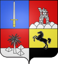
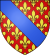
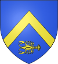
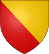
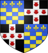

Armorial des familles de France
Améliorez sa vérifiabilité en les associant par des références à l'aide d'appels de notes.
Cette page non exhaustive recense les armoiries des familles françaises, dès lors qu'elles ont été publiées dans un des armoriaux cités en bibliographie (voir en fin d'article).
La mention ANF donnée pour certaines familles indique qu'on peut retrouver le blasonnement (ainsi que d'autres informations) dans l'armorial édité par cette association en 2004.
Voir aussi les armoriaux détaillés par région, province ou département :
A[modifier | modifier le code]
| Figure | Nom de la famille et blasonnement | Condition | Devise |
|---|---|---|---|

|
Famille d'Abancourt
D'argent, à une aigle éployée de gueules, becquée et membrée d'or.
|
famille noble éteinte | |

|
Famille d'Abbans olim Aban, Abban
D'argent, à la croix de gueules, cantonnée de deux roses du même en chef.
Bourgogne |
famille éteinte | |

|
Famille d'Abbeville
d'or aux trois écussons de gueules[4]. |
famille éteinte | |

|
Famille Abeille
D'azur, à une ruche d'or, accompagnée de trois abeilles de même, deux en chef et une en pointe.[1] |
famille noble subsistante | |
| Famille d'Abel
D'or à la bande d'azur chargée de deux molettes d'or, une en chef une en pointe; au chef d'azur chargé d'une molette d'or. Dauphiné |
Ferrer forte e spesso | ||
 |
Famille d'Abillon
De gueules, à cinq billettes d'argent couchées, rangées en pal.
Saintonge |
famille noble éteinte | |
| Famille Ablaÿ
origine : Irlande, Tournaisis (XVIe siècle) D'après l'Armorial de Tournai et du Tournaisis, page 23 de M. F.J. Bozière :
de sable à trois têtes et cols de destriers d'argent
de contre-vair, à la cotice de gueules (qui est de Hellemmes) |
famille noble éteinte | Perseverando | |
 |
Famille d'Abon
Parti, émanché d'or et d'azur de quatre pièces, les extrémités pommetées.
|
famille noble éteinte | Union maintient |
 |
Famille d'Abonde
Parti : au 1, d'azur, à trois étoiles d'or ; au 2, échiqueté d'or et d'azur, au chef d'argent, chargé d'une aigle éployée de sable.
Île-de-France |
famille noble éteinte | |
| Famille Abot de Bourgneuf
Ecartelé : aux 1 et 4, d'azur, à une coquille d'argent ; aux 2 et 3, d'argent, à une branche de fougère de sinople posée en pal[1]. Normandie |
famille noble éteinte | ||
| Famille Absolu (Île-de-France)
De gueules, à une croix de Malte d'or, accompagnée de deux molettes d'argent en chef, et d'un croissant du même en pointe.
ANF 20/05/1939 |
famille noble subsistante | ||
| Famille d'Abzac
d'argent à une bande d'azur chargée d'un besan d'or, à une bordure aussi d'azur chargée de dix besans d'or, ordonnés 5 en chef 2 en flanc et 3 en pointe.
ANF 21/12/1946 |
famille noble subsistante | ||
| Famille Achard (Poitou)
Coupé : au 1 d'argent, à trois double triangles évidés de sable, entrelacés deux à deux, ordonnés deux et un ; au 2 d'argent aussi, à trois fasces de gueules.
Cri : Achard, hache ! Liens externes : |
Ex virtute nobilitas | ||
 |
Famille d'Achard-Ferrus
De gueules à trois heaumes d'argent grillés et embellis d'or. Dauphiné |
||

|
Famille d'Aché (Normandie)
Chevronné d'or et de gueules.
|
Bellica virtus | |

|
Famille d'Achey (Bourgogne, Franche-Comté)
De gueules à deux haches d'armes d'or adossées en pal.
|
Jamais las d'acher | |
| Famille d'Achy (Dauphiné)
De gueules à trois chevrons d'argent. |
|||
| Famille d'Achyer (Dauphiné)
De gueules au chevron d'hermine. |
|||
| Famille des Acres (Normandie)
D'argent à trois aiglettes éployées de sable.
|
|||
| Famille Adam de Morche-Bosc-Fontaine (Normandie)
D'argent au chevron de gueules, accompagné de trois roses du même.[2],[3]
|
|||

|
Famille Adam d'Orville (Normandie)
De gueules au chevron d'or, accompagné de trois roses d'argent.[2],[3]
|
||

|
Famille d'Adaoust (Provence)
D'azur au chevron d'or, accompagné en pointe d'un lion du même, armé et lampassé de gueules ; au chef du second, chargé de trois étoiles de gueules.[2],[3] On trouve aussi : 

Différences entre dessin et blasonnement : Sur le dessin le lion ne traverse pas le chevron, mais broche sur lui..
|
famille noble | |
.svg?uselang=fr)
|
Maison d'Adhémar (Provence, Dauphiné, Languedoc, Bretagne) | famille noble subsistante | « Plus d'honneur que d'honneurs[6],[8] » |
| Famille d'Ageron (Dauphiné)
D'argent à trois croissants de gueules, deux en chef adossés, un en pointe renversé; au chef d'azur chargé de deux étoiles d'or. |
|||
| Famille d'Agoult (Dauphiné)
D'or au loup ravissant d'azur, armé et lampassé de gueules. |
Avidus committere pugnam | ||
|
Famille d'Aiguebelle (Dauphiné)
De gueules au griffon d'or couronné de même, la queue passé entre les jambes, retroussée sur le dos. |
||
|
Famille d'Aimeri (Dauphiné)
D'or à l'aigle éployé de sable, à la barre de même brochant le tout. |
||
| Famille Alacoque (fief de Hautecour)
D'or à un coq de gueules en chef, et un lion du même en pointe.[9] Origines : Saône-et-Loire (Verosvres/Paray-le-Monial). De cette famille est issue Sainte Marguerite-Marie Alacoque, religieuse bourguignonne, née le 22 juillet 1647 à Verosvres et morte le 17 octobre 1690 à Paray-le-Monial. Marguerite-Marie Alacoque est une mystique de l’Ordre de la Visitation, initiatrice avec Jean Eudes du culte du Sacré-Cœur. Elle a été canonisée en 1920. |
|||
|
Famille d'Alauzon (Dauphiné)
Coupé d'argent et de gueules, à deux roses de l'une en l'autre. |
||
| Famille d'Albanel (Dauphiné)
D'azur au chevron d'argent accompagné en chef de deux étoiles d'or et en pointe d'un croissant de même. |
|||
|
Famille d'Alberge (Dauphiné)
Coupé eu premier de gueules au lion d'argent, lampassé de gueules; au second palé d'argent et de gueules. |
||
| Famille d'Albert (de Luynes)
d'or, au lion couronné de gueules[10]. Languedoc D'or, au lion de gueules, armé, lampassé et couronné d'azur.[6] ANF 29/05/1948 |
famille ducale subsistante | ||
| Famille d'Albert-Témier (Dauphiné)
D'azur au lion d'argent. |
|||
 |
Famille d'Albignac (Dauphiné)
D'azur à trois pomme de pin d'or; au chef de même; écartelé de gueules au lion d'or |
Nihil in me nisi valor | |
| Maison d'Albon
D'or au dauphin vif d'azur, crété, oreillé et barbelé de gueules. |
A cruce victoria | ||
| Maison d'Albret
De gueules plein. Puis : Écartelé de France et d'Albret. Extraction chevaleresque, Gascogne |
famille noble éteinte | ||
| Famille d'Alby (Languedoc, Dauphiné)
D'azur à deux épées d'argent passées en sautoir, la pointe en haut; au chef cousu de gueules chargées de trois étoiles d'or. |
|||
|
Famille Alexandre de Neufermeil de Montry (comte de Neufermeil)
D'or, à un loup assis de sable, la tête contournée, lampassé de gueules, au chef du mesme chargée de 3 quintefeuilles d'argent. Surmontée d'une couronne comtale depuis le 27/10/1819. |
||
| Famille Alies
écartelé, au 1 et 4 d'azur à un chien d'argent, au 2 et 3 fascé d'argent et de gueules de huit pièces à la bande d'azur chargée de trois étoiles d'or |
|||
.svg?uselang=fr)
|
Famille d'Aligre
Burelé d'or et d'azur (de dix pièces), au chef du second, chargé de trois soleils du premier.[6],[11],[12],[13],[14] |
famille noble éteinte | Non uno gens splendida sole (en français : « Une race qui ne brille pas que par un seul soleil ») |
| Famille d'Allard (Dauphiné)
D'or au chevron de sable accompagné de trois étoiles d'azur rangées en chef et d'un croissant de gueules en pointe. |
|||
|
Famille d'Allard du Plantier (Dauphiné)
De sable au lion d'or armé, lampassé et couronnés de gueules, à la fasce partie d'argent et d'azur, chargée de deux étoiles de l'un en l'autre brochant sur le tout. |
||
|
Famille Allegret (Dauphiné)
De gueules à la croix d'or, cantonnée de quatre colombes d'argent. |
||

|
Famille d'Allemagne
écartelé, aux 1 et 4 d'azur à deux lions affrontés d'or soutenant une étoile du même ; aux 2 et 3 coupé mi parti en chef a) d'azur à la tour d'or ouverte ajourée et maçonnée de sable, surmontée de trois étoiles d'argent rangées en fasce, b) de gueules à l'épée haute d'argent ; c) d'or au pont à quatre arches de sable terrassé de sinople, qui est des barons de l'Empire.  Famille d'Allemagne (branche de Provence), : D'azur à deux lions affrontés d'or soutenant une étoile du même[6],[15]. Claude d'Allemagne, dit Dallemagne (branche de Bugey), (1754 ✝ 1813), général français, Coupé : au I, parti a) d'azur, à la tour d'or maçonnée, ajourée et ouverte de sable, surmontée de trois étoiles d'argent rangées en fasce, b) de gueules, à l'épée haute d'argent ; au II, d'or, au pont de sable de quatre arches ajouré du champ, terrassé de sinople[6],[15],[16]. |
famille noble subsistante | Tout à ma Patrie |
| Famille Alleman de Valbonnais (Dauphiné, sud de Grenoble)
De gueules semé de lys d'or, bandé d'argent[17]. Cimier : un lion passant surmonté d'un sauvage tenant un bâton noueux à sa dextre, avec ce mot : Robur! Support : deux sauvages Deux gouverneurs du Dauphiné entre 1280 et 1320. |
Première devise : Place, place à madame!
Deuxième devise : Tot in corde quot in armis | ||
|
Famille des Almars (Dauphiné)
Écartelé au 1 et 4 d'azur à trois bande d'or, qui est d'Adhémar; au 2 et 3 parti d'azur et d'or, aux chef de gueules chargés de deux besant d'argent. |
Stimulis agitabit amaris | |

|
Famille d'Allonville (Normandie, Beauce, Forez)
d'argent à deux fasces de sable[6]. |
famille noble éteinte | |

|
Famille d'Amanzé (Bourgogne)
de gueules à trois coquilles d'or[18]. |
famille noble éteinte | |
| Famille d'Amboise (France - Touraine)
palé d'or et de gueules de six pièces éteinte en 1656 |
famille noble éteinte | Non omnis moriar | |
| Famille Amelot de Chaillou
D'azur, à trois cœurs d'or, accompagnés en chef d'un soleil du même.[6] |
Est illis igneus ardor[6] | ||

|
Famille d'Andigné
(Anjou, Bretagne) D'argent à trois aiglettes de gueules, becquées et membrées d'azur.[8] |
Aquila non capit muscas[8] (en français : « L'aigle ne prend pas les mouches ») | |

|
Famille d'André
D'or, au sautoir de gueules Provence |
||
| Famille André (Bigorre : Rabastens)
De gueules au sautoir d'or ANF 30/11/1990 |
famille noble[19]
subsistante |
||

|
Famille d'Anglemont de Tassigny
D'azur au chevron d'argent, accompagné de trois roses du même. |
Famille notable subsistante | |

|
Famille d'Anglure (Champagne-Ardenne, Lorraine)
D'or, semé de grelots cousus d'argent soutenus chacun d'un croissant de gueules |
Famille noble éteinte | Juravit Dominus David veritatem (en français : « Jurer la vérité au nom du Dieu de David ») |
.svg?uselang=fr)
|
Famille d'Anterroches (Auvergne)
D'azur, à la bande d'or, chargée de trois mouchetures d'hermine de sable, accompagnée de deux croisettes du second, surmontée de trois ondes d'argent. ANF 16/12/1954 |
Famille noble subsistante | |
| Famille Arbaleste, vicomtes de Melun
D'or au sautoir engreslé de sable, cantonné de 4 arbalètes tendues de gueules[20]. |
|||

|
Famille d'Arexy
d'or à une bande de gueules chargée de 3 demi vols d'argent et accompagnée de 2 molettes de gueules, au chef d'azur chargé d'un soleil d'or ANF 10/06/1982 |
famille noble subsistante | |
| Famille Arloing
Écartelé en sautoir au 1 d’or à une étoile d’azur ; au 2 d’azur à un lion la tête contournée d’or, armé et lampassé de gueules, brandissant de sa dextre une épée d’argent garnie d’or; au 3 d’azur à un lion contourné la tête contre-contournée d’or, armé et lampassé de gueules, brandissant de sa sénestre une épée d’argent garnie d’or; au 4 d’or à une aigle d’azur lampassée et armée de gueules. Cimier : Un demi-lion issant, lampassé et armé de gueules, brandissant dans ses pattes un livre ouvert chargé de deux lettre A, le tout d’or. |
A deux plus loin | ||

|
Famille d'Arlot de Cumont et Famille d'Arlot de Saint-Saud
D'azur à trois étoiles d'argent rangées en fasce, accomagnées en chef d'un croissant de même et en pointe d'un arlot (ou grappe de raisin), aussi d'argent pampré et feuillé de sinople[5]
|
famille noble subsistante | |
| Famille Arnauld
D'azur, au chevron d'or, accompagné en chef de deux palmes adossées, et en pointe d'un rocher de six coupeaux, le tout de même. .[2] |
|||

|
Famille Arnous-Rivière ou Arnous de Rivière
Coupé : au premier de gueules aux trois étoiles d'argent rangées en fasce, au second d'argent à la rivière de sinople en fasce.[21]
|
famille noble subsistante | |

|
Famille d'Armagnac de Castanet
Aux 1 et 4 de gueules, au lévrier d'argent, accosté de gueules, bouclé, cloué d'or accompagné de deux grues aussi d'argent, le tout entouré d'une bordure crénelée de huit pièces d'or; aux 2 et 3 d'argent, chargé d'un coticé de pourpre, à la bordure aussi crénelée de six pièces de gueules. ANF 06/07/1964 |
famille noble subsistante | Ex candore decus |
  
|
Arpajon De gueules, à la harpe d'or, cordée de même.
en 1351, le blason des Arpajon (Jean Ier d'Arpajon) se lisait ainsi : en 1516, le blason des Arpajon se lisait ainsi : en 1522, le blason des Arpajon se lisait ainsi :
Écartelé au 1er de gueules à la croix cléchée, vidée et pommetée de douze pièces d’or, au 2e d'argent aux quatre pals de gueules, au 3e de gueules à la harpe d'or, au 4e d'azur aux trois fleurs-de-lis d'or, l'écu brisé d'une barre d'un bâton noueux de gueules brochant sur le tout[24]. en 1645, le blason des Arpajon se lisait ainsi :
|
famille noble éteinte. | Quidquid agas, prudenter agas. |

|
Famille d'Artensec
d'azur à une fasce voutée d'or bordée de gueules ; au chef cousu du même, chargé d'un croissant d'argent accosté de deux étoiles aussi d'or[5]
|
||
| Maison d'Astarac
Écartelé d'or et de gueules. Extraction chevaleresque, Gascogne |
famille noble éteinte | ||

|
Famille d'Astorg
D'or, à l'aigle de sable.[6],[11] ANF-1993 |
famille noble subsistante | nihil me payet[6] |
| Famille Aubriot (Bourgogne)
De gueules à l'étoile d'or à huit branches, au chef bandé d’or et d’azur de six pièces et à la bordure de gueules. |
|||

|
Famille d'Audiffret
D'or, au chevron d'azur, chargé de cinq étoiles d'or, et accompagné en pointe d'une montagne de trois coupeaux de sable, celui du milieu surmonté d'un faucon du même, la tête contournée et sa patte dextre levée ; à la bordure componée d'or et de sable de 28 pièces. Couronne : Couronne ducale, surmontée d'un fer de Flèche d'or. Support : Deux faucons ; l'écu orné de branches de laurier et d'olivier, de sinople. Titre : Marquis. Branche cadette : Audiffret-Pasquier (Duc d') ANF-1952 |
famille noble | |
| Famille Augier de Moussac / Crémiers
D'or à trois croix de sable, pommetées par le haut et posées en pal Timbre: Couronne de marquis (branche ainée) Supports: Deux Cygnes contournés au naturel |
famille noble
subsistante | ||

|
Famille d'Aumont
D'argent, au chevron de gueules, accompagné de 7 merlettes du même (2, 2, 1 et 2).[11] . |
||

|
Famille d'Auzac
Coupé au 1 de gueules à une trangle d'argent accompagnée en chef de deux étoiles d'or et en pointe d'un (alias : deux) croissant d'argent ; au 2 d'azur à une tour d'argent entourée d'un cep de vigne de sinople d'Auzac de Campagnac Parti au 1 d'azur à la tour ouverte, ajourée et crénellée, maçonnée de sable, entourée d'un cep de vigne de sinople surmontée d'une étoile d'or; au 2 de gueules à la fasce d'or en devise, accompagnée en chef et en pointe par deux croissants d'or surmontés chacun d'une étoile du même d'Auzac de Lamartinie Part;au 1 d'azur à la tour d'argent surmontée d'une étoile d'or;au 2 de gueules à la fasce d'or en devise accompagnée de part et d'autre de deux croissant aussi d'or, chacun surmonté d'une étoile du même.
|
||
| Famille Avril de Burey (Anjou et Bretagne[27]) D'argent au pin de sinople, au chef d'azur, chargé de trois roses (ou étoiles) d'or.[6]
|
Semper virens[6] |


B[modifier | modifier le code]
| Figure | Nom de la famille et blasonnement | Condition | Devise | ||
|---|---|---|---|---|---|
.svg?uselang=fr) |
Famille Bachelu
Écartelé au 1, contre-écartelé denché d'argent et de gueules, au 2 du quartier des Barons militaires ; au 3, parti : a. d'argent au chevron de gueules, accompagné de trois mains appaumées du même ; b. de gueules à trois feuilles de chêne d'argent ; au 4, coupé : a. écartelé d'argent et de gueules ; b. fascé d'or et d'azur, de quatre pièces. |
||||

|
Famille Baduel d'Oustrac
D'or à quatre pals d'azur[28]. |
Famille notable subsistante | |||

|
Famille de Baecque
écartelé au I et IV d'or au sanglier courant de sable, au II et III, d'or à l'aigle bicéphale de sable[29]. Flandres |
Famille notable subsistante | |||
| Famille Baillet
D'azur à la bande d'argent accompagnée de deux dragons d'or[6]. |
|||||
.svg?uselang=fr)
|
Famille de Bailleul (Pays de Caux)
D'argent, à la fasce de gueules, accompagnée de 3 mouchetures d'hermine de sable, 2 en chef et une en pointe. |
||||
| Famille de Balandonne
D'argent au lion de sable lampassé de gueules ; au chef d'azur chargé de trois molettes d'or. |
|||||

|
Famille de Balathier-Lantage
De sable à une fasce d'or. |
||||
 |
Famille de Balby de Vernon olim Cabalbi
Armes anciennes (d'après les jugements de maintenue de noblesse du XVIIe siècle) : De gueules à un faucon d'argent, langué de gueules, posé sur un monde d'azur, cintré et croisé d'or[30] (armes enregistrées en 1701 à l'Armorial Armorial général de France 14e volume Languedoc)[31] Armes modernes indiquées en 1914 par Gustave Chaix d'Est-Ange comme portées par les représentants actuels de cette famille[30] : D'or aux trois poissons d'azur fascés l'un sur l'autre Couronne de marquis. Extraction 1547, Languedoc, ANF 1966 |
famille noble subsistante | Semper de te digna sequere | ||
 |
Famille de Bancalis de Maurel d'Aragon olim Bancal
Écartelé aux 1 et 4 d'azur, à l'aigle éployée d'or (de Bancalis), aux 2 et 3 d'azur, au chevron d'or, accompagné de trois étoiles d'argent (de Maurel d'Aragon). Extraction 1544, Rouergue, ANF 1938 |
famille noble subsistante | Festina lente | ||
| Famille de Banyuls
Fascé de sable et d'argent de six pièces. Extraction chevaleresque, Roussillon |
famille noble éteinte | ||||
| Famille de Barante
Ecartelé aux 1 et 4 d'or à une bruyère de sinople, soutenue d'une champagne de même, au chef d'azur chargé d'un soleil rayonnant d'argent; aux 2 et 3 d'azur à la croix pattée d'argent |
|||||
| Famille Barazer de Lannurien
De gueules à une barre d’hermine( |
Famille notable subsistante | ||||

|
Famille Barbey d'Aurevilly
D'azur, à deux bars adossés d'argent, au chef de gueules, chargé de trois besants d'or. |
||||
| Famille de Barbeyrac Saint-Maurice
De gueules à un cheval gai d'argent au chef cousu d'azur chargé d'un croissant d'argent accosté de deux étoiles d'or. Charles de Barbeyrac (1649 - 1699) Jean Barbeyrac (1674 - 1744) Saint-Aunès - Hérault - Languedoc Saint-Maurice-Navacelles - Hérault - Languedoc Origine : Hérault - Languedoc. Supports : Deux Lions. Couronne : de Marquis. ANF 26/05/1934 |
Honestate pulchritudo | ||||
| François de Barbizy, écuyer, seigneur de la Houssaye (Yonne).
D'azur, à une brebis d'argent passant sur une terrasse de sinople, au lambel d'or. |
|||||
| Famille Barbou
D'azur, à la main dextre de carnation, parée d'argent, mouvante d'une nuée du même au flanc senestre, et tenant une palme et un épi de blé d'or, passés en sautoir, le tout surmonté d'un croissant renversé d'or, où le croissant est montant. Origine : Saussay |
Famille notable subsistante | ||||
| Famille Bareth
D’azur à une étoile à quatre rais d’argent au chef du même.[33] Armes parlantes (étoile à quatre rais : représentation stylisée d’une « barrette » - c’est-à-dire d'un bonnet d’évêque vu du dessus) Origine : Lorraine (Vosges) |
famille noble subsistante[34] | ||||
| Famille Baroux
Palé de huit pièces de gueules et d'azur. Un ours et un loup rampants se faisant face tous deux cendrés tenants deux lances de tournois d'argent passées en sautoir, accompagnés au point du chef d'une croix pattée d'argent. Cri :"deus vult" |
ad honores vinces | ||||
| Famille de Barrau
D'argent à un chevron d'azur accompagné en pointe d'un lion rampant de gueules ; au chef d'azur chargé d'un croissant d'argent accosté de 2 étoiles du même (Rouergue) |
|||||

|
Famille de Barrau de Muratel
Barré d'argent et de pourpre alias Burrelé d'argent et de pourpre au chef de gueules chargé de trois étoiles d'or. |
||||
| Famille Barrin de La Galissonnière
D'azur, à trois papillons d'or.[32],[6],[35]
|
famille noble éteinte | ||||
| Famille de Barruel
Armes anciennes : Barré d'or et d'azur de 6 pièces Armes actuelles : D'or à la bande d'azur chargée de trois étoiles d'argent Vivarais, secrétaire du roi 1762-1784 ANF 1858 - 7/6/1984 |
|||||
| Famille des Baux
ancien : de gueules, l'étoile 16-rayons d'argent (Baux) Puis, au fil des siècles et des alliances, a Prince d'Orange : écartelé, aux I et IV, de gueules, l'étoile 16-rayons d'argent (Baux), et aux II et III d'or, au cor de chasse d'azur, virolé et lié de gueules (Orange) |
|||||

|
Famille de Bazelaire
d'argent, au faisceau de trois flèches de gueules, au chef d'azur chargé de trois étoiles d'argent |
||||
| Famille Beaudouin de Saint Georges ou Beaudoin de Saint George
D'après le Grand Armorial International de Monsieur d'Ampleman : D'azur à trois chevrons d'or accompagnés de deux étoiles d'argent D'après des archives familiales de la famille Saguez de Breuvery : D'azur à trois chevrons d'or brisés acimés et deux étoiles d'argent sur un champ d'azur surmonté d'une couronne d'ancien baron et pour supports, un lion et un cheval |
|||||
| Maison de Bauffremont
Vairé d'or et de gueules[36]. Puis : Écartelé : au I et IV contre-écartelé : au 1 vairé d'or et de gueules (Bauffremont), au 2 de gueules à l'aigle d'or (Vienne), chargé sur son estomac d'un écusson de sable à trois têtes de léopard d'argent (Listenois), au 3 d'azur à 10 besants d'argent (Villelume), au 4 d'azur au chevron d'or (Gorrevod) ; aux II et III contre écartelé : au 1 et 4 d'azur à 3 fleurs de lys à la bordure engrelée de gueules (Courtenay moderne), au 2 et 3 d'or à 3 tourteaux de gueules (Courtenay ancien). Extraction chevaleresque, Lorraine, ANF 1938 |
famille noble subsistante | Dieu aide au premier Chrétien | |||
| Famille de Bayard du Terrail
D'azur, au chef d'argent, chargé d'un lion naissant de gueules, à la cotice d'or brochant sur le tout. |
Accipit ut det | ||||
.svg?uselang=fr)
|
Famille de Beaujeu
D'or, au lion de sable armé et lampassé de gueules, au lambel de cinq pendants de gueules, brochant sur le lion. |
||||
| Famille de Beaumont (Repaire, Beynac, Autier)
De gueules à la fasce d'argent, chargée de trois fleurs de lys d'azur[5],[8]
|
Impavidum ferient ruinae[8][37] (en français : « Les ruines le frapperont sans qu'il tremble. »)[8]
Autre : Amitié de Beaumont[8] | ||||
| Famille de Beaupoil de Saint-Aulaire
De gueules à trois accouples de chiens d'argent posés à plomb, les laisses d'azur à dextre et en fasce.[5] |
famille noble subsistante | Semper fidelis | |||
| Famille de Beaurepaire de Louvagny
De sable à trois gerbes d’avoine d’argent. Anobli en 1453, Normandie |
|||||
 |
Famille de Becdelièvre
De sable, à deux croix de calvaire, treflées et fichées d'argent, accompagnées en pointe d'une coquille du même. |
famille noble subsistante | Hoc Tegmine Tutus | ||
| Famille Becquet de Sonnay
De gueules à trois chevrons d'argent. Supports : deux épées |
Medium Tenuere Brati | ||||
| Famille Beguin-Billecocq
D'azur, à une oye d'argent, le col passé dans une couronne d'or, et un croissant d'argent posé en chef, accosté de deux roses de même[38]. Bourgogne |
Famille notable subsistante | ||||
|  | Famille Belliard
Écartelé: au 1, d'azur, à l'épée haute d'argent garnie d'or ; au 2, de gueules, aux ruines d'argent ; au 3, de gueules, à un palmier terrassé d'argent adextré d'une pyramide et senestré de deux autres du même ; au 4, d'or, au cheval cabré de sable 19e, Empire - Poitou, Normandie |
||||
| Famille de Belloc de Chamborant
Écartelé aux 1 et 4 : coupé d'or et de gueules à la bande coupée d'azur et d'or chargé d'un poisson d'argent, et aux 2 et 3 d'or au lion rampant de sable, armé et lampassé de gueules. |
|||||

|
Famille Benoist, Benoist de La Grandière, Benoist de La Chillerie, Benoist de Genault
D'azur à une cloche d'argent accostée de deux étoiles du même ; au chef cousu de gueules chargé de trois tours d'argent. D'or, à un cœur de gueules.
seigneur de la Grandière, de La Chillerie, de Genault, de La Massière, de La Mothe-Guedon, de La Folie, de La Gibaudière, du Ray, de Thaix, d'Yzeure... |
Vir amator civitatis | |||

|
Famille de Benoît
D'azur à 3 pals d'or, au chef d'argent, chargé de 3 merlettes de sable |
||||
 |
Maison de Béon
D'or aux deux vaches de gueules, accornées, colletées et clarinées d'azur, passant l'une sur l'autre (Béarn). Puis : Écartelé aux 1 et 4 d'or à deux vaches de gueules (Béarn), aux 2 et 3 d'azur à la croix d'argent (Béon). Extraction chevaleresque, honneurs de la cour 1782, Béarn |
famille noble éteinte | |||
| Famille Berard
De gueules, au demi-vol d'argent[6].
|
Donec dent sidera virlus[6] | ||||
| Famille Berlier de Vauplane
D'azur à un bélier passant d'argent; au chef cousu de gueules chargé de trois besants d'or |
Famille notable subsistance | ||||
| Famille Bernard
D’argent à trois abeilles au naturel, 2 et 1 ; parfois les abeilles accompagnent un chevron de gueules. Origine : Erquinghem-Lys - Lille |
Mellificamus Domino | ||||
| Famille Berthier
D'azur, à deux épées d'argent, garnies d'or, passées en sautoir, cantonnées en chef d'un soleil, en flanc et en pointe de trois cœurs du même, enflammés de gueules[6],[11] |
|||||
| Famille Bertran de Balanda
Parti, au I, d'azur à la bande de gueules bordée d'or (qui est Bertran), au II, de gueules à deux béliers d'argent passants l'un sur l'autre, accornés, accolés et clarinés d'or (qui est de Balanda). Roussillon |
Famille notable subsistante | ||||
| Famille de Bertrand (Languedoc)
De gueules, à trois trèfles d'or |
|||||

|
Maison de Béthune
D'argent à la fasce de gueules. |
||||
| Famille Besancenot[39]
D'azur, à un palmier arraché de sinople
|
|||||
.svg?uselang=fr)
|
Famille de Béziade,
D’azur à une fasce d’or chargé de deux étoiles de gueules et une coquille d’or en pointe.[41],[11]
|
Vicit iter durum pietas[13] | |||
| Famille Besson de La Rochette
D'azur à la fasce d'or accompagné en pointe d'une montagne d'argent et en chef d'un croissant du même. |
|||||
| Famille de Béthencourt
D'argent au lion de sable, armé et lampassé de gueules. Bray, Normandie, ancienne immémoriale, XVIIe siècle[42],[43] |
|||||
| Famille Bezard-Falgas
De gueules à deux chevrons d'or, au chef cousu d'azur chargé d'une étoile d'or. Timbre : heaume taré de face avec ses lambrequins Supports : deux lions au naturel |
Être plutôt qu'avoir | ||||
| Famille de Bigorie
De sinople à trois pals d'argent[45]. Limousin |
Famille notable subsistante | Rectè[30]
droiture | |||
.svg?uselang=fr)
|
Famille Bigot (Préameneu, Morogues)
(Bretagne, Berry, Orléanais) De sable, à trois têtes de léopard d'or, lampassées de gueules.[6],[8] |
Tout de par Dieu[8][47] | |||
| Famille de Bizemont
D'azur, au chevron d'or, accompagné en chef de deux croissants d'argent, et en pointe d'une molette d'éperon d'or Picardie, Île-de-France, extraction 1536 ANF 493 - 6/6/1942 |
Jungat stemma virtus | ||||
| Famille Bizot
D'argent, un chevron d'or accompagné de 3 roses, 2 en chef et 1 en pointe. |
Famille notable subsistante | ||||
| Famille de Blacas
D'argent à la comète à seize rais de gueules. Différences entre dessin et blasonnement : le meuble dessiné n'est pas une comète.
|
|||||
| Famille de Blanquefort
Contrebandé de 4 pièces d'or et de gueules. |
|||||
Famille Blondel
|
|||||
| Famille de Bodin de Galembert
D'azur au chevron d'or accompagné de trois roses de même, au chef d'argent chargé de trois merlettes d'azur. |
famille noble subsistante | Pro veritate et libertate
(en français : "Pour la vérité et la liberté") et In hoc signo vinces (en français : "Par ce signe tu vaincras"). | |||
| Famille Bohier
d’or, au lion d’azur, au chef de gueules
|
famille noble |
« S'il vient à point m’en souviendra ». | |||
| Famille Boileau de Saint-Pau
D'azur au chevron d'or surmonté de 3 trèfles d'or mal ordonnés |
|||||
| Famille de Boiséon
D'azur, au chevron d'argent, accompagné de trois têtes de léopard d'or. |
|||||
Famille Boissat de Mazerat
|
| ||||

|
Famille de Boissieu
D'azur au chevron d'or chargé à la pointe d'un trèfle du premier anobli en 1784 puis maintenue en 1787, Lyonnais, ANF-1936. |
||||
 |
Famille Bonaparte puis maison impériale de France
De gueules à deux barres d'or accompagnées de deux étoiles du même, une en chef, l'autre en pointe. Puis : D'azur, à l'aigle impériale d'or, la tête contournée, au vol abaissé, empiétant un foudre du même. |
maison souveraine subsistante | |||
| Famille de Bonnecaze
Écartelé, au 1 d'azur à trois tourteaux de sable, accostés de deux étoiles d'or, au 2 d'or à trois croissants d'azur, au 3 de gueules à la tour d'argent, au 4 d'or au lion de sable. |
|||||

|
Famille Bonnin de La Bonninière de Beaumont
D'argent, à une fleur-de-lis de gueules.1 Supports : deux lions, au naturel Extraction chevaleresque. Marquis par lettres patentes d'août 1757. Touraine |
famille noble subsistante | |||
| Famille de Borrey
D'argent à trois bandes d'azur, au chef de gueules chargé d'un lion léopardé d'argent |
|||||
| Famille de Boscas
d'argent au lion couché d'or * au pied d'un arbre; au chef d'azur chargé de 3 roses d'or
|
|||||
Famille du Bosc de Taret
|
|||||
| Famille de Boucher de La Tour du Roch
D'argent à deux lions rampants (aliàs affrontés) de gueules; au chef d'azur chargé d'un croissant accosté de deux étoiles, le tout d'or.[48]
Périgord |
|||||
| Famille Boudran
D'azur à la bande d'or chargée de trois cœurs de gueules.[6] |
|||||
Maison de Bourbon Busset
Extraction chevaleresque (branche illégitime de la maison capétienne de Bourbon), France, ANF 1992 |
famille noble subsistante | Espérance | |||

|
Famille de Bourgoing
D'azur à la croix ancrée d'or. |
||||

|
Bourgoing olim le Bourgoing, le Bourgoing de Faulin, le Bourgoing de Champlévrier
D'argent à trois tourteaux de gueules[49]. |
||||
| Famille de Bourgues
De gueule au lys d'or surmonté d'un château de sable, bordé d'azur à la chaine d'or en pointe surmontée d'une étoile etavec cinq coquilles de même. |
|||||
| Famille Bourguignon d'Herbigny
De sable à une flamme de gueules mouvante de la pointe de l'écu[50].
|
Famille notable subsistante | Ardens ut ignis Ardent comme le feu | |||
| Famille Bourret
D'azur à trois cannettes d'argent. |
|||||
| Famille de Bouville
D'argent à la fasce de gueules chargée de trois annelets d'or.[51] |
|||||
| Famille de Bovis
Coupé, au 1 d'azur à un chevron d'or accompagné de trois roses d'argent, au 2 de gueules à un bœuf passant d'argent. |
|||||
| Famille de Boyer de Montégut
D'argent au chevron de sable, accompné, en chef de 2 croissants du mesme et, en pointe d'une corneille aussi de sable ; au chef d'azur, chargé dun croissant d'or accosté de 2 étoiles du mesme.[21] |
famille noble subsistante | ||||
| Famille de Bragelongne
Bourgogne - Orléanais - Île-de-France De gueules, à la fasce d'argent, chargée d'une coquille de sable, et accompagnée de trois molettes d'éperon d'or.[6] |
Non cedam malis[6] | ||||

|
Famille de Brébisson
De gueules au lion d'argent. Normandie |
||||
| Famille de Brianson
De gueules à trois faces ondées d'or[5] |
|||||
| Famille Briçonnet
Touraine D'azur, à la bande componnée d'or et de gueules de cinq pièces, le premier compon de gueules ch d'une étoile d'or, ladite bande acc. d'une étoile d'or au canton senestre du chef.[6] |
|||||

|
Maison de Brienne
Champagne Écartelé : I et IV, d'azur, semé de billettes d'or, au lion du même, armé et lampassé de gueules, brochant sur le tout ; II et III, d'azur à la bande d'argent côtoyée de deux doubles cotices potencées et contre-potencées d'or ; sur-le-tout d'argent à la croix potencée d'or, cantonnée de quatre croisettes du même.[52] |
||||
| Famille de Broche (anciennement de Brosse ou de Broce)
Armes anciennes : d'azur, à trois gerbes de blé (ou brosses) d'or liées de gueules qui est de Brosse puis 1696 d'Hozier : un oranger d'or dans son bac de même sur un lit de sable sur fond d'azur, en chef trois étoiles d'or sur fond de gueules qui est de Broche A, par suite d'alliance, ajouté à son nom celui de "de Vaux" et écartelé ses armes de celle de cette famille : Écartelé: aux 1 et 4, (de Brosse); aux 2 et 3, d'argent, à trois têtes d'ours arrachées de sable muselées d'or (de Vaux), sur le tout "de Broche". Alias : de Broche de Saint-André, Cruviers, de La Palliole, de Méjanes, des Combes (seule branche subsistante de nos jours), Vallongue, de Vaux. |
exilio contenta svo | ||||
| Maison de Broglie
D'or, au sautoir ancré d'azur.[54] ANF 5 - 28/05/1933 |
famille noble subsistante | Pour l'avenir. | |||
| Famille Broquet, en Champagne
D'azur au cerf élancé d'or, accompagné en pointe d'une étoile à huit rais du même alias au brocard élancé d'or Champagne (Pays d'Othe, baronnie de Villemaur) D'ap. Blasons des familles d'Europe, Frédéric Luz, La place Royale, 1999. |
|||||
| Famille Broquet de Bellavesne, en Ponthieu
D'or à trois merlettes de sable Abbeville, Ponthieu D'ap. Louis-Eugène de La Gorgue-Rosny, Recherches généalogiques sur les comtés de Ponthieu, Boulogne et Guines, 1873. Nobiliaire du Ponthieu et Vimeu, par René de Belleval. |
|||||

|
Famille Brossart de Cléry
(Bretagne, Normandie, Île-de-France, Anjou, etc.) D'azur au chevron d'argent, accompagné de trois fleurs de lys d'or.[8] |
Audenti succedit opus[8] (en français : « L'audace donne le succès[55] ») | |||
| Famille Broussas de la Bareille
D'azur, au chevron d'or, accompagné en chef de deux roses du même, et en pointe d'un sphinx grec aussi d'or. Origine : Saint-Cyr, Haute-Vienne. |
" In carne moritur, et quod honoris " | ||||
| Famille de Bruc
D'argent, à la rose de gueules boutonnée d'or.[8]
|
Flos florum eques equitum[8] (en français : « Fleur des fleurs, chevalier des chevaliers »))
Autre : Flos florum, virgo Maria, in te confido[8] (en français : « Fleur des fleurs, Vierge Marie, je mets ma confiance en vous ») |
||||
| Famille de Bruchard
D'azur, à trois fasces d'or et à la bande de gueules brochant sur le tout[5]
|
|||||
| Famille de Brueys
Branche aînée des Brueys; Brueys (de) Souvignargues : "D'or, au lion de gueules, armé et lampassé de sable, à la cotice d'azur, bordée d'argent, brochant sur le tout, embrassée des deux pattes de devant du lion. Supports: deux lions, au naturel." Devise : Oculi mei semper ad dominum.
|
Oculi mei semper ad dominum. | ||||
 
|
Famille de Bruyères-Chalabre
D’or au lion rampant de sable, armé et lampassé de gueules, la queue fourchue, nouée et passée en sautoir (qui est de Bruyères)[56]
Parti, au premier d’or au lion rampant de sable, armé et lampassé de gueules, la queue fourchue, nouée et passée en sautoir (qui est de Bruyères) au deuxième d'azur aux neuf besants d'or et au chef du même (qui est de Melun)[56] |
Sola fides sufficit (en français : « Seule la foi suffit ») | |||
| Famille de Bucy (ïle-de-France)
D'argent à dix billettes de gueules ordonnées 4, 3, 2, 1.[59] |
|||||
| Famille de Budos
D'azur à trois bandes d'or |
|||||
| Famille de Bueil
D'azur au croissant d'argent accompagné de six croisettes potencées au pied fiché d'or ordonnées 3 et 3[60]. |
|||||
Famille de Buisson de Bournazel
Anoblissement par charge (capitoulat) 1444, Rouergue, Languedoc |
famille noble éteinte | Semper virens | |||

|
Famille de Butler
D'azur au chef endenché d'or Irlande XIIe siècle, France 1744 |
Depressus extollor | |||
| Famille de Buscaylet
D'azur à deux lions d'or debout affrontés, au chef cousu de gueules chargé d'un croissant d'argent accosté de deux étoiles d'or.[61]. D'azur à deux louves d'or ou d'argent debout affrontées, au chef cousu de gueules chargé d'un croissant d'argent accosté de deux étoiles d'or.[61]. Origine : Guyenne (Rouergue) - (XIIIe siècle) France |
|||||

|
Famille Buy (Fief de Croze)
d'azur à la tierce d'or accompagnée en chef d'un pommier arraché d'or, feuillé de sinople et fruité de gueules, accosté d'un dextrochère et d'un sénestrochère adossés de carnation tenant chacun une épée d'argent garnie d'or, et en pointe d'une tête d'ange aux ailes déployées d'argent et la bouche d'or Mâconnais (Pierreclos/Bussières), Charolais |


C[modifier | modifier le code]
| Figure | Nom de la famille et blasonnement | Condition | Devise |
|---|---|---|---|
| Famille Cabon
D'argent à trois têtes de coq arrachées de gueules. |
|||
| Famille de Cacqueray
D'or à 3 roses de gueules.[62] Ancienne extraction 1470, Normandie, ANF 1938 |
famille noble subsistante | Semper et ubique fidelis | |
| Famille de Cadoudal
D'azur au dextrochère armé d'or, mouvant du flanc dextre, la main au naturel, tenant une épée d'argent montée d'or et chargé d'un bouclier antique d'hermines, à la fleur de lys de gueules en abîme. Anoblissement 1815, Bretagne, ANF 1938 |
famille noble subsistante | Doue ha mem bro | |
| Famille de Calameau
D'or à trois croix de Lorraine de gueules en chef, et trois larmes de sable en pointe. |
|||

|
Famille de Calouin de Tréville
De gueules à trois quintefeuilles d'argent. |
||
Famille de Cambacérès
|
famille noble éteinte | ||
.svg?uselang=fr)
|
Famille de Cambourg
De gueules à trois fasces échiquetées d'azur et d'argent à deux tires. |
||

|
Maison du Cambout de Coislin
De gueules, à trois fasces échiquetées d'argent et d'azur de deux tires.[6] Extraction chevaleresque, Bretagne |
famille noble éteinte | Jamais en vain |
| Famille de Canal
D'argent au chevron d'azur. |
|||
|  | Famille de Candie
De gueules, semé de fleurs de lis d'or, à la bande d'azur, brochant sur le tout. À l'origine, les Candie portaient soit de gueules avec le lion semé du Bugey et de la Bresse, ou le lion d'or. L’énigmatique devise des Candie « Tout à rebours » suggère que les sages, parfois, comme les écrevisses, avancent à reculons. L'écusson de gueules semé de fleurs de lys d'or représente les armes originelles des seigneurs de Candie, concédées par ligne de sang en 1250 par le roi de France Louis IX (Saint Louis). |
Tout a rebours | |

|
Famille Capitain de Clacy
De sinople à une bande d’or accompagnée de six besants de même en orle. |
famille notable éteinte | |
| Famille de Carbonnier de Marsac
de gueules à la croix épiscopale d'argent accompagnée de deux croissants aussi d'argent, l'un en senestre supérieur, l'autre en dextre inférieur, deux étoiles du même dans les deux autres cantons Périgorg, Guyenne |
|||
| Famille de Cardevac d'Havrincourt
D'hermine au chef de sable. Noblesse artésienne.
|
|||
 |
Famille de Carné
Extraction chevaleresque 1203, Bretagne, ANF 1933 |
famille noble subsistante | Plutôt rompre que plier |
| Famille Cassini
D’or a la fasce d’azur accompagnée de six étoiles à six branches du même trois rangées en chef et trois rangées en champagne. |
|||
| Maison de Castellane
De gueules, à la tour donjonnée de trois pièces d'or, maçonnée de sable, celle du milieu plus élevée.[63] Extraction chevaleresque, Provence, ANF 1942 |
famille noble subsistante | May d'hounour que d'hounours (en français : "Plus d'honneur que d'honneurs") | |
Maison de Caumont
Extraction chevaleresque, Gascogne, ANF 1946 |
famille noble subsistante | Fortior coronatur, Fit via vi
Cri : Ferme La Force ! | |
| Famille de Caunes
De gueules au chevron d'argent, accompagné de trois roches du même, deux en chef et une en pointe, au chef cousu d'azur, chargé de trois canettes d'argent[64] |
Famille notable subsistante | ||
| Famille de Cavaillon
D'or au lion de sable, armé et lampassé de gueules. |
|||
|
Famille Chabalier olim de Chabalier
D’azur au sanglier passant d’argent défendu de gueules, au chef d’argent chargé d’une tour de gueules crénelée et ajourée, la porte ouverte d’azur au ruisseau naissant de cette porte du même.[21] Gévaudan |
Cui me insequitur adsum (en français : « Qui me cherche me trouve ») | |
| Maison de Chabot
D'or à trois chabots de gueules en pal.[8] |
famille noble subsistante | Concussus surgo[8] (en français : « Quand on me frappe je bondis »)[65] | |
| Famille de Chabot et de Chabot de Souville
D'azur à une étoile d'or, chargée d'une tour de gueules. |
|||
| Famille Chaix de Lavarène
D'or au chêne de sinople glanté d'or au chef de gueules chargé d'un croissant d'argent entre deux étoiles d'or. |
|||
| Famille de Chalon
d'azur au lion passant d'or Guyenne, Île-de-France - extraction 1567 ANF - 1252 - 22 juin 1962 |
|||
| Maison de Chalons
de gueules, à la bande d'or. Sires d'Arlay : de gueules à la bande d'or chargé au franc quartier d'une étoile d'azur[66]. Prince d'Orange : Ecartelé, aux 1 et 4 de gueules, à la bande d'or (Châlon), et aux 2 et 3 d'or, au cor de chasse d'azur, virolé et lié de gueules (Orange) ; à l'écusson brochant sur le tout de cinq points d'or équipolés à quatre d'azur (Genève) |
|||
| Famille de Chambes
D'azur, semé de fleurs-de-lis d'argent, au lion du même, armé, lampassé et couronné de gueules, brochant sur le tout |
|||

|
Famille de Chambon, Maison de Chambon et Chambon-de-Montaux
Puis repris parfois, suite au mariage du fils de Nicolas Chambon, Maire de Paris, avec une anglaise, Chambon-de-Montaux - Millicent |
N'Abandone ja mais (ancien français) | |
| Famille de Chambonas voir "La Garde de Chambonas" | |||
.svg?uselang=fr)
|
Famille de Champlitte-Pontailler
De gueules au lion d'or. |
||
| Famille Channac de la Selve
D'azur, à un éperon d'or. |
|||
| Famille de Chansiergues
D'azur à 3 flambeaux d'argent, allumés de gueules, au chef cousu de gueules, chargé de 3 étoiles d'or. Languedoc |
|||
| Famille de Chapon
D'azur, à la bande d'or, chargées de trois têtes de lion de gueules.[6] |
|||
|  | Famille Chardiny
D'azur au chevron d'or une écrevisse passante d'or en pointe. |
Deo regi patriae (Pour Dieu, pour le Roy et pour la Patrie) | |
| Famille de Chardonnay de Bicherel
De gueules, un lion d'argent langué d'or.[67] Bretagne, ancienne extraction, maintenues 1668 et 1669, preuves 1762 et 1775[68] |
|||
| Famille de Charentenay
D’argent à la bande d’azur chargée de troid étoiles d’or et accompagnées de deux grappes de raisin de pourpre, feuillées et tigées de sinople, celle de la pointe ayant la queue en bas. |
Coeli solique munere (en français : « par le don du ciel et de la terre »)[69] | ||
| Famille de Charette de La Contrie
D'argent au lion de sable, accompagné en pointe de trois canettes du même. Extraction, Bretagne, ANF 1938 |
famille noble subsistante | ||
| Famille de Charny
De gueules aux trois écussons d'argent. |
|||
| Famille de Charrin
D'argent à la fasce de sable chargée de deux annelets croisés du champ, au chef d'azur chargé de trois besants aussi d'argent. |
|||
| Famille de Chastenet de Puységur
D'azur, au chevron d'or, accompagné en pointe d'un lion du même, au chef du second. Extraction, Gascogne, ANF 1959 |
famille noble subsistante | ||
.svg?uselang=fr) |
Famille de Châteaubriant olim Châteaubriand
De gueules, papelonné d'or. Puis : De gueules, semé de fleurs de lys d'or. Armes de la maison de Châteaubriant par concession de Saint Louis. Il s'agirait du Chotard de Châteaubriant, décrit par Joinville, qui, lors de la Bataille de Mansourah (1250), sauve Louis IX d’un dard et répand son sang sur les armes du monarque. Pour le remercier, le Roi l'autorise à transformer les pommes de pin (ou plumes de paon) de ses armes en fleurs de lys. |
Notre sang teint les bannières de France. | |
|
|
Famille Chaumeil (de), de Massebeau, de Dienne, de La Jalesne, de Scoraille, du Freyssinet
D'azur, au chevron d'or, accompagné de trois bourdons de pèlerin du même. - Chaumeil de Massebeau : d'azur, à trois chevrons d'or, accompagnés de trois croissants du même[70]. - Chaumeil de La Jalesne : écartelé, aux 1 et 4 d'azur, au chevron d'or, accompagné de trois bourdons de pèlerin du même ; aux 2 et 3 d'azur, à trois pals d'or[70],[71]. - Chaumeil de Dienne : d'azur, au chevron d'argent, accompagné de trois croissants d'or[70]. |
famille noble subsistante | In Fide et Caritate |
| Famille de Chaunac-Lanzac
D'argent, au lion de sable, armé, lampassé et couronné de gueules |
|||
| Famille de Chazelles
D'azur à une tête de léopard d'or, au chef de gueules chargé d'un croissant et d'une étoile d'argent. |
famille noble éteinte (nom relevé par une descendance non-noble) | ||
|
|
Famille Chebrou, Chebrou de La Roulière, Chebrou de Lespinats
d'azur à un cerf rampant d'argent (qui est Chebrou) Écartelé: aux 1 et 4, d'or, à la croix pattée et alésée d'azur, cantonnée de quatre flammes de gueules; aux 2 et 3, d'azur, à un cerf rampant d'or (qui est Chebrou de La Roulière) Parti : au I, de pourpre au cerf d'argent grimpant ; au II, d'azur à un lion d'argent tenant un sabre turc (badelaire), le tout soutenu d'une champagne d'azur, chargé de l'étoile de l'Ordre de la Réunion (qui est Chebrou de Lespinats) Poitou (Niort), Limousin. Maintenue en 1696, Lettres d'anoblissement 1737, Lettres patentes 1813 ANF - 2235 - 25 mai 2002 |
||
| Famille de Chérade de Montbron
D'azur à trois losanges d'or.[72] Anoblissement par charge (maire d'Angoulême) 1695, comte en 1766, Angoumois, ANF 1936 |
famille noble subsistante | Moins dire que faire | |
| Famille de Chevron Villette
D'azur au chevron d'or chargé d'un chevron de gueules accompagné de trois lionceaux d'or, les deux du chef affrontés. |
|||
| Famille de Chieusses de Combaud-Roquebrune
Parti, au 1 d'azur, au chevron d'or, accompagné en pointe d'une rose tigée et feuillée du même, au chef d'argent ; au 2 d'or, à trois bandes de gueules, au lion d'azur, montant sur la dernière. Maintenue noble par jugement rendu à Aix le 19 mars 1708. |
famille noble subsistante | ||
.svg?uselang=fr)
|
Maison de Choiseul
D'azur, à la croix d'or, cantonnée de vingt billettes du même, cinq dans chaque canton, 2, 1 et 2. Alias : Au lieu de : vingt billettes, lisez : dix-huit billettes, cinq dans chaque canton du chef ordonnées 2, 1 et 2, et quatre dans chaque canton de la pointe ordonnées 2 et 2.[6],[11] |
famille noble subsistante | Choiseul à la rescousse, à moi Bassigny ! |
| Famille de Cholet
D'or au pin de sinople terrassé de même et au lion léopardé de sable brochant sur le pin, au chef retrait de gueules chargé de trois étoiles d'argent.[6] |
|||
| Famille Chosson du Colombier
De gueules au lion d'or. |
|||
| Famille Chrestien de la Villehélio et de Pomorio
De sinople à la fasce d'or accompagné de trois casques du même |
|||
| Famille Ciclier
Parti : au 1 d'or au lion d'azur, au 2 à trois losanges en chevron inversé et au chef palé de sept pièces.
|
|||
| Famille Cinquin
D'argent au chevron de gueules, chargé de cinq coquilles d’or, accompagné en chef de deux hures de sanglier arrachée et affrontés de sable, défendus d’argent et couronnées d'or et en pointe d'un lion d'azur, couronné d’or et tenant une crosse du même.[73]
Saône-et-Loire/Rhône (Dompierre-les-Ormes/Paray-le-Monial/Trambly/Ouroux) ; Château de La Combe à Poule-les-Écharmeaux. (De cette famille est issue Madeleine Cinquin/Sœur Emmanuelle) |
Bene vivere et laetari | ||
| Famille Circaud (fiefs de Sancenay et de Chaumont)
D'argent à une bande d'azur chargée de trois besants d'or.[74]
Origines : Saône-et-Loire/Charolais/Oyé. De cette famille est issu Sieur Jean Circaud, secrétaire du roi et promoteur avec son cousin Emilliand Mathieu de l'embouche dont sortira la race charolaise. Il fera édifier le château de Chaumont. |
|||
 |
Famille Clary
D'azur, au chevron d'or, surmonté d'un croissant d'argent, acc. en chef de deux clefs affrontées et en pointe d'un soleil, le tout du même[6]. Puis : D'or, à l'aigle de sable, au chef d'azur, chargé d'un soleil d'or. |
||
.svg?uselang=fr)
|
Famille Clary (Clary de Saint-Angel)
D'azur, au chevron d'or, surmonté d'un croissant d'argent, acc. en chef de deux clefs affrontées et en pointe d'un soleil, le tout du même[6]. |
||
| Seigneurs de Clary | |||
| Famille de Clerc
Coupé, au premier, d'or à la cuirasse de sable, surmontée de 3 étoiles, en fasce, de gueules, au deuxième, d'azur au lion d'or, armé d'un sabre, recourbé d'argent. |
|||
| Maison de Clermont-Tonnerre
De gueules à deux clefs d'argent passées en sautoir. Extraction chevaleresque 1080, honneurs de la cour, duc en 1759, Dauphiné, ANF 1935 |
famille noble subsistante | Si omnes te negaverint, ego numquam te negabo
(en français : "Même si tous te renient, moi jamais je ne te renierai") | |
| Famille de Coattarel
D'azur à trois fasces d'argent. |
|||
| Famille de Coëtanlem
D'argent au hibou de sable becqué et membré de gueules soutenu d'une fleur de lys de sable. |
|||

|
Famille de Coëtivi
Fascé d'or et de sable de six pièces. |
||
 |
Famille de Coëtlogon
De gueules à trois écussons d'hermine, deux et un. Extraction chevaleresque 1371, Bretagne, ANF 1946 |
famille noble subsistante | De tout temps Coëtlogon |
| Famille de Cointet de Fillain
De sable au sautoir d'argent, au chef d'or. |
|||

|
Famille de Colabau/de Colabau de Juliénas/Colabeau/de Collabeau de Juliénas
D'azur, à la bande d'argent, ch. de trois mouchetures d'hermine de sable.[6],[76] |
||
| Famille Colbert | famille noble subsistante | Servat et abstinet[6] | |
| Maison de Coligny
De gueules, à l'aigle d'argent, becquée, languée, membrée, armée et couronnée d'azur. Extraction chevaleresque, Bresse |
famille noble éteinte | Je les espreuve tous. | |
Maison de Comminges
Extraction chevaleresque, Comminges, ANF 2010 |
famille noble subsistante | ||
| Famille Compadre
D'argent à trois chevrons d'azur. |
|||
| Famille Compaing
D'azur, à un massacre de cerf d'or, surmonté d'une fleur-de-lis du même.[6] |
|||
.svg?uselang=fr)
|
Famille de Constant de Rebecque (marquis de Rebecque et baron de Villars et de Clercy, aussi baron de Constant aux Pays-Bas)
Coupé en chef d'une aigle éployée en champ d'argent & en pointe écartelé d'or & de sable
|
In arduis constans | |
| Famille de Convert
D'argent à une larme de sable, accompagnée de trois ancolies d'azur |
|||
| Famille de Corneillan
De gueules à la bande d'argent, chargée de trois corneilles de sable |
|||
| Famille de Cornet
D'azur à trois huchets d'argent, 2 et 1 ; à la bordure d'argent
|
|||
 |
Maison de Cossé-Brissac
De sable à trois fasces d’or, dentelées par le bas. |
famille noble subsistante | Virtute tempore (en français : "Du courage et du temps") |
 |
Famille du Couëdic de Kergoaler
D'argent à une branche de châtaignier en pal, feuillé en sa partie haute de trois pièces en bouquet d'azur.' Extraction chevaleresque. Origine : Bretagne. |
Famille noble subsistante | Et maiores vestros et posteros cogitate (en français : "Songez à vos aïeux et à vos descendants"). |
| Famille Couloumy
Ecartelé ; 1 et 4, d'azur, au lion contourné d'argent; 2, des Barons Militaires de l'Empire; 3, d'or, à un pal d'azur, chargé de deux étoiles d'or. Toque et lambrequins des Barons d'Empire, croix de Commandant de la Légion d'Honneur. |
Grenadier et Gendarme. | ||
 |
Famille Couëtoux du Tertre
D'argent, à deux chevrons de gueules accompagnés de trois étoiles de même, rangées deux et un. |
Famille notable subsistante | |
Famille Coupier
|
Qui vult no habet coupier. | ||
Famille Courbis
|
famille noble subsistante | ||
| Famille Courbon de Saint-Genest
D'azur à la fasce d'or chargée de trois étoiles de gueules et accompagnée de quatre croissants d'or : trois en chef et un en pointe |
|||
| Famille de Courcelles
Seigneurs de Saint-Liébault
|
famille noble
éteinte |
||

|
Famille de Courrèges | ||
| Famille Court de Fontmichel | famille noble subsistante | ||

|
Maison de Craon
Losangé d'or et de gueules. |
famille noble éteinte | |
| Famille de Cremoux [archive] | |||

|
Famille de Créquy
D'or au créquier de gueules. |
||
| Famille Crespin du Bec | Se taire ou bien dire du bec[réf. nécessaire] | ||
| Maison de Croÿ
D'argent, à trois fasces de gueules. Extraction chevaleresque, Picardie, ANF 1938 |
famille noble subsistante | À jamais Croÿ | |
| Famille Crozat (marqquis du Châtel, baron de Thiers)
De gueules, au chevron d'argent, acc. de trois étoiles du même[41],[6]. |
|||
| Maison de Crussol
Fascé d'or et de sinople. |
|||
| Famille Cueillette, seigneurs de Gesvres (Mayenne)
D'azur, au chevron d'argent, acc. de trois gerbes d'or.[6]
|
|||
| Famille de Cugnac
Gironné d'argent et de gueules.
|
Comme il nous plaît
Ingratis servire nefas Il grandit malgré ses blessures | ||
| Famille de Custine
Écartelé aux 1 et 4 d'argent à la bande coticée de sable (de Custine) aux 2 et 3 de sable semé de fleurs-de-lis d'argent (de Lombu). Extraction chevaleresque, Lorraine |
famille noble éteinte |
D[modifier | modifier le code]
| Figure | Nom de la famille et blasonnement | Condition | Devise |
|---|---|---|---|
| Famille de Damas
D'or à la croix ancrée de gueules. Extraction chevaleresque 1063, Forez, Bourgogne, Champagne, Nivernais, Bresse, ANF 1936 |
famille noble subsistante | Et fortis et fidelis | |
Famille Darodes de Tailly et d’Arodes de Peyriague
|
famille noble subsistante | ||
| Famille Dax, de Dax d'Axat et d'Ax de Cessales
D'azur, au chevron d'or, chargé d'une quintefeuille de gueules. Anoblissement 1457, Languedoc, ANF 1956 |
famille noble subsistante | Decus et tutamen in armis (Énéide Livre V, v. 262) | |
| Famille Dechanet
D'or au chêne englanté arraché de sinople |
|||
| Famille Dehollain et de Hollain
Originaire de : Cambrai D'après l'Armorial de Flandre (Saint Loup) : D'argent au chevron de sable, chargé de trois losanges d'or, accompagné de trois tourteaux de sable, chacun chargé d'une étoile à six rais d'or Généalogie connue depuis le XVIIe siècle |
|||
| Famille Delpech ou del Puech (de Fraissinet) (Languedoc, Quercy, Rouergue)
De gueules au lion d'argent (Delpuech de Cagnac, Albigeois)[78] De sable au lion d'or, et une épée de gueules brochant sur le tout (Delpuech de Fraissinet, Rouergue)[79] De sable à l'aigle d'or à l'épée de gueules brochant sur le tout (brisure)[80] |
Fort contre la force, tendre avec la faiblesse | ||
.svg?uselang=fr)
|
Famille Desmazières, Desmaisières et des Maisières
D'argent au lion de sable, armé et lampassé de gueule, couronné d'or. D'après l'Armorial général de France (vol. 12), dressé en vertu de l'édit de 1696 par Charles d'Hozier[81]. |
Wallincourt ! | |
| Famille de Dieuleveult
D'azur à six croissants contournés d'argent 3,2,1. |
famille noble subsistante | Diex le volt ! | |
| Famille Digaultray
De sinople à une tête de léopard d'argent en chef et deux ancres du même en pointe. |
|||
| Famille de Digoine
Échiqueté d'argent et de sable, de six points et sept tires. Extraction chevaleresque, honneurs de la cour, Bourgogne, Languedoc (Pont-Saint-Esprit) |
|||
| Famille Dodart[82]
D'azur au sautoir d'argent cantonné de quatre besants d'or. |
|||
| Famille Dodun
D'azur à la fasce d'or chargée d'un lion issant de gueules, accompagnée de trois grenades tigées et feuillées d'or, ouvertes de gueules.
|
|||
| Famille Dorion
D'argent fuselé de sable à la tour d'or brochant sur le tout. |
|||
| Famille du Drac
D'or, au dragon de sinople couronné et lampassé de gueules. |
|||
| Maison de Dreux
Échiqueté d'or et d'azur à la bordure de gueules. Maison capétienne, fondation 1137, Île-de-France, Bretagne |
|||
| Famille de Dreux-Brézé
D’azur, au chevron d’or, accompagné en chef de deux roses d’argent et en pointe d’un soleil d'or. Anoblissement par charge 1594-1614, Poitou, ANF 1940 |
Fais ce que dois, advienne que pourra | ||
| Maison de Drouas
D'azur chargé d'un chevron d'or, accompagné de trois fer de lance d'argent, deux et un ; au chef du deuxième chargé de trois mollettes de sable. timbre : couronne de marquis supports : deux lions Bourgogne, Vitteaux, A.N.F. 1939 |
|||
| Famille Drouet de La Thibauderie
Ecartelé: aux 1 et 4, d'azur au chevron d'or ; aux 2 et 3, de gueules à 3 cœurs d'or, 2 et 1 Saintonge-Guyenne, ANF 565 - 16/06/1945 |
|||
| Famille Dugas-Vialis
D'azur au cognassier d'or, au chef de gueules chargé de deux épées d'argent passées en sautoir. ANF |
|||
| Famille Dugas du Villard
Coupé: au premier de gueules aux deux cimeterres d'argent passées en sautoir, au deuxième d'azur au chêne terrassé d'or. ANF |
|||
| Famille Dupont (Chabanais, Angoumois)
D'azur, à un pont d'argent, surmonté de trois étoiles d'or, rangées en chef.[6],[83]
|
|||
| Famille Dupont de Dinechin
D'azur au pont d'or de trois arches, maçonné de sable et au lion d'or armé et lampassé de gueules, tenant une hache d'armes d'or, et regardant un soleil d'or naissant à dextre, une étoile d'or mise un peu en pointe à sénestre. |
famille noble subsistante | ||
| Famille Dupuy de Lôme
D'or a la bande de sable chargée de trois roses d'argent au chef d'azur chargé de trois étoiles d'or aussi. |
|||
| Maison de Durfort
D'argent à la bande d'azur[6]. |
|||
| Famille Dussargues
D'azur, à trois sargues d'argent marqués de raies de sable allant du dos au ventre ; au chef cousu de gueules. Vivarais |
|||
| Famille Dutheil de La Rochère
D'or, au chef d'azur, au lion de gueules, armé, lampassé, et couronné d'argent, brochant sur le tout. |
famille noble subsistante | ||
| Famille Duval de Laguierce
De sable à trois fasces, ondées d'or |
|||
| Famille de Dyo (comtes Palatin de Dyo de Montpeiroux)
Fascé d'or et d'azur, à la bordure de gueules |
E[modifier | modifier le code]
| Figure | Nom de la famille et blasonnement | Condition | Devise |
|---|---|---|---|
| Famille d'Escayrac de Lauture
D'argent, à trois bandes de gueules. Couronne de marquis. Extraction chevaleresque 1040, Quercy Famille dont le nom a été relevé par une descendance féminine : la famille Martin de Boulancy. |
famille noble éteinte | ||
| Famille d'Escoubleau de Sourdis
Parti d'azur et de gueules, à la bande d'or brochant sur le tout. Extraction chevaleresque, Poitou |
famille noble éteinte | ||
  |
Famille d'Esparbès de Lussan
D'argent, à la fasce de gueules, accompagnée de trois merlettes (alias trois éperviers) de sable. Branche substituée au nom et aux armes de la maison de Bouchard d'Aubeterre : Écartelé: aux 1 et 4, de gueules, à trois léopards d'or, armés et lampassés d'argent, l'un sur l'autre (Bouchard); aux 2 et 3, losangé d'or et d'azur, au chef de gueules (Raimondi d'Aubeterre) ; sur le tout d'argent, à la fasce de gueules, accompagnée de trois merlettes (alias trois éperviers) de sable (Esparbès de Lussan). Extraction chevaleresque, Armagnac |
famille noble éteinte | |
Famille Espic de Ginestet et de Lirou
Anoblissement par charge 1741, Languedoc, Béziers[84], ANF 1949 |
famille noble subsistante | ||
| Famille d'Espinay Saint-Luc
D'argent, au chevron d'azur, chargé de onze besants d'or. Extraction chevaleresque, Normandie, ANF 1935 |
famille noble subsistante | ||

|
Famille d'Estaing
D'azur, à trois fleurs-de-lis d'or, au chef du même. |
famille noble éteinte (nom relevé par la famille Giscard d'Estaing) | |
.svg?uselang=fr) |
Famille d'Estampes
D'azur, à deux girons d'or appointés en chevron, au chef d'argent, à trois couronnes perlées de gueules. Anoblissement 1392, Berry, ANF 1981 |
famille noble subsistante | Virtus non prima coronat |
 |
Famille d'Estienne
Anoblissement par charge, Provence, Dauphiné, ANF 1935-1936 |
famille noble susbsistante | Fluere desinet unquam et Folium non defluet unquam |
| Famille d'Estouteville
Burelé d'argent et de gueules de dix pièces, au lion de sable armé lampassé et couronné d'or, brochant sur le tout. Extraction chevaleresque, Normandie |
famille noble éteinte | ||
 .svg?uselang=fr) .svg?uselang=fr) .svg?uselang=fr)
|
Maison d'Estrées
Maison d'Estrées : D'argent, fretté de sable, au chef d'or, chargé de trois merlettes du deuxième. |
||
| Famille d'Everlange
D'azur à la fasce d'argent accompagnée de deux étoiles d'or, l'une en chef, l'autre en pointe. Extraction 1545, Luxembourg, Lorraine, ANF 1981 |
famille noble subsistante | Stella duce (en français : "Conduit par l'étoile") | |
.svg?uselang=fr)
|
Famille d'Expaulx (Espaux)
D'argent à 3 fasces ondées d'azur.[6] |
F[modifier | modifier le code]
| Figure | Nom de la famille et blasonnement | Condition | Devise |
|---|---|---|---|
| Famille de Fabri
D'argent au pal d'azur : au chef de gueules chargé de trois écussons d'or. |
|||
| Famille de Falletans
De gueules, à l'aigle éployée d'argent.
|
Une fois Faletans | ||
| Famille Fanton d'Andon D’azur à un chevron d’or accompagné de trois glands du même sans feuilles[86].
|
famille noble subsistante | ||

|
Famille de Farcy
D'or fretté d'azur, de six pièces, au chef de gueules. |
famille noble subsistante | Jamais ne varie |
| Famille de Faramont ou Framond
De gueules, au lion d'or, le chef cousu d'azur chargé de trois étoiles d'or. |
|||
| Famille de Faubournet de Montferrand
Écartelé d'or et de gueules. ANF 1950 |
|||
| Famille de Fenoyl
D'azur au taureau furieux d'or, au chevron de gueules brochant sur le tout. Ancienne extraction, Lyon |
famille noble éteinte | Fortitudine et sapientia; (en français : « Pour le courage et la sagesse ») | |
| Famille de Féraudy
Fascé d'or et de gueules de six pièces à l'étoile à six rais d'azur chargeant la première et au sautoir de gueules brochant sur le tout. ANF 1937 |
|||

|
Famille Ferrand de La Conté
De sable à la tierce ondée d'argent, mise en fasce, accompagnée de trois dards du même, 2 en chef et 1 en pointe ANF 1961 |
||
| Famille de Ferrières de Sauvebœuf
D'argent au pal de gueules, accompagné de dix billettes de même, rangées en orle ANF 1944 |
Sine constantia nihil | ||
| Famille de Feydeau de Saint-Christophe
d'azur au chevron d'or accompagné de trois coquilles du même[87]
Dernière branche subsistante de la famille marchoise qui a par ailleurs donné celles des Feydeau du Noncelier (La Nouaille) et de Gioux (Felletin), de Brou (Brou-sur-Chantereine), Bois-le-Vicomte (Mitry-Mory), Vaugien (Saint-Rémy-lès-Chevreuse), Marville (Sougy), Rochefort (Besson), Clusors (Saint-Menoux), etc. Marche ANF-1938 |
|||

|
Famille de Ficquelmont
D'or à trois pals alésés, abaissés et fichés de gueules, surmontés d'un loup passant de sable. Couronne comtale, supporté par deux sauvages blanc Famille d'ancienne noblesse, comtes du Saint-Empire, citée dès 1130 et extraction en ligne agnatique prouvée remontant à 1386. Lorraine, Saint-Empire, Belgique |
Nul ne m'atteint
| |
| Famille Filiol de Raimond
D'or à la fasce de gueules, accompagnée de trois hures de sanglier de sable. |
|||
| Famille de Finance (de Clairbois, d'Attigny et du Rosay)
D'azur à trois cloches d'argent. Lorraine, puis Nivernais et Bourbonnais |
|||

|
Famille Flattot de Chabaud-Latour
De gueules aux trois chevrons d'or. Provence et Bourgogne |
||
| Famille de Fleury
D'azur, à trois roses d'or. |
|||
| Famille du Floquet , seigneurs de Chaméane, de Réals, de Gromont, de la Gorse, de Saint-Genest, de Dommeries
D'azur, à la croix engrêlée d'or, acc. aux 1 et 4 d'une étoile d'argent et aux 2 et 3 d'une pomme de pin d'or.[6],[88] |
|||
| Famille Flotte (d'Agout, de Cuebris)
De gueules, au lion d'or, armé et lampassé d'argent.[6] |
|||
_Fontanges_de_Panat.svg?uselang=fr)
|
Famille de Fontanges de Panat
De gueules, au chef d'or chargé de trois fleurs-de-lys d'azur. |
||
| Famille de Forcade de Biaix (Béarn, Prusse)
Famille admise aux États de Béarn en 1658, 1659 et 1684. Eteinte en France au début du XXe siècle. Une branche passé en Prusse subsiste en Allemagne. Parti : au 1 d’argent au lion de gueules tenant un arbre de sinople ; au chef d’azur chargé de 3 étoiles du champ, au 2, coupé, d’argent à un château de 3 tours de gueules de sinople à 3 roses d’argent 2 et 1. |
|||

|
Famille de Forcade de la Grézère (Guyenne, Béarn)
Lettres patentes de relief de dérogeance en 1651, maintenue noble en 1697. D'or à un senestrochère de carnation, armé de gueules, mouvant du bas du flanc sénestre de l'écu et tenant une épée de gueules, surmonté de deux vaches passantes du même, l'une au-dessus de l'autre, la vache inférieure sans tête. |
||
| Famille de Forceville
De gueules au sautoir d'argent, cantonné de quatre merlettes du même. ancienne extraction 1422, maintenues 1667 et 1700, Picardie, ANF |
|||
| Famille Forget
D'azur au chevron d'or, accompagné de trois coquilles du même.[40] |
|||

|
Famille du Fou et du Fou de Kerdaniel
D'azur à l'aigle d'or. Ramage du Faou (d'azur au léopard d'or) ancienne extraction 1426, comte en 1817, Bretagne, ANF-1947 |
Dieu - l'Honneur | |
Famille de Foucaud ou Foucaud de Launay
— Antoine-Marie d'Hozier de Sérigny, chevalier juge d'armes de la noblesse de France
Bretagne |
|||
| Famille Foucault de Saint-Germain-Beaupré
D'azur semé de fleur de lys d'or.[6],[89] Extraction chevaleresque, Marche |
famille noble éteinte | Sic me mea facta ornant | |
| Armes de la famille de Foucher
De sable, au lion d'argent.[90] |
Virtutem a stirpe traho[6] | ||
| Famille Fouquet
D'argent à un écureuil de gueules. |
famille noble éteinte | Quo non ascendet ? | |
| Famille Frain de la Gaulayrie
D'argent à trois molettes de de sable, au chef d'azur chargé de deux têtes et cols de cheval d'argent de profil
|
|||
| Famille Frain de la Motte
D'argent à trois molettes de de sable, au chef d'azur chargé de deux têtes et cols de cheval coupées d'or de profil
|
|||
| Famille de Francqueville (d'Abancourt, de Bourlon, d'Yzeux)
D'azur à une étoile d'or accompagnée en chef d'un lambel du même à trois pendants Cambraisis. lettre de reconnaissance de noblesse de 1678[91] |
|||

|
Famille de Frézouls (Fredol en d'oc)
D'azur au chef de sinople. |
d'après Andioche | |

|
Famille de Frotier
D'argent au pal de gueules accosté de dix losanges du même, ordonnés 2, 2 et 1 de chaque côté.[6]
extraction chevaleresque 1393, honneurs de la cour, Poitou, ANF-1933 |
Nul ne s'y frotte[6] |
G[modifier | modifier le code]
| Figure | Nom de la famille et blasonnement | Condition | Devise |
|---|---|---|---|
 |
Famille Gaigne et famille Gagne de Perrigny
Bourgogne D'azur au chevron d'or accompagné de trois molettes d'éperon colletées d'or, celle de la pointe soutenue d'un croissant d'argent À partir de Jean Gaigne (fin XVe siècle), séparation entre les deux branches de la famille Gaigne. Retrait du chevron et du croissant dans les armoiries des Gagne ainsi que changement de la devise. D'azur à trois molettes d'éperon colletées d'or |
In me fel nullum (Gaigne et famille Gagne de Perrigny) Recalcitrantem cogo (Famille Gagne puis Gagne de Perrigny) | |
| Famille de Gaillarbois
d'argent, à six tourteaux de sable, 3, 2 et 1.[92] Il existe également des variantes de ces armes : |
|||
| Famille Gaillard de Saint Germain
D'or au chevron d'azur chargé de cinq besants d'argent et accompagné de trois hêtres arrachés de sinople. Anoblissement par charge (conseiller-secrétaire du roi) ca. 1750, Beauvaisis, ANF 1950 |
|||

|
François Gaillot du Val d'Epizy
D'argent, à trois trèfles de sinople. Seigneur d'Episy, seigneur de la Houssaye (Yonne), écuyer-mousquetaire de la première compagnie de la garde du Roy, lieutenant des chasses de S.A. Mademoiselle de Charolais. |
||
|
|
Famille (de) Galateau (dit aussi (de) Galatheau)
Armes (d’après le jugement de maintenue de 1667) : d’argent à un bélier de sable passant ; au chef cousu d'azur chargé d'étoiles sans nombre[95] |
||
| Famille Gallet (Abbeville)
D'azur, au chevron d'or, chargé de trois roses de gueules. |
|||
| Famille Gardey de Soos
Écartelé, au 1 et 4 d'azur à une colombe d'argent portant en son bec un rameau d'olivier de sinople, au 2 et 3 de gueules au lion d'or[97].
|
Famille notable subsistante | Honorus cuam Honoribus
Plus d’honneur que d’Honneurs. | |
| Famille Garel
D'azur, au croissant d'argent surmonté d'un lys d'or.[réf. souhaitée] |
|||
| Famille Gary (ou Guary)
Ecartelé : aux 1et 4, de gueules, au levrier courant d'argent, surmonté d'une tour crénelée du même ; au chef cousu d'azur, chargé de trois besants d'argent ; au 3 et 3 d'argent, à trois merlettes de sable, 2 et 1.
|
|||
| Famille de Gasquet
De sinople, au coq d'argent becqué, crêté, barbé et membré d'or ; au chef cousu d'azur, chargé d'un soleil levant d'or dissipant un nuage d'argent Anoblissement par charge en 1648. |
famille noble subsistante | Post nubila Phoebus (Après la pluie, le beau temps) | |
| Famille de Gaston de Pollier
D'argent, à trois fasces de gueules accompagnées en pointe d'une corneille de sable, au chef d'azur chargé de trois étoiles d'argent. Couronne de Comte |
famille noble éteinte | ||
| Famille de Gaudemaris
D'or au coq de sable crété de gueules, posé sur une montagne de trois coupeaux d'azur, au chef du même chargé de trois étoiles du champ. |
|||

|
Famille de Gayardon
D'azur au lion d'argent armé, lampassé et couronné de gueules, accompagné de trois besants d'or. |
||
| Famille de Gayardon de Fenoyl
Écartelé : aux 1 et 4 d'azur au lion d'argent armé, lampassé et couronné de gueules, accompagné de trois besants d'or (de Gayardon), aux 2 et 3 d'azur au taureau furieux d'or, au chevron cousu de gueules brochant sur le tout (de Fenoyl). Ancienne extraction 1432, honneurs de la cour 1787, page de l'empereur 1811, Lyonnais, ANF 1975. |
famille noble subsistante | Vincit Leo de tribu Juda (phrase de l'Apocalypse) | |
.svg?uselang=fr)
|
Famille de Gayardon de Lévignen
D'azur au sautoir engrelé d’argent. |
famille noble éteinte | |
| Famille de Geoffroy du Rouret
Tranché de gueules et d'argent[99]. Timbre : Couronne de marquis |
famille noble subsistante | ||
| Famille de Gep de Ginestet
D’argent, à trois molettes de gueules. Ancienne extraction 1485, Languedoc |
famille noble éteinte | Calcar gloriae virtus | |
Famille de Gigord
|
|||
| Famille Gillet de Chalonge
Parti au 1 de gueules à la croix alésée tréflée d'argent cantonnée de quatre molettes d'éperon d'or, au 2 d'azur au lion d'argent et à la bande cousue de gueules brochant sur le tout. |
|||
| Famille de Ginestous
D'or au lion de gueules, armé, vilené et lampassé de sable. Famille de Ginestous de Montdardier Écartelé aux 1 et 4 d’or au lion rampant de gueules, armé et lampassé de sable (de Ginestous) ; aux 2 et 3 d’argent à trois fasces crénelées de trois pièces de gueules (de Montdardier). |
|||

|
Famille Godart de Vingré et Godart de Rivocet
Origine : Soissonnais L’origine de la famille remonte au XVIIe siècle. D’or, à un chevron de gueules. |
||
| Famille de Gontaut, de Biron, de Saint Geniès
Écartelé d'or et de gueules, l'écu en bannière. Extraction chevaleresque, Guyenne, ANF 1935 |
famille noble subsistante | Perit sed in armis | |
| Maison Gonzague (rameau Gonzague-Nevers)
Louis IV de Nevers : Écartelé; au premier d’argent, à la croix pattée de gueules cantonnée de quatre aigles de sable éployées et affrontées; sur le tout, écartelé, au premier et au quatrième fascé d'or et de sable, au deuxième et au troisième de gueules au lion d'argent à la queue fourchée, armé et lampassé d'or, couronné et colleté du même, au bâton péri en bande; au deuxième d’Alençon; au troisième de Bourgogne ; au quatrième de Clèves chargé en cœur de La Marck; sur le tout d’Albret d’Orval |
|||
| Famille Goullet de Rugy
Dʼazur au lion d'or grimpant une fontaine d'argent. Anoblissement en tant que de besoin 1785, Lorraine, ANF 1945 |
famille noble subsistante | ||
| Famille de Gouvion Saint-Cyr
Coupé au 1, parti du franc-quartier des comtes militaires de l'Empire à une bordure en filet d'argent, et d'azur à une étoile d'or, au 2 de sable. Noblesse d'Empire, Lorraine, ANF 1977 |
famille noble subsistante | ||
| Famille de Gozon
De gueules, à la bande d'azur bordée d'argent, à la bordure componée d'argent. |
famille noble éteinte (nom relevé par la famille de Montcalm-Gozon) | Le vainqueur du dragon | |
| Famille de Grimoard-Beauvoir du Roure
Écartelé aux 1 et 4 d'or au lion de gueules (de Beauvoir), aux 2 et 3 de gueules, endenché d'or de quatre pièces au chef (de Grimoard), sur le tout d'azur, au chêne d'or englanté d'or à trois racines et quatre branches passées en sautoir de même (du Roure). |
A vetustate robur | ||

|
Famille de Goué
D'or au lion armé et lampassé de gueules, surmonté d'une fleur de lys d'azur. |
famille noble subsistante | Prisca deo regique fides |

|
Famille Goüin
D'azur à la croix tréflée d'or.[réf. nécessaire]
|
||
.svg?uselang=fr)
|
Maison Gouffier
Artus Gouffier de Boissy : D'or à 3 jumelles de sable posées en fasce. |
||
| Famille de Gout'
D'azur, à deux chevrons d'or semés de fleurs de lys d'azur et accompagnés de trois étoiles d'or deux et une Versée dans la famille de Vissac |
|||
| Famille de Gouvello olim Desforges, Le Gouvello
D'argent, au fer de mulet accompagné de trois molettes, le tout de gueules. Ancienne extraction 1443, honneurs de la cour 1788, Bretagne, ANF |
famille noble subsistante | Fortitudini | |
| Famille de Goys
D'or, au chevron d'azur, chargé de trois fleurs de lys d'argent 1 et 2. |
|||
| Maison de Grasse D'or au lion de sable, couronné, armé et lampassé de gueules[101]. Seigneur d'Antibes et de Grasse au Xe siècle.
|
famille noble subsistante | Responde pro me | |
| Maison de Gramont
D'or, au lion d'azur, armé et lampassé de gueules.[102] Extraction chevaleresque, Navarre, ANF 1951 |
famille noble subsistante | A resistente coronor | |
| Famille de Grenier (branches Cassagnac et Latour)
Parti de gueules à trois grenades versées d'or, ouvertes du champ, et d'azur au croissant d'argent[103]. Différences entre dessin et blasonnement : les grenades sont dites d'or et versées, mais sont dessinées d'argent tigées et feuillées.
|
Fais ton devoir | ||
| Famille de Grimal
D'argent, à l'aigle éployée de sable, au chef d'azur chargé de trois étoiles d'argent. Origine : Guyenne (Rouergue) - (XIIe siècle) France |
|||
| Maison Grimaldi
Fuselé d'argent et de gueules. |
famille noble subsistante (substitution de la branche aînée de Monaco dans les familles de Gouyon-Matignon et de Polignac) | Deo juvente | |
| Famille de Grosourdy de Saint Pierre
De gueules à une fasce accompagnée en chef d'un croissant et en pointe de deux roses, le tout d'argent. Anoblissement 1514, Normandie, ANF 1936 |
famille noble subsistante | S'il plaît à Dieu | |
| Famille de Grouchy
D'or fretté de six pièces d'azur, sur le tout d'argent à trois trèfles de sinople. Extraction chevaleresque 1375, noblesse d'Empire, Normandie |
famille noble subsistante | ||
| Famille Guibert
D'azur, au chevron d'or chargé d'une feuille de chêne de sinople. Origine : Guyenne (Rouergue) - (XIIe siècle) France |
|||

|
Famille Guillard , seigneur d'Arnoy, de La Baume, d'Arcy, de Montmorillon, de la Garenne, du Mortier
De gueules, à deux bourdons de pèlerin d'or, posés en chevron, acc. de trois monts ou montjoyes d'argent.[6]
|
In fide sta firmiter | |
| Famille de Guillaumont
Coupé de gueules sur azur par une fasce d'argent accompagnée en chef d'un lion naissant d'or et d'un bouquet de plumes d'autruche d'argent en pointe. |
|||
Maison de Guillebon ou Le Thoillier de Guillebon[104]
|
J'attends, je prétends et j'espère en tout temps | ||
 |
Famille Guillermo
D'argent à une plante de fougère de sinople, surmontées d'une étoile de gueules et accompagnée d'un croissant en pointe de même. Anoblissement 1700, Bretagne |
famille noble éteinte |

H[modifier | modifier le code]
| Figure | Nom de la famille et blasonnement | Condition | Devise |
|---|---|---|---|
| Famille Haag
D’azur, à une aigle bicéphale d’or éployée lampassée de gueules, accompagnée à dextre et à senestre de branches de laurier d'argent passées en sautoir et surmontée en chef d'une rose d'or boutonnée de gueules posées en fasce.[106] |
Adversis Opponere Pectora Rebus.[107] (Opposer un cœur ferme à l'adversité) | ||
| Maison de Ham
D'or a trois croissant de gueules. |
|||
| Famille du Hamel de Canchy
D'azur à la bande d'or, chargée de trois roses de gueules |
famille noble subsistante | ||
| Famille de Hangest
D'argent à la croix de gueules, chargée de cinq coquilles d'or[108]. |
|||
| Maison d'Harcourt
De gueules à deux fasces d'or. Extraction chevaleresque 1094, Normandie, ANF 1935 |
famille noble subsistante | Gesta verbis praeveniant. | |
| Famille Harscouët
D'azur à trois coquilles d'argent. |
|||
| Famille de Hauteclocque et Leclerc de Hauteclocque
D'argent à la croix de gueules chargée de cinq coquilles d'or. Extraction chevalereque 1163, Picardie, ANF 1955 |
famille noble subsistante | On entend loing haulte clocque. | |
| Famille de Hautemer de Grancey
D'or, à trois fasces ondées d'azur. Puis : Écartelé, au 1 d'or, à trois fasces ondées d'azur, au 2 d'or à la bande vivrée d'azur, au 3 bandé de gueules et d'argent de six pièces, au 4 de gueules semé de billettes d'or, au lion du même brochant. |
|||

|
Famille de Hédouville
D'or au chef d'azur chargé d'un lion léopardé d'argent, lampassé de gueules.[12],[6] |
famille noble subsistante | Totum pro Deo et Rege[6] (en français : "Tout pour Dieu et le roi") |
| Famille Hélaine
D'azur à la molette d'éperon d'or. Famille normande, écuyer, seigneurs de Chanterie, généralité de Caen, confirmée par la grande enquête sur la noblesse de 1666. |
|||
| Maison de Hénin-Liétard
De gueules, à la bande d'or.[109]
|
famille noble éteinte | Seul contre tous | |

|
Famille Hennequin d'Ecquevilly
Vairé d'or et d'azur; au chef de gueules, chargé d'un lion léopardé d'argent[6].
|
||

|
Famille d'Herbais d'Avine et d'Herbais de Thun
D'argent au lion de gueules armé, couronné et lampassé d'or, à l'orle de huit coquilles d'azur. ANF 1984 |
famille noble subsistante | Depressus extollor
Cri : Geneffe |

|
Famille Héris
D’argent, à la bande d’azur, chargé de trois mollettes d’or, à la bordure engrêlée de gueules.[110] |
||
| Famille Houdet
De gueules à la gerbe d'or, liée du même, surmontée de trois étoiles d'argent et accompagnée de trois billettes du même, deux en flancs et une en pointe.[32]. |
|||
| Famille Hurault de Vibraye
D'or à la croix d'azur, cantonnée de quatre soleils non figurés de gueules. |
|||

|
Famille Huvier du Mée
Rietstap donne : D'azur, à la fasce d'or, chargée d'une couleuvre ondoyante d'azur, et accompagnée de trois colombes d'argent. |
J[modifier | modifier le code]
| Figure | Nom de la famille et blasonnement | Condition | Devise |
|---|---|---|---|
| Famille Jacquin de Margerie
D'argent au chevron de gueules, accompagné en chef de 2 trèfles de sinople, et en pointe d'une tête de loup de sable percée d'un dard du même. |
Famille notable subsistante | ||
| Famille Janvier de La Motte
D'azur, à un vol d'argent[6]. |
|||

|
Famille Joseph
Parti, au premier écartelé d'azur et d'or, au second d'argent à la barre de sable. Selon l'Armorial Général de France d'Hozier registre 20, page 346 Écartelé; au premier, d'argent au chevron alésé de sable accompagné en chef de deux coquilles Saint-Jacques d'azur et en pointe d'une tête de paon de même becquée d'or et allumée de sable mouvant de la pointe, à la filière d'or ; au second, de sable à une fasce-pal en pointe d'argent chargée d’un trèfle de sinople et accompagnée en pointe de deux fleur de lys d'or, à une bordure componée d’or et d’azur ; au troisième, de sable à une barre d'argent accompagnée de deux pommiers d'or fruités d'argent, à une bordure componée d’or et d’azur ; au quatrième, parti, au premier écartelé d'azur et d'or, au second d'argent à la barre de sable. Cimier : un paon passant d'azur miraillé d'or Couronne : de comte ou héraldique, d'or doublée d'un bonnet, parti ; au premier de sinople, au second d'or. Les pierres; à dextre de sinople, au cœur de sable, à senestre d'azur Casque : heaume de comte, taré de trois quarts et orné de ses lambrequins. À dextre, d’argent et de sable et à senestre, d’argent et d’azur Charges : deux épées en sautoir derrière l'écu Supports : deux hiboux grand duc au naturel, couronnés d'or et tenant chacun une bannière componée d'azur et d'or, le fût d'argent sommé d’un globe d'azur cintré et croiseté d'or. La bannière à dextre d'argent à un vaisseau équipé et habillé de tanné soutenu d'une mer de fer et d'azur, suivi d'un soleil d'or couchant, accompagné à dextre du chef d'un compas tanné, à la filière de sable ; celle à senestre de sinople au pont d'une arche d'or maçonné de sable, sur une rivière d'azur, le tout surmonté au cœur d'un livre ouvert et au chef d'une fleur d'hibiscus de gueules. Terrasse : de sinople garnie de 10 chênes au naturel. Origines actuelles : Île-de-France et Orléans Ce dit : famille d'ascendance non noble. |
Semper ibi ad vobis | |
| Famille Joumard et Joumard des Achards - Branche des vicomtes de la Brangelie
Origine : Périgord (Joumard - XIIIe siècle) et Poitou (Achard - XIIe siècle) Titres : Vicomte de la Brangelie, vicomte de la Double, vicomte de Légé, Baron de Sufferte Blasonnement : Ecartelé au 1 et 4, d'azur à 3 besants d'or posés 2 et 1 et au 2 et 3, d'azur à 3 étoiles d'or posées 2 et 1. Sur le tout, coupé au 1 d'argent à 3 doubles deltas de sable entrelacés posés 2 et 1 et au 2 d'argent à 3 fasces de gueule. Support : 4 haches entre croisées. Cri de guerre : Achard hache! Devise : Ex virtute nobilitas Autres branches : Marquis d'Argence, comte de Tison-d'Argence, Branche d'Ezymon, Branche des Farges, Branche des Virages http://jm.ouvrard.pagesperso-orange.fr/armor/fami/j/joumard.htm [archive] http://jm.ouvrard.pagesperso-orange.fr/armor/fami/a/achard.htm [archive] |
|||
| Famille de Jourda de Vaux de Foletier
D'or, à la bande de gueules, chargée de trois croissants d'argent, les cornes dirigées vers le canton dextre du chef.[6] |
|||
| Famille de Jouvencel
D'or, à deux palmes adossées de sinople, mouvant d'un croissant de gueules, au chef d'azur chargé d'un soleil d'or accosté de deux étoiles d'argent.[111],[112] alias : D'or, à deux palmes adossées de sinople, mouvant d'un croissant de gueules, au chef cousu d'argent, chargé d'une aigle naissante de sable[111]. |
|||
| Famille de Joybert
D'argent au chevron d'azur surmonté d'un croissant de gueules et accompagné de trois roses de même. Champagne : les Aires, Aulnay le Châtel, Bussy aux Bois, Châlons, Coulmiers, la Grand'Cour, Pringy, Marson, St Mard sur le Mont, Soulanges, Villers sur Marne, Rozières et au XVIIe Soulanges en Acadie (Canada). |
|||

|
Famille Juhé
D'argent au chevron de gueules, accompagné de trois étoiles de même. Barons de Barenton et de Teilleul, Seigneurs de la Juhâetiáere au Teilleul et de la Fillolaye. Les armoiries de Juhé figuraient encore à la vitre du principal autel de cette même église de Barenton. Gilles Juhé, sieur de Vauxfleury (Recherche de la noblesse[Faite par ordre du Roi Louis XIV] en 1666): D'azur, au chevron d'or, accompagné de trois coquilles d'or. |
||

|
Famille Jullien de Goupillières
D'azur à une épée d'argent accostée de deux lions affrontés d'or rampants contre l'épée. |
||

|
Famille de Julien de Zélicourt
De gueules au sautoir d'argent, sommé d'un chef d'azur chargé de trois étoiles d'or. Anoblissement 1747, Provence, Franche-Comté (Dole) |
Le roy et la France | |
| Famille de Jourdes (olim. Jourda, Jourde), Auvergne, Limousin, Angoumois.
D'argent à la fasce ondée de sable, aux 2 merlettes en chef, et à la fleur de lys en pointe, le tout du même. Une branche anoblie en la personne de Gilbert-Amable JOURDES (ou JOURDE), Chevalier JOURDES et de l'Empire en 1808, et confirmé dans sa noblesse héréditaire en 1816, sans postérité masculine. Gilbert-Amable JOURDES portait "d'argent au soleil d'azur, surmonté de 3 étoiles d'or rangée en fasce". La branche d'Auvergne est qualifiée "d'une des plus anciennes familles d'Auvergne"[113] |
K[modifier | modifier le code]
| Figure | Nom de la famille et blasonnement | Condition | Devise |
|---|---|---|---|
| Famille de Kerérault
D'azur fretté d'argent à une fleur-de-lis du même au point du chef. |
Mervel da véva (en français : "Mourir pour vivre") | ||
 |
Famille de Kergorlay
Vairé d'or et de gueules. Extraction chevaleresque, Bretagne, ANF 1933 |
famille noble subsistante | Ayde toi, Guergorlay, et Dieu t'aidera |
| Famille de Kerguiziau de Kervasdoué
D'azur à trois têtes d'aigles, arrachées d'or. Ancienne extraction 1427, Bretagne, ANF 1958 |
famille noble subsistante | Spes in Deo | |
.svg?uselang=fr) |
Famille de Kerimel de Kerveno
D’argent à trois fasces de sable. Ancienne extraction, Bretagne, ANF 1985 |
famille noble subsistante | |
| Famille de Kermel
De gueules à la fasce d'argent, accompagné de deux léopards d'or, un en chef et un en pointe. Anoblissement 1461, Bretagne, ANF 1966 |
famille noble subsistante | Audacibus audax | |
| Famille de Kermenguy
Losangé d'argent et de sable, à la fasce de gueules brochant chargée d'un croissant d'argent. Ancienne extraction, Bretagne, ANF 1947 |
famille noble subsistante | Tout pour le mieux | |
| Famille de Kermoysan
De gueules, à sept coquilles d’argent posées 3, 3, 1. Extraction chevaleresque, Bretagne, ANF 1948 |
famille noble subsistante | Potius mori quam foedari | |
| Famille de Kerouallan
D'azur à dix étoiles d'argent. |
|||
| Famille de Kerouartz
D'argent à la roue à cinq rais de sable, accompagnée de trois croisettes de même. Extraction chevaleresque, Bretagne, ANF 1945 |
famille noble subsistante | Tout en l'honneur de Dieu | |
| Famille de Kersaint-Gilly (ou de Kersaintgilly)
De sable à six trèfles d'argent. Extraction chevaleresque 1380, Bretagne, ANF 1980 |
famille noble subsistante | Floruit sicut lilium | |
| Famille de Kersauson
De gueules au fermail d'argent, l'ardillon posé en fasce. Ancienne extraction 1400, Bretagne, ANF 1961 |
famille noble subsistante | Pred eo, pred a vo | |
| Famille de Kersulguen
D'or au lion de gueules (Pont-l'Abbé) au franc-quartier écartelé d'or et de gueules. |
L[modifier | modifier le code]
| Figure | Nom de la famille et blasonnement | Condition | Devise |
|---|---|---|---|
| Famille de Laage de Meux et de Laage de Bellefaye
D’azur, au chevron d’or, accompagné en chef de deux roses tigées et feuillées du même, et en pointe d’une main fermée soutenant un faucon, le tout d’or. Anoblissement par charge (secrétaire du roi), Saintonge, ANF 1984, 1993 |
famille noble subsistante | Sursum corda | |
.svg?uselang=fr) |
Famille de La Baume Le Blanc de La Vallière[114]
Coupé d'or sur gueules au léopard lionné de sable sur l'or et d'argent sur le gueules. |
||
| Famille de La Baume dit de Montrevel[115]
D'or, à la bande vivrée d'azur. |
L'honneur guide mes pas | ||
| Famille de La Baume de Pluvinel[115]
D’or, à la bande vivrée d’azur, accompagné en chef d'une moucheture d'hermine de sable. |
|||
| Famille de La Baume de Suze[116]
D'or, à trois chevrons de sable ; au chef d'azur, chargé d'un lion issant d'argent couronné d'or. |
Duice et decorum est | ||
| Famille de La Bourdonnaye
De gueules à trois bourdons d'argent posés en pals. Ancienne extraction 1427, Bretagne, ANF 1948 |
famille noble subsistante | Pro aris et focis | |
| Famille de La Brousse de Verteillac, de la Pouyade
D'or au chêne arraché de sinople, englanté du champ ; au chef d'azur chargé de trois étoiles d'or Périgord |
famille noble éteinte | Oncques ne rebrousse | |
.svg?uselang=fr) |
Famille de Labrousse, de la Peyzie, de Bonnefond, de Pleyssac
D'or au chêne arraché de sinople, englanté du champ ; au chef d'azur chargé de trois étoiles d'or Périgord |
Oncques ne rebrousse | |
 |
Maison de La Châtre
De gueules à la croix ancrée de vair. Extraction chevaleresque, Berry |
famille noble éteinte | Semper nobilis
Cri : À l'attrait des bons chevaliers |
 |
Famille de La Chevardière de La Grandville
D'argent à la fougère de sinople. Extraction 1520, Champagne, ANF 1935 |
famille noble subsistante | |
 |
Famille de La Chouë de La Mettrie
D'argent à trois chouettes de sable becquées et membrées de gueules. Ancienne extraction, Bretagne, ANF 1950 |
famille noble subsistante | |
|
Famille de Lacoste-Lareymondie
D'argent au palmier naturel arraché issant d'un croissant de sable, surmonté d'un chef de gueule chargé de trois étoiles du champ d'or. |
||
| Famille de La Croix de Castries
D'azur à la croix d'or. Anoblissement par charge 1487, Languedoc, ANF 1936 |
famille noble subsistante | ||
| Famille de La Croix de Ravignan
D'azur à la croix d'or, cantonnée de quatre roses du même. Anoblissement par charge (secrétaire du roi) 1731-1751, Albigeois, Gascogne, ANF 1970 |
famille noble subsistante | ||
| Famille de La Crompe
D'azur au chevron d'or accompagné en pointe d'un lion du même, et de trois étoiles d'argent en chef. |
|||

|
Famille de La Cropte
D'azur, à la bande d'or, accompagnée de deux fleurs de lys de même. Extraction chevaleresque XIIe siècle, Périgord, ANF 1947 |
famille noble subsistante | |
Famille de Lacvivier
|
famille noble subsistante | Tout pour l'honneur | |
| Famille La Faye
De gueules, à la fasce d’or, accompagnée en chef d’une croix fleuronnée et en pointe d’une tour, le tout d’or.[110] |
|||
| Famille Laffon de Ladebat
D'azur, à une fontaine d'argent jaillissante surmontée d'un soleil d'or, accompagné de deux ancres aussi d'argent.
Anoblissement 1773, Guyenne |
Soyez utile | ||
| Famille de La Forcade
D’azur, à deux lions adossés d'or, armés et lampassés de gueules rampant chacun contre une colonne d'argent mise vers le bord de l'écu. Anoblissement par charge (capitoulat) 1704, Armagnac, Languedoc, ANF 1959 |
|||
| Famille de La Forcade de Tauzia et du Pin
Écartelé au 1 d'argent à un lion de gueules, armé et lampassé de sable, aux 2 et 3 d'azur à trois étoiles d'or, au 4 d'argent à trois bandes de gueules. Maintenue noble en 1666 et 1696, confirmée en tant que de besoin en 1700, maintenue noble en 1787, Agenais |
|||
| Famille de La Forest Divonne
De sinople à la bande d'or frettée de gueule.
Extraction chevaleresque 1398, comte de La Forest 1594, comte de Divonne 1749, honneurs de la cour 1773, 1787, pair de France 1827, baron-pair de France 1829, Savoie, ANF 1935 |
famille noble subsistante | Tout à travers | |
| Famille de La Fouchardière
D'or à une fourche de sable emmanchée de gueules. |
Famille notable subsistante | Post tenebras spero lucem | |
| Famille Lagarde
D'azur à deux chevrons d'or, accompagnés de trois quintefeuilles du même. |
|||
| Famille de Lagarde, olim de La Garde, Delagarde
Coupé crénelé d'azur et d'argent à trois étoiles d'argent en chef. |
|||
| Famille de Lagarde, olim Lagarde de Chambaud
D'argent, au cerf naturel élancé ; au chef d'azur chargé de trois étoiles d'argent. Vivarais |
|||
| Famille de La Garde
De gueules à trois croix ancrées d'argent, au chef cousu de sable chargé d'un croissant aussi d'argent. |
Fide sed cui vide | ||
| Famille de La Garde de Chambonas
D'azur au chef d'argent.
Extraction chevaleresque, filiation prouvée XIVe siècle, Vivarais |
famille noble éteinte (nom relevé par décret en 1996 par des descendants directs en ligne féminine) | Deus, Rex, Amici | |
| Famille de Lagarde-Montlezun, olim Lagarde
D'azur, au pal d'or, accosté de six étoiles du même, à une bande de gueules brochante sur le tout. Limousin |
|||
| Famille de La Garde de Saignes
D'azur à l'épée d'argent en bande. Rameau de la Combette et de Messac: brisure avec une bordure engrêlée d'argent[118]. Extraction chevaleresque 1397, maintenue 1668, honneurs de la cour, Limousin, Quercy, Périgord ANF 1947[119]. |
Non autre part | ||
| Famille de Laguarigue de Survilliers
De gueules à trois têtes de lion d'or. Béarn, Martinique |
|||
| Famille de Laguiche, olim La Guiche
De sinople au sautoir d'or. Bourgogne (Mâcon), extraction chevaleresque 1296, honneurs de la cour, marquis en 1817 |
|||
| Famille de La Hausse
Coupé de gueules à la fleur de lys d'or et d'argent aux deux étoiles d'azur. |
|||
| Famille La Haye des Fosses
D'argent au chevron de gueules accompagné de trois grenades fermées feuillées et tigées de sinople. |
|||

|
Famille Lainé, Lesné de Torchamp
seigneur de Torchamp, la Nocherie, la Vallée...
|
||
.svg?uselang=fr)
|
Famille Laisné, Lainé (Pays de Bray en Normandie), Lesne de Molaing (Cambrésis) (olim Lasne, Lanai, Lannay, Launay, Launoy, Lannoy), branche subsistante de la Maison de Launay (Tournaisis), extraction chevaleresque (XIIe siècle)
seigneur de Saint-Saire, Tinnetot, Parmetot, Saint-Hilaire, Lillebec en Normandie seigneur de Molaing et Petit-Cambrésis en Cambrésis
|
Laisné : l'aisné veulx estre
Lesne de Molaing : impavidi fiumus Cri de guerre : Landas | |
Famille Lajoumard de Bellabre et Lajoumard de Bellabre de Godailh, olim de Lajoumard, de Lajoumard de La Boissière et de Lajoumard de Bellabre, ANF 12/06/2004
Limousin, anoblissement par charge au XVIe siècle |
|||
Famille de Lalanne de Souye
|
|||
| Famille Lalau Keraly
D'azur à la fleur de lys d'or accompagnée de trois coquilles d'argent. |
|||
 |
Famille de Lamare de Chênevarin
Porte d'azur à la croix d'or cantonnée au I. d'une licorne contournée d'argent, au 2. d'un aigle d'or membré et becqué de gueulles, au 3. et dernier de deux lions affrontés d'or armés et lampassés de gueulles, les queues passées en sautoir.[121],[122] Lettres de noblesse obtenues par lettre patente en 1595[123]. |
Famille noble | |
| Famille Lambert
De gueules au chevron d'or accompagné de deux croissants d'argent en chef et d'un gland d'or en pointe. |
famille noble subsistante |
Toujours plus loin | |
| Famille de Lambert des Champs de Morel
De gueules à chevron d'or accompagné en chef de deux croissants d'argent et un pointe d'un chêne arraché d'or. Normandie (Tourlaville 1422), Île-de-France, maintenu noble en 1573 et en 1666, baron en 1817. La branche ainée, éteinte, se nommait : Lambert de Chamerolles. |
Fide toga et armis | ||
| Famille de Lambert des Granges
D'argent à la fasce de gueules, accompagnée en chef de trois étoiles d'azur et en pointe d'un lion léopardé armé et lampassé de gueules Lorraine, Provence, Bordelais XVIII |
Famille notable subsistante | ||
| Famille Lamyn
D'argent à un cœur de gueules, accompagné en chef de deux étoiles d'azur et en pointe d'une main apaumée de carnation Bourgogne, Mâconnais XVII Famille maternelle de Sainte Marguerite-Marie Alacoque |
|||
 |
Famille de Landes d'Aussac de Saint Palais
D’azur à la bande d’or chargée de trois tourteaux du champ, accompagnée en chef de trois croissants d’argent, et en pointe d’un cygne d'argent nageant dans une rivière du même. Alias : D'azur à la fasce d’or chargée de trois tourteaux du champ, accompagnée en chef de trois croissants d’argent, et en pointe d’un cygne d'argent nageant dans une rivière du même. Extraction, Languedoc, ANF 1958 |
famille noble subsistante | Albus inter albos (en français : "Blanc entre les blancs") |
| Famille de Lannion
D'argent, à trois merlettes de sable, au chef de gueules chargé de trois quintefeuilles du champ[6] (sceau de 1569[32]). |
Prementem pungo[6],[32] | ||
| Maison de Lannoy
D'argent à trois lions de sinople, armés et lampassés de gueules, couronnées d'or.
|
Vostre playsir Lannoy | ||
| Famille de Lantivy
D’azur, à 8 billettes d’or, 3, 3, 2, 2 et 1, au canton de gueules chargé d’une épée d’argent. |
Qui désire n’a repos | ||
| Famille de Lantivy-Leviston
D'argent à trois carreaux de gueules 2 et 1. |
|||
| Famille Laplane
De gueules au cygne d'argent. Origine : Alpes-de-Haute-Provences - Sisteron |
|||
| Maison de La Rochefoucauld
Burelé d'argent et d'azur de dix pièces, à trois chevrons de gueules brochant sur le tout, le premier écimé. Extraction chevaleresque 1019, Angoumois, ANF |
famille noble subsistante | C'est mon plaisir | |
| Famille de Laroque La Tour
Écartelé au 1 et 4 de gueules à la tour d'argent;au 2 et 3 d'azur bandé d'or |
|||
| Famille La Sarra (de), Lassarat (fief des Murgers)
D’argent, mantelé d’azur au faisceau de verges au naturel lié d'argent accosté de deux roses d’argent en chevron renversé tigées de sinople et boutonnées d’or, mouvant à dextre et à senestre. Au chef de gueules chargé de trois roses d’argent ornées de sinople et boutonnées d’or. Supports : "deux lions regardants au naturel" Bourgogne, Beaujolais (De cette famille sont issus de nombreux officiers royaux : sergents, notaires, procureurs. Pierre de La Sarra, était Notaire Royal à Cenves en 1654) (Cette famille est également apparentée aux Barons de La Sarra/Famille de La Sarraz du pays de Vaud) |
Semper nobilis in spiritus | ||
| Famille de La Selle
De sable au croissant d'or accompagné de trois quintefeuilles du même. |
|||
| Famille de La Selve, La Selve du Fain
D'argent, au lion de gueules. ANF 939 - 5/12/1952 |
|||
| Famille de Lastic
De gueules, à la fasce d'argent.
|
|||
| Famille de La Taille, de La Taille des Essarts, de La Taille Lolainville, de La Taille Trétinville[124],[125],[126]
De sable, au lion d'or armé et couronné du même et lampassé de gueules.[127],[128],[129] Gâtinais alias :De sable, au lion d'or, couronné du même, armé et lampassé de gueules.[117] ANF 15/06/1957 |
|||
 |
Maison de La Trémoïlle
D'or au chevron de gueules, accompagné de trois aiglettes d'azur, becquées et membrées de gueules. Extraction chevaleresque, Poitou, Bretagne, Bourgogne, ANF 1948 |
famille noble éteinte (nom relevé par une branche de la maison de Ligne) | |
| Famille de Lattre de Tassigny
D'azur à la fasce d'or accompagnée en chef de trois étoiles et en pointe de trois canes toutes d'argent et posées en fasce. |
Famille notable subsistante | ||

|
Famille de Laudun
D'azur au sautoir d'argent, au chef de vair. |
||
Maison de Launay (olim Lannay, Lanai, Lannoy, Launoy, Lasne)

|
|||
.svg?uselang=fr)
|
Famille de L'Aubespine
D'azur, au sautoir alésé d'or, cantonné de quatre billettes du même.[6]. |
||
|
Famille de Lavaulx
Écartelé au 1 et 4 d’azur à deux truites adossées d’argent, écaillées de gueules, cantonnées de quatre croisettes recroisetées d’argent, au pied fiché d’or (de Chiny), au 2 et 3 de sable à trois herses d’argent (de Laval ou de La Vaulx), sur le tout de sable à trois tours d’argent. Extraction chevaleresque, honneurs de la cour 1783, Barrois, Lorraine, ANF 1935 |
famille noble subsistante | Tout par amour |
| Famille de Lavieu
De gueules, au chevron d'or. |
|||
| Famille de Laval
D'or, à la croix de gueules chargée de cinq coquilles d'argent et cantonnée de seize alérions d'azur. |
|||
| Famille Le Bas du Plessis
D'or au lion rampant de gueules accompagné de trois peupliers de sinople. |
|||
| Famille Le Breton de Vannoise
D'argent, à trois roses de gueules. Supports: deux lévriers d'argent, colletés d'azur.[6] |
|||
Famille Le Clément de Taintégnies
|
|||
| Famille Le Cirier de Neufchelles
D'azur, à trois licornes d'or.[130] |
|||

|
Famille Le Clerc de Juigné
D'argent, à la croix de gueules, bordée-engrêlée de sable et cantonnée de quatre aigles du même, becquées et armées du second.[6] |
||
Famille Le Courtois du Manoir
D'azur à la fasce d'or accompagnée, en chef, de trois étoiles rangées et, en pointe, de trois canettes nageant sur des ondes mouvant de la pointe, le tout d'argent. |
|||
| Famille Le Danois
D'azur à la croix d'argent, fleurdelisée d'or. Ancienne extraction 1469, Champagne |
famille noble éteinte | ||
Famille Lefebvre
De gueules au chevron d'or accompagné en chef de deux maillets d'argent posés en pal et en pointe d'une tête de bélier arrachée du même. |
|||
| Famille Lefèvre d'Ormesson
D'azur, à trois lys de jardin d'argent, tigées et feuillés de sinople posés en pal. Anoblissement par charge 1553, Île-de-France, ANF 1947 |
famille noble subsistante | Au plaisir de Dieu | |

|
Famille Le Flô de Branho
D'argent à trois trèfles de sinople. |
||
| Famille Le Gal de Kerangal olim Le Gall
D'argent à l'aigle de sable perchée sur une branche d'olivier de sinople fruitée de gueules. |
|||
| Famille Le Jolis de Villiers de Saintignon
D'azur au chevron d'or accompagné de trois aigles d'argent, les vols abaissés. Anoblissement 1595, Normandie, ANF 1973 |
famille noble subsistante | ||
| Famille Le Menestrel (Antoine Le Menestrel († 1700), seigneur de Hanguel, grand audiencier de France, secrétaire du roi)
D'or, au chevron d'azur, acc. en chef de deux chênes arrachés de sinople, et en pointe d'une tortue de sable armée de gueules.[6] |
|||

|
Famille Le Moniès de Sagazan
De gueules à trois bandes d'or, au chef d'azur, chargé d'un soleil d'or. |
||

|
Famille L'enfant de la Patrière
D'or à 3 fasces de gueules |
Famille noble
subsistante |
|

|
Maison de Léon
D'or à un lion morné de sable. |
famille noble éteinte | |
|
|
Famille Le Pelletier de Glatigny
D'azur à la fasce d'argent, chargée d'un croissant de gueule, accompagné de trois étoiles d'or, deux en chef et une en pointe. |
Fidelis et audax | |
| Famille de Lesseps
D'argent à un cep de vigne de sinople fruité de deux grappes de raisins de sable, accosté de deux champignons du second, le tout soutenu d'une terrasse du même et accompagné d'un soleil rayonnant de gueules mouvant du canton senestre.
|
|||
| Famille de L'Estandart
D'argent au lion de sable à queue fourchée, lampassé et armé de gueules, chargé sur son épaule d'un écusson d'argent à 3 fasces de gueules. |
|||
Famille Le Saulnier de Saint-Jouan
D'azur à trois poissons d'or posés en fasce. |
E sale maris (en français : « du sel de la mer ») | ||
| Famille de Lestang
D'or a une scie de sable posée en bande. |
|||
| Famille de Lestrange
De gueules à deux lions adossés d'or, surmontés d'un léopard d'argent. Extraction chevaleresque, Limousin, ANF 1938 |
famille noble subsistante | Vis virtutem fovet | |
|
|
Famille Le Tellier
D'azur, à trois lézards d'argent, posés en pal ; au chef cousu de gueules, chargé de trois étoiles d'or.[132] Louis Charles César Le Tellier (1695-1771) Écartelé: aux 1 et 4, d'azur, à trois lézards d'argent, posés en pals, rangés en fasce, au chef de gueules, ch. de trois étoiles d'or (le Tellier) ; au 2 contre-écartelé : aux a et d, d'argent fretté de sable, au chef d'or chargé de trois merlettes du second ; aux c et d, d'argent, au lion armé lampassé et couronné de gueules (Estrées) ; au 3, d'azur, à cinq cotices d'or (Souvré).[132] François Louis Le Tellier (1704-1767) Écartelé: aux 1 et 4, d'azur, à trois lézards d'argent, posés en pals, rangés en fasce, au chef de gueules, ch. de trois étoiles d'or (le Tellier) ; aux 2 et 3, d'azur, à cinq cotices d'or (Souvré) ; sur-le-tout écartelé, 1 et 4 d'azur à une tour d'or ouverte et ajourée du champ ; 2 et 3 d'argent à un cerf rampant d'azur.[132] Auguste Michel Félicité Le Tellier (1783-1844)[133] Écartelé: aux 1 et 4, d'azur, à trois lézards d'argent, posés en pals, rangés en fasce, au chef de gueules, ch. de trois étoiles d'or (le Tellier) ; aux 2 et 3, d'azur, à cinq cotices d'or (Souvré).[132] |
||
Famille Le Thoillier de Guillebon ou de Guillebon[104]
|
J'attends, je prétends et j'espère en tout temps | ||
| Famille Le Tonnelier de Breteuil
D'azur à l'épervier essorant d'or, longé et grilleté de même. Anoblissement par charge 1572, Île-de-France, ANF 1969 |
famille noble subsistante | ||
| Famille Le Vaillant
D'azur, au dextrochère mouvant d'une nuée d'argent, paré de gueules, tenant une épée en pal, aussi d'argent, garnie d'or. Couronne : de Baron[134]. Visible sur la clef de voûte de la chapelle Saint-Nicolas de l'église de Beauvoir-en-Lyons, début XIIIe siècle. Famille de gentilshommes verriers, originaire de Normandie. |
|||
Famille Levêque
De gueules à l'Agneau pascal d'argent, la croix enrubannée d'azur ; au chef cousu d'azur chargé d'un besan à dextre d'argent. |
|||
Famille Levesque de Pouilly
d’azur à un chevron d’or, accompagné en chef de deux étoiles du même, et en pointe d’un cœur aussi d’or
Anoblissement 1698 |
|||
 |
Maison de Lévis, Lévis-Mirepoix, Lévis-Léran, Lévis-Lautrec, Lévis-Ventadour, Lévis-Charlus
D'or à trois chevrons de sable. Extraction chevaleresque, Île-de-France, Languedoc, ANF 1934. |
famille noble subsistante | Dieu aide au second chrétien Lévis |
|
|
Famille Levieux Levieux de la Motte d'Égry, Levieux de Hautville, Levieux de Collanges Origine : Île-de-France, de la noblesse d'extraction.
Branche d'Île-de-France : D'azur à 1 aigle d'or, et un chef cousu de gueules chargé d'un croissant d'argent accosté de 2 étoiles d'or.[135]
|
famille noble subsistante | Dieu aide toujours la gloire des Levieux |
| Famille L'Haridon
D'azur au chevron d'or accompagné en chef de trois étoiles d'argent rangé en fasce et en pointe d'un pin du second. |
|||
| Famille de Lichy de Lichy
D'azur à la bande d'argent accostée de trois losanges d'or, un et deux. Ancienne extraction 1457, Nivernais, ANF 1989. |
famille noble subsistante | Aussi noble qu'Henri | |
|
|
Famille Du Lisse, Dulisse, Chevalier Du Lis
Ecarlaté,1 de sable, un lion d'azur *, couronné d'or, 2 d'azur, une épée en pale aussi de gueule *, garnie d'or.[réf. nécessaire]
|
||

|
Famille de L'Isle de Lalande
D'argent à trois roses de gueules. Angoumois, Aunis, Saintonge |
||
|
Famille Loisson de Guinaumont
D'azur à deux bandes d'or, au chef du même chargé de trois molettes de sable. Anoblissement par charge, Champagne |
famille noble subsistante | |

|
Famille de Loménie
D’or, à un arbre de sinople, posé sur un tourteau de sable, au chef d’azur, chargé de trois losanges d’argent. Limousin, Flavignac |
||
| Famille de Longueau Saint Michel
D’azur fretté d'argent de six pièces. Ancienne extraction 1480, maintenue 1702, Gâtinais, Orléanais, ANF 2010 |
Dieu Ayde à Saint Michel | ||
| Famille de Lorgeril
De gueules au chevron d'argent chargé de cinq mouchetures d'hermine de sable et accompagné de trois molettes d'or, deux en chef et une en pointe. Extraction 1530, Bretagne, ANF 1933 |
famille noble subsistante | Mori potius quam fedari (en français : "Plutôt la mort que la souillure") | |
| Famille de Loriol
D'azur à la tour d'argent senestrée d'un avant-mur, tous deux d'argent maçonnés et ajourés de sable. Famille ancienne d'origine noble toujours représentée de nos jours. |
|||

|
Famille de Lossendière
D'azur au chêne d'or posé sur une terrasse du même. Famille d'origine noble qui avait son établissement au XVe siècle sur Bayeux, anoblie par lettres patentes du roi de France en 1425. |
||

|
Famille Loz de Coëtgourhant
De gueules à trois éperviers d'argent becqués membrés et grilletés d'or. |
||
| Famille de Lubersac
De gueules au loup passant d'or. Extraction chevaleresque, Limousin, ANF 1937 |
famille noble subsistante | In praelis promptus | |
| Famille de Ludre
Bandé d’or et d’azur de six pièces, à la bordure engrelée de gueules. Extraction chevaleresque, Lorraine, ANF 1937 |
famille noble éteinte | Je le tiens | |
2.svg?uselang=fr)
|
Famille de Lugny
D'azur à trois quintefeuilles d'or, accompagnées de sept billettes de même, trois rangées en chef, une en cœur, et trois en pointe. |
||
| Famille Lux
Écartelé au 1 d’or à trois pals de gueules, au 2 d’azur à la tête de licorne d’argent, au 3 d’azur à l’aigle éployée d’argent, au 4 de gueules, au léopard couronné d’or. |
|||
| Famille de Luzy de Pélissac
Parti au 1 d'or à la fasce échiquetée d'argent et de gueules de trois tires, au 2 de gueules au chevron d'argent accompagné de trois étoiles d'or. Extraction chevaleresque 1340, Velay, ANF 1962 |
famille noble subsistante |
.svg?uselang=fr)
_Paris.svg?uselang=fr)
.svg?uselang=fr)
.svg?uselang=fr)
.svg?uselang=fr)
Déjà identifié(e)
M[modifier | modifier le code]
| Figure | Nom de la famille et blasonnement | Condition | Devise |
|---|---|---|---|
| Famille de Mac Mahon
D'argent, à trois lions léopardés de gueules regardants, armés et lampassés d'azur, passant l'un sur l'autre.[6] . |
famille noble subsistante | Periculum fortitudine evasi | |
|  | Famille de Madaillan de Lesparre
Tranché d'or et de gueules. Puis : Écartelé aux 1 et 4 tranché d'or et de gueules (Madaillan), aux 2 et 3 d'azur au lion d'or (Lesparre). Extraction, maintenue noble en 1667, Guyenne, Périgord, ANF 1976 |
Pour l'honneur | |
| Famille de Maffre
De gueules, au chef cousu d'azur chargé de trois croissants d'argent.[136] |
|||
| Famille de Magnin-Valerian
D'azur au chevron d'or, accompagné de trois coquilles du même. |
|||
| Famille Mahé de Berdouaré
D'argent aux deux haches adossées surmontées d'un croissant, le tout de gueules. |
|||
|
Famille de Maillan olim Malhan, Mailhan
D'or, à l'aigle éployée de sable, armé de gueules, écartelé d'argent à trois molettes d'éperon d'or, et un maillet de même en cœur.[137] |
||

|
Famille de Maillan Ségur
D'azur, à un annelet d'or accompagné de trois molettes de même, 2 et 1.[138] |
||

|
Maison de Maillé
D'or à trois fasces nébulées de gueules. |
Stetit unda fluens
Tant que le monde sera monde, à Maillé il y aura des ondes. | |
| Famille de Maintenant
De gueules, à la hure de sanglier d'or, accompagnée de trois losanges d'argent.[139] Ancienne extraction 1441, Picardie |
famille noble subsistante | ||

|
Famille Le Maistre de Normanville
De gueules à la bande d'argent, accompagné en chef d'un soleil d'or et en pointe d'une rose du même[140] Anoblissement par charge en 1730, maintenu noble en 1771. |
famille noble éteinte | |
 |
Famille de Mandon olim Mandon
D'azur, à un chevron d'or, sommé d'une fleur de lys au pied fiché du mesme, et accompagné de trois roses d'argent.
Charge de Gouverneur de Saint-Rémy-de-Provence. Rétablie dans la noblesse en 1565 par Lettres données à Toulouse en mars 1565[141]. |
famille noble éteinte | Superna licet, sustentant lilia fulcrum |
| Famille Mandon
Écartelé ; aux 1 et 4, de gueules semé de fleur de lys d'or à un lion d'or ; aux 2 et 3, d'argent à une bande de gueules chargée de trois roses d'argent.[143] |
Devise : Qui me aggreditur paenitebit
Cri de guerre : Aut superare aut perire | ||

|
Famille Marié de L'Isle
D'azur au chevron d'or surmonté en chef d'un croisant de lune d'argent accompagné de deux roses au naturel, et en pointe une foi de carnation surmontée d'une colombe d'argent tenant en son bec un rameau d'olivier de sinople. |
||
|
Famille de Marmiesse de Lussan
Écartelé aux 1 et 4 d’or au lion rampant de sable, lampassé de gueules, au chef d’azur chargé de trois étoiles du premier (de Marmiesse), aux 2 et 3 d’argent à la fasce de gueules, accompagnée de trois merlettes de sable, deux en chef et une en pointe (d'Esparbès de Lussan). Alias : Parti au 1 d'or au lion contourné de sable, au chef d'azur chargé de deux étoiles d'or, dont une à moitié cachée par le parti, au 2 fascé d'argent et de sable, au chef d'azur chargé d'un croissant d'argent. Languedoc, ANF 1983 |
famille noble subsistante | |
| Famille Marquet olim Marques
D'or à l'aigle de sable, armée, béquée et lampassée de gueules.
Cité en Touraine à partir du XIIe siècle. |
Semper recte et fortiter (en français : « Toujours droit et fort ») | ||
|
Famille de Martin de Viviés
De gueules à trois alérions d'or volant sur trois ondes de même. |
famille noble subsistante | Auxilium meum a Domino |
| Famille de Martin du Tyrac de Marcellus
D'azur, à la tour donjonnée à dextre d'argent, maçonnée de sable.[144],[145] trésorier à Bordeaux 1591, baron en 1824, Bordeaux, Guyenne, ANF 1975.Différences entre dessin et blasonnement : la tour est dessinée ouverte et, avec son donjon, ajourée de sable, ce qui n'est pas dit.
|
famille noble subsistante | ||
| Famille du Mas, de Paysac, des Bourboux et de Vaucocour
De gueules à la tour d'argent.
Ancienne extraction 1437, honneurs de la cour, Limousin, Périgord, ANF no 11614, 2004 autres armes adoptées au XVIIe s : d'azur au chevron d'or accompagné en chef de trois croissants d'argent, et en pointe d'un lion du même adextrant une étoile d'or mise à l'aisée entre la plus haute patte du lion, la pointe du chevron et la tête du lion. |
famille noble subsistante | Semper fidelis (en français : "Toujours fidèle") | |
| Famille de Massac
Echiqueté d'azur et d'or, de seize points, chaque point chargé d'une étoile de l'un à l'autre. |
|||
| Famille de Massol
Coupé au 1 d'or à l'aigle éployé de sable armé et lampassé de gueules (Autriche), au 2 de gueules au dextrochère armé d'une masse (alias marteau d'arme), mouvant d'une nuée à senestre, le tout d'argent. |
|||
| Famille de Mauduit du Plessis
d'or au chevron d'azur accompagné de trois molettes de sable. |
|||
| Famille de Maulmont
D'azur à deux fasces d'or.[146] |
|||

|
Famille de Mauny
D'argent au croissant de gueules. Ancienne extraction, Normandie |
famille noble éteinte | Mauny Ô toit Guesclin
Jungat stemmata virtus |
| Famille de Maupeou
D'argent au porc-épic de sable. Anoblissement 1587, Île-de-France, ANF 1942 |
famille noble subsistante | ||
| Famille de Mauroy
D’azur au chevron d’or accompagné de trois couronnes royales du même. Cri : Wallincourt ! En Artois dès le XIIe siècle, puis Champagne (Hôtel de Mauroy à Troyes) et Hainaut. |
Dampné n’es pas sy ne le crois | ||

|
Famille des Mazis
De gueules à la fasce d'or chargée de trois molettes d'éperon de sable. |
||
|
|
Famille de Meaux
Ancien: De sable à la jumelle d'argent Actuel: d'argent à cinq couronne d'épines |
||
| Famille de Méjanès[147],[148],[149],[150]
De gueules plain à la filière d'or ; sur le tout, d'or, au chevron écimé de gueules accompagné de deux étoiles et d'un M en pointe, le tout du mesme. --- Armes orginelles des "de Méjanès" de Méjanès[149] D'or, au chevron de gueules, accompagné de trois étoiles du mesme. --- branches (Méjanès, Bouyssou, Flavin, Trappes)D'argent, au chevron de sable, accompagné de trois étoiles du mesme. --- branche (Randan)D'azur, au chevron d'or, accompagné de trois étoiles du mesme. --- branches (Combettes, Cazelles, Veillac, Sermet, Puechlor) D'azur, au chevron d'or, accompagné de trois étoiles d'argent. --- branches (Combettes, Cazelles, Veillac, Sermet, Puechlor)D'azur, au chevron d'argent, accompagné de trois étoiles d'or. --- (Combettes, Cazelles, Veillac, Sermet, Puechlor)D'azur, au chevron de gueules, accompagné de trois étoiles du mesme. --- branche (Montrozier)Écartelé : aux 1 & 4 d'or, au chevron de gueules, accompagné de trois étoiles du mesme ; aux 2 & 3 d'argent, au lion de gueules. --- branche (Larguiez) Extraction chevaleresque, Rouergue |
famille noble éteinte | Union | |
| Famille de Mello
D'or, à deux fasces de gueules, accompagné de neuf merlettes du même, rangées en orle. |
|||
| Maison de Melun
D'azur aux neuf besants d'or et au chef du même.[6],[151],[152] |
famille noble éteinte | ||
| Famille de Mengin, de Mengin-Maussard, de Mengin-Salabert, de Mengin-Fondragon
D'azur, à la fasce d'or accompagnée en chef d'un griffon du même, naissant à mi-corps de la fasce.[6] |
famille noble subsistante | Semper fidelis (en français : "Toujours fidèle") | |
| Famille de Menou
De gueules, à la bande d'or. Extraction chevaleresque 1272, honneurs de la cour, Perche, ANF 1939 |
famille noble subsistante | ||
| Famille de Menthon
De gueules au lion d'argent, à la bande d'azur brochant sur le tout. |
famille noble subsistante | Partout Menthon, toujours Menthon | |
| Famille de Merle
D'or à la tour d'argent accompagnée de quatorze merlettes de sable bequées d'or. Ancienne extraction, Limousin |
|||
| Famille du Merle
De gueules à trois quintefeuilles d'argent. Extraction chevaleresque 1302, Normandie, honneurs de la cour, ANF 1938 |
|||

|
Famille Merle de la Brugière de Laveaucoupet
D'azur à la merlette d'argent, coupé d'argent au lion de sable issant lampassé de gueules et couronné d'or. |
||
| Famille Mermier
D'azur à une foi d'argent, accompagnée de trois grenades d'or, ouvertes de gueules. |
|||
| Famille de Mévouillon
D'hermine au chef d'or chappé de gueules. Extraction chevaleresque, Dauphiné |
famille noble éteinte | Espoir de mieux | |
| Famille Michel d'Annoville
D'azur à la croix d'or, cantonnée de quatre coquilles du mesme.[156] [157] Cimier: Saint Michel Archange terrassant le dragon Timbre: Casque couronné Tenants: Deux anges armés d'une lance Ancienne extraction 1350, Normandie ANF 1939 |
famille noble
subsistante |
Quis ut Deus
(en français : "Qui est comme Dieu ?") | |
| Famille de Millanois de La Salle
D'argent au lion de gueules portant un écusson écartelé au 1 et 4 d'or à trois pals de gueules et au 2 et 3 d'or à la croix de sable.[158] |
|||

|
Famille de Miolans
Bandé de gueules et d'or. |
||
| Famille Miorcec de Kerdanet
D'azur un hérisson d'or, au chef d'argent chargé de trois mouchetures de sable. |
Tout pour la charité et Qui s'y frotte s'y pique | ||
| Famille de Mollerat du Jeu
D'argent à la bande d'azur chargée de trois mollettes d'argent et accostée de deux cotises du second.[117]
Champagne (maîtres de forges) et Bourgogne (seigneurs du Jeu). |
|||

|
Famille de Monléon
Parti: au premier, d'argent à une croix latine de sable haussée sur un mont de trois coupeaux mouvant de la pointe du même ; au second, de gueules au lion d'or. ANF 2143 01/01/1995. |
Omnia a Deo | |
| Famille de Montaigne de Poncins
D'or à trois bandes engrelées de gueules. Anoblissement par charge, Forez, ANF 1975 |
famille noble subsistante | ||
| Famille de Montalais
D'or à trois chevrons d'azur à la fasce de gueules brochante. |
Vincere aut mori | ||
.svg?uselang=fr)
|
Famille de Montalembert
D'argent, à la croix ancrée de sable. Extraction chevaleresque 1317, Poitou, honneurs de la cour, baron en 1818, ANF |
famille noble subsistante | |

|
Famille de Montault
Losangé d'argent et d'azur. |
||
| Maison de Montbellet
De gueules à trois tours d’or, deux en chef et une en pointe. |
|||
| Famille de Montcalm-Gozon
Écartelé au 1 d'azur à trois colombes d'argent becquées et membrées de gueules, aux 2 et 3 de sable à la tour d'argent sommée de trois tourelles de même, aux 4 de gueules à la bande d'azur bordée d'argent (de Gozon). |
famille noble éteinte | ||
| Famille de Montecler
De gueules au lion d'or, couronné et lampassé du même. En Mayenne. |
Magnus inter pares | ||
| Maison de Montesquiou
D'or aux deux tourteaux de gueules, l'un sur l'autre.[6],[11],[41],[11] |
famille noble subsistante | Deo duce, ferro comite (en français : "Dieu pour guide et l'épée pour compagne") | |
|
Maison de Montfort
|
famille noble éteinte | |
| Famille de Montgolfier
D'argent à une montagne de sinople, mouvante du côté droit, au pied de laquelle est une mer d'azur, aussi mouvante de la pointe de l'écu, et en chef, un globe aérostatique de gueule, ailé de même : le dit écu timbré d'un casque de profil orné de ses lambrequins d'argent, d'azur, de gueules et sinople. Au bas de ces armoiries figure l'exergue : Sic itur ad astra.[159] Anoblissement 1783, Vivarais (Annonay), ANF 1956 |
famille noble subsistante | Sic itur ad astra
(en français : "C'est ainsi que l'on arrive aux cieux") | |
| Famille de Monts de Savasse | famille noble subsistante | ||
Famille de Montholon et de Montholon-Sémonville
Extraction, Bourgogne |
famille noble éteinte | ||

|
Maison de Montmorency
D'or à la croix de gueules cantonnée de seize alérions d'azur ordonnés 2 et 2. |
famille noble éteinte | Dieu aide au premier baron chrétien |
 |
Famille de Mostuéjouls
De gueules, à la croix fleurdelisée d'or, cantonnée de quatre billettes du même. Extraction chevaleresque, Rouergue, ANF 1973 |
famille noble subsistante | |

|
Famille du Motier de La Fayette
De gueules à la bande d’or et à la bordure de vair.[160] Extraction chevaleresque, Auvergne |
famille noble éteinte | Cur non (en français : "Pourquoi pas ?") |
| Famille Mourain, sieurs de l'Herbaudière (Noirmoutier)
D'azur au chevron acc en chef de deux étoiles et en pointe d'un croissant le tout d'or. |
|||
| Famille Muguet
D'azur au phénix d'or sur son immortalité de gueules fixant un soleil d'or mouvant du franc canton.[158] |
|||
| Famille Mulsant
D'azur au chevron d'or et au chef de même. |
|||
| Famille de Muzillac
De gueules, au léopard lionné d'hermine.[161] |

N[modifier | modifier le code]
| Figure | Nom de la famille et blasonnement | Condition | Devise |
|---|---|---|---|
| Famille de Nanton
De sinople à la croix d'or. |
|||
| Maisons de Narbonne et de Narbonne-Lara
De gueules plein. |
familles nobles éteintes | Nos descendemos de reyes, sino los reyes de nos (en français : "Nous descendons des rois, si les rois ne descendent de nous") ;
ou bien Non descendemos de reyes, sino los reyes de nos (en français : "Nous ne descendons pas des rois, mais les rois de nous") | |
| Famille de Nattes
De gueules à trois nattes d'or mises en fasces. Anoblissement 1369, Rouergue, ANF 1968 |
famille noble subsistante | ||

|
Famille Naundorff-de Bourbon
D'azur à un sacré-cœur rayonnant de gueules accompagné de trois fleurs de lys d'or. |
||
| Famille de Neufville de Villeroy
D'azur au chevron d'or, accompagné de trois croisettes ancrées du même. Anoblissement, Lorraine, Île-de-France |
famille noble éteinte | Per ardua surgo (en français : "Debout face à la tempête") | |
| Famille Ney, ducs d'Elchingen, princes de la Moskowa
D'or à l'écusson d'azur chargé d'une orle d'or et accosté de deux mains tenant des badelaires et adossées de sable, à la bordure d'azur et au chef brochant des ducs de l'Empire (alias des princes de l'Empire). |
famille noble éteinte | ||

|
Famille de Nicolaï
D'azur au lévrier courant d'argent, colleté d'un collier de gueules, bordé et bouclé d'or. Anoblissement par charge 1495, Vivarais, ANF 1935 |
famille noble subsistante | Bien faire et laisser dire |
|
Famille de Niort
|
famille noble subsistante | Fidélité |

|
Famille Nissirios
D'azur à une Île volcanique d'or accompagnée de trois croix allésées dites grecques d'argent; à la bordure ondée d'or chargée de sept croisettes d'azur.
Grèce (Dodécanèse : Kalymnos, Nissiros), France (Bourgogne, Saône-et-Loire) et Italie (Vénitie). |
Mundus noster est regnum
Cri : Semper victor | |
| Maison de Noailles
De gueules à la bande d'or. Extraction chevaleresque 1225, Limousin, ANF 1933 |
famille noble subsistante | ||
.svg?uselang=fr)
|
Famille de Nompère de Champagny
D'azur, à trois chevrons brisés d'or.[162] Extraction 1540, Forez, ANF 1933 |
famille noble subsistante | |
 .svg?uselang=fr)
|
Famille des Nouhes (Poitou)
De gueules, à la fleur-de-lis d'or.[6]
|
O[modifier | modifier le code]
| Figure | Nom de la famille et blasonnement | Condition | Devise |
|---|---|---|---|
 |
Famille Œsinger
D’azur à deux fasces d’or en chef et une tête de lion du même en pointe lampassée de gueules. |
famille patricienne
subsistante |
|

|
Famille d'Ollone
D'azur, au lion d'or à la queue fourchue nouée et passée en sautoir, à la divise d'argent, et surmontée de trois étoiles d'or. |
||
| Famille Olphe-Galliard
D’azur au coq d’or, crêté, becqué, barbé et membré de gueules ; au chef d'argent chargé d'un croissant de sable[164]. Filiation XIIIe siècle, Dauphiné |
Famille notable subsistante | ||
.svg?uselang=fr) |
Famille d'Oncieu de La Batie et d'Oncieu de Chaffardon
D'or à trois chevrons de gueules. |
famille noble subsistante | |

|
Famille d'Orr
Fascé d'or et de gueules de quatre pièces, à la bande ondée d'azur brochant sur le tout, chargé de trois poissons d'argent dans le sens de la bande. |
||

|
Famille d'Orge
Parti : au 1 d'or au lion d'azur, au 2 à la tour ajourée et au chef échiqueté de six points. |
||

|
Famille d'Orgemont
D'azur à trois épis d’orge d’or mis en pal. |
||
 |
Famille d'Ornano
Écartelé aux 1 et 4 de gueules à la tour donjonnée d'or, maçonnée de sable, aux 2 et 3 d'or au lion de gueules, au chef d'azur chargé d'une fleur de lys d'or. Ancienne extraction 1340, Corse, ANF 1937 |
famille noble subsistante | Deo favente comes Corsæ |
.svg?uselang=fr) .svg?uselang=fr)
|
Famille d'Ourches
D'or au lion de sable.
|
.svg?uselang=fr)
P[modifier | modifier le code]
| Figure | Nom de la famille et blasonnement | Condition | Devise |
|---|---|---|---|
| Famille Palluat de Besset
De gueules, à un fer de lance d’argent, la pointe en bas, aboutissant à un croissant montant de même, et soutenu d’un lion d’or et d’une aigle d’argent affrontés, le lion à dextre et l’aigle à senestre, au chef cousu d’azur, chargé d’une rose d’argent accostée de deux étoiles d’or. Forez, ANF 1934 |
famille noble subsistante | Animus et prudentia (en français : "Courage et prudence") | |
| Famille de Panat
D'argent, au sautoir de gueules.[165] |
|||
|
|
Famille de Panisse
D'azur à sept épis de millet d'or, recourbés, 4, 2 et 1. |
||
| Famille Panon Desbassayns de Richemont
D’or à la fasce d’azur chargée de deux paille-en-queues au naturel allant de dextre à senestre, accompagnée en chef d’une main dextre de carnation Titres : baron (1815), vicomte (1824), comte (1827) |
famille noble subsistante | Esse quam videri (Être plutôt que paraître) | |
| Famille de Pardieu
D'or, au lion couronné de gueules. |
|||
| Famille de Pardieu (branche d'Avremesnil, de Bouteville...)
De gueules au sautoir d'or, accompagné de quatre aiglettes du même. |
|||
| Famille de Parseval
D'argent, à un pal de sable chargé de trois étoiles d'argent. |
|||
| Famille de Passorio Peyssard
D'or à trois bandes ondées de sinople. |
Ferte patior (en français : "Porte et supporte") | ||
|
|
Famille Pastourel-Prévost de Salle
D'or à la bande de gueules, chargée d'un berger d'argent, adextre un chien du même, couché sur une terrasse aussi d'argent, la tête contournée. |
||
| Famille Paynel[166]. Branches : Paynel de Hambye, de la Haye-Pesnel, d'Olonde (à Canville-la-Roque), de Bricquebec, de Bricqueville-sur-Mer (Manche)
D'or à deux fasces d'azur accompagné de 9 merlettes de gueules en orle, 4,2 et 3 (le nombre de merlettes peut varier). Paynel (Normandie, vassal du roi de France) |
|||
Famille de Pechpeyrou
|
famille noble subsistante | Ut fata trahunt (en français : "Ils vont vers leur destin") | |
| Famille du Peloux de Saint Romain
D'argent au sautoir engrélé d'azur. |
|||
| Famille Le Pelletier (de Rosanbo, de Saint-Fargeau, etc.)
D'azur à la croix pattée d'argent chargée en cœur d'un chevron de gueules, accosté de deux molettes d'éperon de sable, et en pointe, d'une rose de gueules.[167]
|
|||

|
Famille Le Pelletier de Martainville
D’argent à la fasce d’azur chargée de trois besants d’or.
Famille d'origine marchande établie à Rouen, elle est anoblie en 1570 par l'acquisition du fonds de la famille Peloque. Elle change son nom de famille en Martainville, en 1571, sur autorisation du roi. |
Adversis moveri nefas[168]. | |
| Famille de Penfentenyo
Burelé de dix pièces de gueules et d'argent. Extraction chevalresque 1393, Bretagne, ANF 1968 |
famille noble subsistante | Plura quam ex opto (en français : "Plus que je ne souhaite") | |
| Famille de Penmarc'h
Écartelé aux 1 et 4 de gueules à une tête de cheval d'argent (Penmarc'h) aux 2 et 3 d'or à trois colombes d'azur (Colombien) Ou D'or à la fasce d'azur acc de six colombes du même. |
Prest vé (en français : « Il serait prêt ») | ||
|
|
Famille de Percin
D'azur, à un cygne d'argent nageant sur des ondes du même, et surmonté de trois molettes d'or, rangées en chef.[6]
|
||
.svg?uselang=fr) |
Famille de Pérusse des Cars
De gueules au pal de vair. Extraction chevaleresque 1281, Limousin |
famille noble subsistante | Fais ce que dois, advienne que pourra |

|
Famille Perrier
D'argent au poirier terrassé de sinople, fruité d'or. |
||
| Famille de Petiti
D'or à l'aigle de sable, éployée, armée et languée de gueules. |
|||
| Famille de Peyre
Écartelé aux 1 et 4 d'azur à la croix alésée d'or, aux 2 et 3 d'or à la fleur de pensée au naturel, feuillée de sinople. |
|||
| Famille Phelippes de La Marnierre
D'azur, au chevron d'or surmonté d'une étoile du même, accostée de deux merlettes d'argent, et un croissant du même en pointe. |
|||

|
Famille Piéchaud
D'Azur au soleil d'or, au chef cousu de gueules, chargé de deux têtes de lévriers d'argent, naissantes et hissantes de la section, et surmontées d'une étoile du même à cinq raies. |
famille notable subsistante | |

|
Famille Piedelièvre
D'argent à deux lièvres de gueules passant l'un sur l'autre.[169] |
famille notable subsistante | |
|
|
Famille de Pieraggi
de...à une botte de...au chef soutenu d'une fasce en divise cintrée de...de laquelle sortent trois flammes de |
famille noble subsistante | a corte |
| Famille de Pierre de Bernis
D'azur à la bande d'or, accompagnée en chef d'un lion passant de même armé et lampassé de gueules.[6]
Extraction chevaleresque, Languedoc, ANF 1962 |
famille noble subsistante | Armé pour le roi | |
| Famille Pineton de Chambrun
D'azur à trois pommes de pin d'or, les queues en bas. Puis : Écartelé aux 1 et 4 d'azur à trois pommes de pin d'or, la queue en l'air, aux 2 et 3 d'argent à l'aigle de sable au vol abaissé (de Grangers). |
famille noble subsistante | ||
| Famille de Piolenc
De gueules à six épis de froment d'or 3, 2 et 1 à la bordure engrêlée du même. |
|||
|
|
Famille de Piton
D'argent à la bande d'azur frettée du champ et accompagnée de six merlettes de sable rangées en orle. |
||
| Famille du Plantadis
D'argent au chêne de sinople, glandé d'or, au chef d'azur chargé d'un croissant d'argent accosté de deux étoiles d'or. Extraction, La Marche |
famille noble éteinte | Fructum dabit in tempore suo. | |
| Famille de Plantin de Villeperdrix
D'or au chevron de gueules accompagné de trois arbres arrachés de sinople ; au chef d'azur chargé d'un lion léopardé d'or, armé et lampassé de gueules. |
|||

|
Famille du Plessis de Jarzé
Écartelé au 1 et au 4 de gueules à un massacre de cerf d'argent surmonté de deux croissants du même l'un sur l'autre, aux 2 et au 3 d'argent à une bande fuselée de gueules, à la bordure de sable chargée de huit besants d'or. |
||
| Famille du Poërier de Portbail
D'azur au chevron d'or, accompagné en chef de deux étoiles d'argent, et d'un croissant du même en pointe. |
|||
| Famille de Polier
D'argent, chargé d'un coq hardi de sable, crêté, barbé et membré de gueules[170]
|
Et Phoebi et Martis. L'écu entouré de l'accolade de l'ordre du coq qui est suspendu à un ruban couleur feuille morte et noire. | ||
| Famille (Claude) de Polier
D'argent, au coq hardi de sable, becqué, crêté et membré de gueules.[171]
|
Et Phoebi et Martis. L'écu entouré de l'accolade de l'ordre du coq qui est suspendu à un ruban couleur feuille morte et noire. | ||
| Maison de Polignac
Fascé d'argent et de gueules. |
famille noble subsistante | ||

|
Famille Pollet de La Combe de La Pocatière
De sable à deux étoiles d'or rangées en fasce.[35]
|
||
| Famille (de Gaston) de Pollier
D'argent, à trois fasces de gueules accompagnées en pointe d'une corneille de sable au chef d'azur chargé de trois étoiles d'argent. |
|||
| Famille du Pontavice
D'argent à un pont de trois arches de gueules, maçonné de sables. |
|||
 |
Famille de Pontevès
De gueules au pont à deux arches d'or. Extraction chevaleresque, Provence, ANF |
famille noble subsistante | Prudence |
| Famille Ponroy
D'azur à la croix haussée fichée dans un cœur d'or, et une étoile de même en chef. |
|||
| Famille Porquet de Thomas
D'or, au cœur de gueules, une étoile d'azur en chef, et une croix raccourcie du même en pointe |
|||

|
Famille Poterat/Porterat/Portrat
 De gueules au chevron d'or accompagné de trois étoiles du même, deux en chef et une en pointe.[172]
Origines : Champagne et Bourgogne (Troyes/Auxerrois/Charolais). |
Prosperat tute | |
| Famille de Poulpiquet
D'azur à trois pallerons d'argent, becqués et membrés de gueules. Extraction chevaleresque 1240, Bretagne, ANF 1938 |
famille noble subsistante | Euz a neubeut awalc'h (en français : "De peu, assez") | |
| Famille Pouriatz (Pouriats)
D'argent à la bande d'azur, chargée de trois étoiles d'or.[173] |
|||
 |
Famille Poute de Puybaudet
D'argent à trois pals de sable, au chevron de sable brochant.
Ancienne extraction 1427, Poitou |
Atavis, atavis
(en français : "De tes ancêtres par tes ancêtres") | |
| Famille de Provençal de Fonchâteau
D'or au chevron d'azur accompagné de trois batons écotés de gueules Provence, ancienne extraction (1480). |
|||
| Famille du Puiset
D'argent au lion de gueules, armé et lampassé d'or. |
|||
|
|
Famille de Prat
parti, au premier : de gueules au lion d'or ; au chef d'argent chargé de trois glands de sinople, les queues en bas : au deuxième, reparti : a)d'azur au lion contourné d'or : b)de sinople à une panthère rampant d'argent, tachetée de sable |
||
| Famille du Pré de Saint-Maur
Parti au 1 d'azur à la bande d'or chargé de trois cosses de pois de sinople, au 2 d'argent à la fasce de sinople accompagnée de trois trèfles du même. Branche cadette de la Maison du Pré dont les origines remontent au début du XIVe siècle.
|
famille noble subsistante | Perire potest timere nescit (en français : « Il peut périr, il ne connaît pas la crainte ») | |

|
Famille Prévost
De gueules au lion d'or tenant de la dextre un rameau de laurier posé en barre et incurvé vers la senestre, accompagné en chef de deux soleils, le tout d'or, à la filière du même. Origine : Aquitaine |
Cognosci tuum inimicum (en français : « connais ton ennemi ») | |
| Famille de Prévinquières-Varès
Ecartelé : au 1 d'argent, à deux branches de pervenche de sinople en forme de couronne; au 2 de France, au bâton d'or péri en bande ; au 3 d'azur, semé de fleurs-de-lis et de besants d'or à la tour d'argent, maçonnée de sable, à la cotice de gueules, brochant sur le tout ; au 4 de gueules, à trois besants d'argent.
|
|||
| Famille de Prévinquières-Montjaux
|
|||
| Famille des Prez de la Morlais (ou Desprez de la Morlais)
D'argent au croissant de sable accompagné de quatre fusées de gueules en chef et de quatre fusées du même en pointe. |
|||
| Famille de Prie
De gueules à trois tiercefeuilles d'or ; au chef d'argent, chargée d'une aiglette de sable. |
|||
|
Famille de Prigny de Quérieux olim Hiant, Hyan
D'argent aux trois fasces d'azur, à la pointe coupée de gueules chargée de trois besants d'or. |
famille noble éteinte (nom relevé par une descendance en ligne féminine : famille Raynaud de Prigny) | |

|
Famille Puel d'Elbesset
D'or, au pal de sinople, chargé en chef d'une rose d'argent. |
||
| Famille Roux de Puivert
D'argent à six mouchetures d'hermines. Ancienne extraction 1372, marquis 1680, baron-pair de France 1829, Languedoc |
famille noble éteinte (nom relevé par la famille de Ginestet) |
.svg?uselang=fr)
Q[modifier | modifier le code]
| Figure | Nom de la famille et blasonnement | Condition | Devise |
|---|---|---|---|
 |
Famille de Quatrebarbes
De sable à la bande d'argent accompagnée de deux cotices de même. |
famille noble subsistante | |
| Famille Queïnnec de Malestroit
De gueules à neuf besants d'or 3, 3 et 3, l'écu surmonté de trois tours. Morbihan, baron de Malestroit 1451 (neuvième baronnie de Bretagne) |
|||
 |
Famille du Quélennec
D'hermine, au chef de gueules chargé de trois fleurs de lys d'or. Extraction chevaleresque, Bretagne |
famille noble éteinte | En Dieu m'attends |
| Famille de Quengo de Tonquédec et de Crenolle
D'or au lion de sable, armé, lampassé et couronné de gueules. Extraction chevaleresque, Bretagne, ANF 1949 |
famille noble subsistante |
R[modifier | modifier le code]
| Figure | Nom de la famille et blasonnement | Condition | Devise |
|---|---|---|---|
| Famille de Raffin
D'azur au chevron d'or accompagné de trois écrous de même. Alias : D'azur, à un chevron accompagné de trois fusils d'argent, 2 et 1 (de Raffin de Pommier).[6] |
|||
| Famille Ranon de La Vergne
D'azur au cygne d'argent, au chef de gueules chargé de trois quintefeuilles aussi d'argent. |
|||
| Famille Rapeaud
D'azur au lion d'argent. |
|||
|
|
Famille Ratton
Origine : Dauphiné, Portugal.
|
||

|
Famille de Ravel d'Esclapon
Origine : Provence.
|
||
| Famille de Raxi
Gueules à la bande ondée d’argent, au chef d’or chargé d’une aigle éployée de sable, couronnée de même, membrée et becquée de gueules. Timbre : Couronne royale à l’antique à pointes aigües. L’écu est adossé à un trident dont les pointes surpassent la couronne. |
|||
| Reboul (lat. Rebulli)
La branche ainée adopta une particule pour simplifier la filiation, au début du XVIe siècle, et fut maintenue noble en 1669. Patronyme très répandu, il est associé par les branches puinées aux noms de fief.
Les branches éteintes : Reboul de Lambert (de), seigneurs de Saint-Pons, Provence; Reboul de La Juillère (de) ou Reboul de La Juillère, Doubs; Reboul de Fontfreyde (de), baron d'Opme, seigneur du Chancel, du Saulzet, du Noyer, Auvergne; Reboul de Villars, Auvergne; Reboul de Quint, Languedoc; Reboul de Villeneuve, Velay. |
|||
|
|
Famille Repellin
d'argent à neuf clochettes de sable ordonnées en orle et au lion de gueules brochant Originaire du Dauphiné (Isère)
|
||
| Famille de Restaurand
D'argent à un phénix sur son immortalité, fixant un soleil, le tout au naturel. |
Virtus vetat mori[40] | ||
| Famille de Reydet et Reydet de Vulpillières
D'azur, à la fasce d'or, accompagnée en chef de deux étoiles du même et en pointe d'un croissant d'argent.2 Comtes de Vulpillieres, de Choisy et de La Balme. Barons de Grilly. Seigneurs de Manigod, de Rogemont, de Montmirel, de Pressy, de Pymont, d'Hauteville, de La Croix d'Aiguebelle, de Lermineux (ou d'Hermineux), de Terminod, d'Annieres, de Balmont (ou Belmont). |
famille noble subsistante | ||
  |
Famille Richard de Ruffey et Richard de Vesvrotte
|
Quo justior eo ditior | |
| Famille Richard de Soultrait
D'argent à deux palmes adossées de sinople, accompagnées en pointe d'une grenade de gueules, tigée et feuillée du second émail. Anoblissement 1461, Comtat Venaissin, Nivernais, ANF 1944 |
|||
| Famille du Rieu olim del Rieu
D'argent, à trois fasces ondées d'azur, le chef du même chargé de trois fleurs de lys d'or.
|
famille noble subsistante | ||
| Famille du Rieu
De sinople, à deux pals d'argent, à deux fasces de gueules brochant sur le tout. |
|||
| Famille de Rieux
D'azur, à dix besants d'or, 4, 3, 2 et 1. Extraction chevaleresque, Bretagne |
famille noble éteinte | À tout heure, bellier et Tout un | |
| Famille Rillart de Verneuil
D'azur au lion d'argent, au chef d'argent chargé de trois merlettes de sable. Picardie |
|||

|
Famille de Ripert
D'azur à la fleur de lys d'or, à la fasce de gueules brochant sur le tout, chargée d'un croissant contourné d'argent à dextre et d'un soleil d'or à senestre. |
||

|
Famille de Ripert d'Alauzier
Écartelé : aux 1 et 4, d'azur à la fleur de lys d'or, à la fasce de gueules brochant sur le tout, chargée d'un croissant contourné d'argent à dextre et d'un soleil d'or à senestre, qui est de Ripert ; au 2 et 3 d'azur à la bordure d'or chargée d'une croix épiscopale de gueules brochant sur le tout, qui est d'Alauzier ANF 20/11/1975 |
||
| Famille Riquetti de Mirabeau
D'azur à la bande d'or accompagnée en chef d'une demi-fleur de lys d'or défaillante à dextre fleuronnée du même et en pointe de trois roses d'argent rangées en orle. Ancienne extraction 1411, Provence, |
famille noble éteinte | ||
| Famille Roberge de Boismorel
D’azur au chevron d’or accompagné en chef de deux étoiles et en pointe d’un croissant, le tout d’argent[174] Timbre : Couronne de vicomte |
Toujours plus fort si Dieu le veut | ||
| Famille Robin
De gueules à trois fers de piques d'argent pointes en bas[175] |
|||
| Famille de Robineau de Villemont
D'or au chevron d'azur accompagné en chef de 2 roses de gueules et en pointe d'un arbre de sinople. |
|||
| Famille de Vimeur de Rochambeau
D'azur, au chevron d'or, accompagné de trois molettes du même.[41] |
Vivre en preux, y mourir[6]. | ||
| Maison de Rochechouart
Fascé ondé et enté d'argent et de gueules de six pièces, entées de l'une à l'autre. |
famille noble subsistante | Ante mare undae (en français : "Avant que la mer fut au monde, Rochechouart portait les ondes") | |
| Maison de La Roche-Guyon
D'azur à trois bandes d'or et à la bordure de gueules. On trouve aussi bandé d'or et d'azur à la bordure de gueules[176], mais ces armoiries sont celles des ducs de Bourgogne avant 1361. |
famille noble éteinte | ||
| Famille de Rocquigny du Fayel (Pays de Caux)
d'argent à 3 fers de lance, émoussés de sable placés 2 et 1 les pointes en bas |
Rien de bas ne m'arreste | ||
| Rodez, Maison de Millau[177].
De gueules, au léopard lionné d'or. |
|||
| Maison de Rohan
De gueules à neuf macles d'or, posées 3, 3, 3. . |
famille noble subsistante | À plus et Roi ne puis, duc ne daigne, Rohan suis | |
| Famille de Roncherolles
D’argent, à deux faces de gueules. |
famille noble éteinte | ||

|
Famille de Roquefeuil (1re maison)
De gueules à une cordelière d'or passée en sautoir.[178] |
famille noble éteinte | |
| Famille de Roquefeuil-Anduze (2e maison)
Écartelé, aux 1 et 4 de gueules à trois étoiles d'or (d'Anduze), aux 2 et 3 de gueules à la cordelière d'or passée en sautoir (de Roquefeuil).[179] |
famille noble éteinte | ||
|
|
Famille de Roquefeuil-Versols (2e maison)
|
famille noble éteinte (subsistante en lignée naturelle) | |
|
|
Famille de Roquefeuil Blanquefort (3e maison)
|
famille noble subsistante | |
| de Roquefeuil-Roquefeuil D'azur, à la cordelière d'or passée en sautoir.[182] page 603 |
|||
| de Roquefeuil de Montvert
Échiqueté d'or et de gueules de quatre tires.[184] Echiqueté d'or et de gueules de quatre tires, au chef d'or chargé d'un loup passant d'azur.[184] |
|||
| Famille de Roquefeuille
Échiqueté d'or et de gueules, au chef d'or chargé d'un loup passant d'azur.[184] |
|||
| Famille de Roquemaurel
D'azur, aux trois rocs d'échiquier d'or, au chef d'argent chargé d'un lévrier passant de sable. |
famille noble subsistante | Malo mori quam foedari | |
| Famille Rosset de Rocozels de Fleury[182],[185] (Rouergue)
Écartelé; au 1 d'argent à une branche de rosier de sinople fleuri de trois pièces de de gueules, qui est de ROSSET ; au 2 de gueules, au lion d'Or, qui est de LASSET ; au 3 contre-écartelé, aux 1 et 4 d'argent et aux 2 et 3 de sable, qui est de VISSEC de LATUDE ; au 4 d'azur, aux trois rocs d'échiquier d'Or qui est de ROCOZEL ; et sur le tout d'azur, à trois roses d'Or qui est de FLEURY. L'écu environné du manteau de pair surmonté d'une couronne ducale. |
|||
|
Famille de Rostaing
D'azur à la fasce en divise d'or, accompagnée en pointe d'une roue de huit raies du même. Ancienne extraction 1435, Forez |
famille noble éteinte | |
Maison de Roucy
|
famille noble éteinte | ||

|
Famille de Rougé
De gueules à la croix pattée et alésée d'argent. Extraction chevaleresque, Bretagne, ANF |
famille noble subsistante | Rugit mais ne rougit, Deo meisque (en français : "Pour Dieu et les miens") et Sans plus |
| Famille de Rougemont, olim de Rogemont
Armes :
Cimier : un lion d’or Supports : deux lions de même Cri : A Moy ! Extraction chevaleresque 1144, maintenue en 1618, 1668 et 1670, Bugey, Bresse, Savoie, Bourgogne |
famille noble subsistante | ||

|
Maison de Rouget, anciennement de Rochet puis de Roget .png?uselang=fr)
Ecartelé aux 1 et 4 de gueules au roc d'échiquier d'or (de Rouget), aux 2 et 3 d'azur à la rose d'argent boutonné d'or (de Guy). Écartelé, aux 1 et 4 de gueules au lion d'or, aux 2 et 3 d'azur à l'échiquier d'argent. |
||
| Famille Rougier
D'azur au sautoir d'argent chargé de cinq roses de gueules. |
|||
|  | Maison de Rouvroy de Saint Simon
Écartelé aux 1 et 4 échiqueté d'or et d'azur, au chef d'azur, chargé de trois fleurs de lys d'or (de Vermandois Saint Simon), aux 2 et 3 de sable à la croix d'argent, chargé de cinq coquilles de gueules (de Rouvroy). Extraction chevaleresque, Picardie, ANF 1953 |
famille noble subsistante | Virtus et umbra (en français : "Courage et humilité") |
|
Famille Roux de La Plagne
D'argent à une fasce d'azur chargée de deux étoiles d'or, accompagnée en chef d'un lion de gueules, et en pointe d'un croissant du second. |
famille noble subsistante | Recta via, bona via (en français : "Droit chemin, bon chemin") |
| Famille Roy de Lachaise
D'azur au chevron d'or accompagné de trois rencontres de buffle du même. |
|||
| Famille de Roye
De gueules à la bande d'argent.[192] |
|||

|
Famille Ruault
Palé d'or et d'azur de six pièces. |
||
| Famille de Ruffray
D'argent à la guivre de sable lampassée de gueules posée en barre et à trois glands de sinople avec chatons de sanguine dont un au canton dextre du chef un au flanc senestre de l'écu et un en pointe[193]. |
famille notable subsistante | Quasi a facie colubri fuge peccata Fuis les péchés comme (tu fuirais) la face du serpent. | |
| Famille de Ruielle
D'argent à la face bretessée et contrebretessée de gueules. |
|||
| Famille de Rumet
De sable à trois molettes d'éperon, à cinq pointes d'argent. |
famille noble éteinte | Joyeux espoir | |
|
Famille de Rye
D'azur à l'aigle d'or.
|


.jpg?uselang=fr)

S[modifier | modifier le code]
| Figure | Nom de la famille et blasonnement | Condition | Devise |
|---|---|---|---|
| Famille Surcouf
"D'argent au chevron de sable chargé de trois pétoncles d'or, au chef de sable chargé d'un lion passant d'or" |
|||
|
Famille Sabatier
D'azur aux trois étoiles mal-ordonnées d'or. |
||

|
Famille de Sablé
Il y a deux familles distinctes, portant des armes différentes[194] :
|
||
| Maison de Sabran
De gueules au lion d'argent. Extraction chevaleresque, Provence |
famille noble éteinte | Noli irritare leonem | |
|
Maison de Sabran-Pontevès
Écartelé aux 1 et 4 de gueules au lion d'argent (Sabran), aux 2 et 3 contre-écartelé de gueules au pont de deux arches d'or maçonné de sable (Pontevès), et d'or au loup ravissant d'azur, armée et lampassé de gueules (Agoult). Substitution par ordonnance royale de 1828 et lettres patentes de 1829 autorisant la transmission du titre de duc de Sabran dans la famille de Pontevès. Le nom de Sabran est depuis porté dans cette famille, par adoption en 1832. ANF 1939 |
famille noble subsistante | |
| Famille de Sade
De gueules à l’étoile à huit rais d’or, chargée d’une aigle impériale éployée de sable, membrée, becquée, onglée, diadémée de gueules. Ancienne extraction, Provence, ANF 1974 |
famille noble subsistante | ||
| Famille Saguez de Breuvery
D'après l'Armorial général de la généralité de Châlons-sur-Marne [dressé sous la direction de C. d'Hozier], publié pour la première fois... par M. Édouard de Barthélemy... I. Élections de Châlons, Sainte-Ménehould, Épernay, Sézanne et Vitry-le-François -A. Aubry (Paris)-1862 :
D'après le manuscrit (volume 32075) déposé à la Bibliothèque Nationale (procès-verbal des preuves de noblesse de Pierre-Madeleine Saguez de Breuvery) :
Origine : Champagne (Châlons-sur-Marne) Noblesse : Ancienne extraction (1431). La noblesse de cette maison a été reconnue en 1613, 1674, 1698. Elle établit sa filiation depuis 1400 environ jusqu'à ce jour. ANF : AG du 16 mai 1936 |
famille noble subsistante | Il est ange à Jésus qui a Jésus pour ange. Il est sage en avis et doibt à Dieu louange (Saguez) ; Clémence et Vaillance (Saguez de Breuvery) | |
| Famille de Saint-Georges, marquis de Couhé-Vérac
Écartelé: aux 1 et 4, d'argent, à la croix de gueules ; aux 2 et 3, fascé ondé enté d'argent et de gueules de six pièces (de Rochechouart).[6]
|
|||
| Famille de Saintignon
De gueules à trois tours d'or, ajourées et maçonnées de sable. Ancienne extraction 1498, Lorraine, ANF 1938 |
famille noble subsistante | Fortitudine | |
| Famille de Saint Leger
D'azur fretté d'argent au chef d'or. Supports: deux griffons d'or les ailes élevées. Cimier: un griffon or passant surmontant la couronne de pair. ancienne extraction irlandaise, r.n.f 1783,Normandie, Angleterre, Irlande, Artois, ANF-1951 |
Haut et Bon et Fidelis et Firma | ||
| Famille de Saint Pezran ou de Saint-Perran
De sable à la croix pattée d'argent.[6] Origine : Bretagne |
|||
.svg?uselang=fr) |
Famille de Saint Phalle
D'or à la croix ancrée de sinople. Extraction chevaleresque 1230, Champagne, Bourgogne, Nivernais, ANF 1935 |
famille noble subsistante | Cruce Deo gladio regi jungor |
| Famille de Saint Vincent
De gueules au dextrochère d'argent, chargé de trois bracelets d'azur et tenant une épée haute d'argent, montée d'or et supportant une couronne de lauriers du même.
Origine : Languedoc |
famille noble subsistante | ||
| Famille Salaün (de Kertanguy et de Lesven)
D'argent à la hure de sanglier arrachée de sable défendue d'argent et couronnée d'or. |
« Gui ha léal » (en français : « Franc et loyal »)[6] | ||
| Famille Salaün de Roc'hlouarn
D'argent, à une épée d'azur, la pointe en bas, accostée de deux croissants adossés de gueules.[6] |
|||
| Famille de Sales
D'azur, à deux fasces d'or, chargées chacune d'une autre fasce de gueules, accompagnées d'un croissant d'or en chef et de deux étoiles à six rais d'or en cœur et en pointe. |
|||
| Famille Sallonier de Chaligny
D'azur, à une salamandre d'or, sur son brasier de gueules.[6] |
|||
| Famille Salgues de Lescure[182]
Écatelé; aux 1 et 4 d'Or; aux 2 et 3 de gueules.
|
|||
| Famille de Salnove
Palé d'argent et de gueules de six pièces, à la bande d'or brochant sur le tout. |
|||
| Famille de Sampigny
De gueules au sautoir d'argent. |
|||
| Maison de Sancerre
D'azur, à une bande d'argent, accompagnée de deux cotices potencées et contre-potencées d'or (Champagne), au lambel de gueules, brochant sur le tout.
|
famille noble éteinte | Passe avant le meilleur | |
| Famille de Sarcus
De gueules au sautoir d’argent cantonné de quatre merlettes de même.[197] Ancienne extraction 1410, Picardie, ANF 1994. |
famille noble subsistante | ||
| Famille de Saulx
D'azur, au lion d'or couronné, lampassé, armé de gueules.[réf. nécessaire] |
|||
| Famille de Saunhac[182]
D'or, au lion de sable gueulé, armé, lampassé et couronné de gueules; accompagné de douze carreaux de même ordonnés en orle. |
|||
 |
Famille Schiano-Lomoriello
|
Les racines profondes ne gèlent pas. | |
| Famille de Scorailles[182]
D'azur, à trois bandes d'or. |
|||
| Famille Scott de Martinville, famille écossaise établie en France en 1572[199]
D'or, à trois têtes de lion de gueules arrachées et languées d'azur.[6]
|
|||
.svg?uselang=fr) |
Famille de Ségur et de Ségur-Lamoignon
Écartelé aux 1 et 4 de gueules au lion d'or, aux 2 et 3, d'argent plain. |
famille noble subsistante | |
|
|
Famille de Seignard de La Fressange Ecartelé aux 1 et 4 d'azur au sautoir d'or (de Seignard), aux 2 et 3 d'azur à l'aigle éployée d'argent (de La Fressange) voir aussi : Armorial des familles du Vivarais, Allier de La Fressange et aussi : |
||
| Famille de Selve
D'azur à deux fasces ondées d'argent. |
Spes antiqua domus | ||
| Famille de Selve
D'azur, à 2 fasces ondées d'argent accolé d'argent à 3 trèfles de sinople |
|||
| Famille de Selve
D'argent à 3 pals de sable accolé d'azur à 2 fasces ondées d'argent |
|||

|
Famille de Selve
D'azur à trois fasces ondées d'argent |
||
| Famille de Selves
Parti d’azur à la tour d’argent et de gueules à deux fasces d’or. La famille de Selves, seigneurs de Genibrède, maintenue dans sa noblesse, à l'Intendance de Montauban, le 18 octobre 1688, depuis Antoine de Selve, marié le 15 mars 1508, à Antoinette Delgreith de la Volpilière, on sortait peut-être aussi et portait : parti d'azur à la tour d'argent et de gueules à deux fasces d'or. [2] [archive] |
|||
| Famille de Selves (d'Aveyron)
De gueules, à 3 pals d'or, à la bordure d'Hermine |
|||

|
Famille de Semallé
D'argent à la bande de gueules, accompagnée d'un faucon de sable armé d'or grimpant. Puis (concession 1814) : D'argent à la bande de gueules, accompagnée d'un faucon de sable armé d'or grimpant, au canton d'azur au drapeau blanc, à la hampe d'or surmontée d'une fleur de lys du même. Ancienne extraction 1437, Normandie, Maine, Vexin, ANF 1935Différences entre dessin et blasonnement : le faucon est dessiné regardant, armé d'or, une patte brochant, ce qui n'est pas dit.
|
famille noble subsistante | Bonum vinum laetificat cor hominum » (en français : "Le bon vin réjouit le cœur des hommes") |
| Famille de Sénéclauze
Équipolé de cinq points de gueules et de quatre d'argent |
|||
| Barons de Semur
D'argent à trois bandes de gueules. |
|||
| Famille de Senvensa[182]
D'azur, au pairle d'argent accompagné en chef d'une merlette d’or.
|
|||
| Famille de Serres
D'argent au chevron d'azur, chargé de trois étoiles d'or, et accompagné de trois trèfles de sinople, deux en chef et un en pointe |
|||
| Famille de Sesmaisons
De gueules à trois tours de maisons d'or. Extraction chevaleresque, honneurs de la cour 1767, Bretagne, ANF 1982 |
famille noble subsistante | ||

|
Famille de Seyssel
Gironné d'or et d'azur de huit pièces |
||
 |
Famille de Sèze
Avant 1817 D’azur, à trois tours d'argent, rangées en fasce, accompagnées en chef de deux étoiles d’or et en pointe d’un croissant de même. Après 1817 De gueules, au château de Temple d'argent, acc. en chef de deux étoiles d'or et en pointe de seize fleurs-de-lis d'argent, 7, 6 et 3. |
||
| Famille de Sillol ou Silhol
D'azur a la bande d'or, chargée de trois tètes d'aigles de sable languées de gueules |
|||
| Famille de Silly
D'hermine à la fasce ondée de gueules accompagné en chef de trois annelets rangés de même[200]. Silly, seigneurs de la Roche-Guyon : écartelé en 1 et 4 d'hermine à la fasce ondée de gueules accompagné en chef de trois annelets rangés de même et en 2 et 3 d'azur à trois bandes d'or à la bordure de gueules, sur le tout d'azur semé de croisettes recroisetés au pied fiché d'or au lion d'argent, armé, lampassé et couronné d'or brochant sur le tout[200]. |
|||
|
Famille de Simony
Écartelé au 1 d'or, au 2 de gueules à l'étoile d'or, au 3 d'azur, au 4 d'argent, à la croix de sinople brochant sur le tout. |
famille noble subsistante | |
| Famille SINS
coupé au premier d'or chargé d'une fleur lys sable, au second de gueules Alsace, Lorraine, Suisse |
|||
| Famille de Solages
D'azur au soleil agissant d'or. Extraction chevaleresque, substitution 1417, Rouergue, ANF 1939 |
famille noble subsistante | Sol agens (en français : "Soleil agissant") | |
| Famille Soult, ducs de Dalmatie
D'or, à l'écusson de gueules, chargé de trois têtes de léopards du premier. |
famille noble éteinte | ||

|
Famille de Sorbier d'Isnard
D'argent au lion léopardé d'azur, armé, lampassé et cournonné de gueules |
||
| Famille de Suremain
D'azur au chevron d'or soutenu d'une main d'argent. |
T[modifier | modifier le code]
| Figure | Nom de la famille et blasonnement | Condition | Devise |
|---|---|---|---|
|
Famille de Tabouret de Crespy, olim Thabouret
|
famille noble éteinte | Soli Deo scabellum haud aliis. |
|
|
Famille de Taillandier, olim de Tailhandier, Tailhandier
Seigneurs de Solignat, de La Courtade, de Lamberty, des Bourgaux, de Rouville, de Creuilhes D'argent à trois chevrons d'azur accompagné en pointe d'un cœur de gueules, au chef d'azur chargé de deux étoiles d'argent. secrétaire du roi 1699, lettres d'honneur 1720, Auvergne, ANF-1965 |
||
| Famille de la Taille, de la Taille des Essarts, de la Taille Lolainville, de la Taille Trétinville[124],[201],[126]
De sable, au lion d'or armé et couronné du même et lampassé de gueules.[127],[128],[129] alias :De sable, au lion d'or, couronné du même, armé et lampassé de gueules.[117] Gâtinais ANF 15/06/1957 |
|||

|
Maison de Talleyrand-Périgord
De gueules, à trois lionceaux d'or, armés, lampassés et couronnés d'azur. Filiation 1245, duc de Talleyrand-Périgord 1817, duc de Sagan 1859, duc de Valençay, duc de Montmorency. Duc de Dino (titre napolitain). |
famille noble éteinte (nom relevé par une descendance en ligne féminine : famille de Pourtalès) | Re que Diou |
| Famille Tardieu
Coupé au premier d'or, à la fasce de sable; au deuxième de sinople, à l'écureuil d'argent. |
Cuncta cum labore | ||
| Famille de Tascher
D'argent, à trois fasces d'azur, chacune chargée de trois flanchis du champ, surmontées de deux soleils de gueules[6],[202],[203],[204],[12],[205]. |
|||
| Famille Tassin de Charsonville
D'argent, au chevron d'azur, sommé d'un croissant de sable, et accompagnées en chef de deux étoiles de sable, et en pointe d'une aigle essorante de mesme, le chef contourné. L'écu est surmonté d'une couronne de comte et supporté par un lion assis et un lion couché[206] |
Conseiller Secrétaire du Roy à la Cour des Aydes de Montauban en 1781 ; Capitaine des chasses du duc d'Orléans. | ||
| Famille Taxis
D'or coupé d'un trait. Le premier chargé d'une aigle double éployée de sable naissante du coupé, le second d'un taisson de sable. |
|||
| Famille Teilhard de Nozerolles
D'or au chêne de sinople sommé de flammes de gueules et terrassé du même au chef cousu d'azur chargé de trois étoiles du champ |
|||
| Famille du Teilhet de Lamothe
D'argent au tilleul de sinople terrassé de même, accosté en chef de deux étoiles de gueules |
Famille notable subsistante | ||
| Famille Terrasson de Fougères
Parti : au 1, d'azur, à trois croissants d'argent adossés et entrelacés, accompagnés de trois étoiles d'or, deux en chef et une en pointe (qui est Terrasson, de Lyon) ; au 2, d'azur, à la bande d'argent, chargée de trois bouquets de lauriers de sinople (qui est Fougères, en basse Auvergne). |
|||
| Famille de Terris (anciennement O'Terris)
Famille 0'Terris arrivée dans le Luberon au XVe siècle en provenance d'Écosse (via Le Puy en Velay en Auvergne). C'est noble O'Terris (officier de Jacques II d'Écosse) qui s'est fixé à Bonnieux vers 1460 Blason : D'or à 3 taupes se terrissant de sable Armes de la branche de Bonnieux : D'or à 3 taupes se terrissant de sable, l'écu surmontant d'un casque de chevalier assorti à ses lambrequins et sommés d'une couronne de comte Supports : deux lions, Cimier : un lion issant de la couronne tenant dans sa patte dextre une boule du monde et à senestre un étendard d'Écosse
|
Labor in terris.
Épiscopale : Nocte ac die | ||

|
Famille Tersac
d'or au chef de sable chargé de deux besants d'or. |
||

|
Famille Testot-Ferry
d'azur à la fasce d'or accompagnée en chef d'une tête de profil casquée d'or accostée de deux étoiles d'argent et en pointe d'un lion passant d'or, armé et lampassé de gueules tenant dans sa patte dextre une épée d'argent Anoblissement par décret : baron de l'Empire 1814 (lettres patentes de confirmation en 1815), Bourgogne, ANF-1951. A reçu par autorisation du roi, une partie des armes de la noble famille Ferry. Deux étoiles, un profil casqué et une épée au lion passant ont été ajoutés à celle des Ferry pour souligner les exploits guerriers de cette famille. Support : Deux lions Timbre : Couronne de baron |
Famille noble subsistante | In honore et virtute ferri (frapper dans l'honneur et la vertu) |
| Famille Testard du Cosquer
D'argent au lion de gueules.[6]
Origine : Bretagne |
|||
| Famille Théas, seigneur de Caille D'azur, à l'arbre terrassé d'or sommé de flammes de gueules contre un Griffon d'or[207].
|
famille noble subsistante | ||
| Famille de Thiers
D'or au lion de gueules |
|||
| Famille de Thiboutot
D'argent, au sautoir denché de gueules.[6] |
|||
| Thimerais
D'or, à l'étoile à huit branches de gueules. |
|||
| Famille de Thynieres
D'or, à la croix ancrée d'azur. |
|||
| Famille Porquet (ou "Porquet de Thomas")
D'or, au cœur de gueules, une étoile d'azur en chef, et une croix raccourcie du même en pointe Timbre : Casque de Chevalier[208]. |
|||

|
Famille Thouéry
|
||
| Famille de Thouars
D'or semé de fleurs de lys d'azur, au franc-quartier de gueules. |
|||
| Maison de Thoury
D'azur au rencontre de cerf d'argent, accompagné en chef de quatre bâtons fleurdelysés d'or posés en escarboucle (raie d'escarboucle), et en pointe de deux fleurs de lys du même. Supports : deux aigles Timbre : couronne de marquis ou de comte Nivernais, Bourbonnai |
|||
| Maison de Toroge
d'argent à la tour de gueules crénelée de trois pièces ouverte d'argent et ajourée et maçonnée de sable.
|
|||
| Famille de Toulbodou
D'or semé de feuilles de houx de sinople.[6] Bretagne |
|||
| Famille de Toucheboeuf, de Clermont, de Monsec, de Beaumond
D'azur à deux bœufs passant d'or Limousin, Périgord |
|||
| Maison de La Tour d'Auvergne
D'azur semé de fleurs de lys d'or et à la tour d'argent maçonnée et ouverte de sable.
  comtes d'Auvergne : écartelé, en 1 et 4 d'azur semé de fleurs de lys d'or et à la tour d'argent maçonnée et ouverte de sable, en 2 et 3 de gueules à la croix cléchée, vidée et pommetée de douze pièces d'or, sur le tout d'or au gonfanon de gueules frangé de sinople comtes d'Auvergne : écartelé au 1 et 4 de la Tour qui est d'azur semé de fleurs de lys d'or et à la tour d'argent maçonnée et ouverte de sable, au 2 et 3 d'Auvergne, qui est d'or au gonfanon de gueules frangé de sinople avec sur le tout de Boulogne, qui est d'or à trois tourteaux de gueules[209].  ducs de Bouillon et vicomtes de Turenne : écartelé, en 1 et 4 d'azur semé de fleurs de lys d'or et à la tour d'argent maçonnée et ouverte de sable, en 2 d'or au trois tourteaux de gueules, et 3 coticé d'or et de gueules de 8 pièces, sur le tout parti d'or au gonfanon de gueules frangé de sinople et de gueules à la fasce d'argent[210]. |
|||
| Famille de Tournemire[182] page 611
D'or à trois bandes de sable ; à la bordure de gueules, chargée de onze besants d'or ; au franc-quartier d'hermine[211]. |
|||

|
Famille de la Tousche
D'or au lion de sable armé, lampassé et couronné de gueules. Origine : Poitou |
||
|
|
Famille de Toytot
D'azur au chevron d'or, accompagné de trois croissants d'or placés en deux et un. Supports : deux lévriers, Timbre : Heaume de chevalier surmonté d'une couronne comtale, Cimier : un vol d'argent aux couleurs de l'écu Origine : Franche-Comté |
Foy et honneur en croissant | |
| Famille du Tranchant de La Verne
D'azur au dauphin d'argent couronné d'or, au chef d'argent chargé de trois mouchetures d'hermine. |
|||

|
Famille de Traversay (Prévost de Sansac)
D'argent à deux fasces de sable, et six merlettes du même, ordonnée trois, deux, et un |
||
| Famille Trémolières de La Trémolière
Parti d'Or et de gueules, à trois meules de moulin l'un en l'autre.
|
|||

|
Famille de Trémouilles[182] page 610
D'or, à la crémaillère de sable. |
||
| Famille de Trie
D'or à la bande d'azur. |
|||
| Famille de Tyange
D'argent à trois trèfles de gueule. |

V[modifier | modifier le code]
| Figure | Nom de la famille et blasonnement | Condition | Devise |
|---|---|---|---|
| Famille de Valbelle
D'azur, à un lévrier rampant d'argent, colleté de gueules.[6] |
|||
 |
Famille Valentin de Pardieu, seigneurs d'Esquelbecq
D'or au chevron d'azur accompagné de trois étoiles de gueules. |
Vaincre ou mourir | |
| Famille de Valette (La)[182],[6] (Rouergue)
Ecartelé; au 1 Echiqueté d'or, qui est de POITIERS-ANCIEN; au 2 de gueules, à la croix vidée, cléchée et pommetée d'or, qui est de TOULOUSE; au 3 de gueules, au léopard lionné d'or, qui est de RODEZ; au 4 de gueules, à la croix ancrée d'or, qui est de SAINT-ANTONIN; sur le tout parti, aux 1 de gueules, au gerfaut d'argent, ayant la patte dextre levée, qui est de VALETTE; au 2 de gueules au lion d'or, lampassé et armé d'argent, qui est de MORLHON; l'écu posé sur la grande croix de l'ordre de Saint-Jean-de-Jérusalem, environné d'un manteau de gueules, fourré d'hermine et sommé d'une couronne de marquis. Supports : deux griffons au naturel, couronnés d'or, ayant chacun un collier de perles au cou, suspendant une croisette d'or et soutenant deux bannières; celle de dextre sur le tout de l'écu, celle de senestre de gueules à une croix de Malte d'argent. Cimier : un dextrochère tenant un poignard et portant un bouclier écartelé aux 1 et 4 de gueules, au château d'or sommé de trois tours de même qui est de CASTILLE; aux 2 et 3 d'argent au lion de gueules, qui est de LEON. |
Plus quam valor Valetta valet. Cri de guerre : Non aes, sed fides. | ||
| Famille de La Valette-Morlhon
Parti au 1 de gueules, au gerfaut d'argent ayant la patte dextre levée (de La Valette), au 2 de gueules au lion d'or, lampassé et armé d'argent (de Morlhon). |
|||
| Famille de La Valette-Parisot et de La Valette-Cornusson
De gueules, au gerfaut d'argent ayant la patte dextre levée. |
|||
| Famille de Valous
De gueules à l'hermine d'argent colleté d'un mantelet de Bretagne au chef cousu d'azur chargé de trois étoiles d'or.[158] |
|||
| Famille de Vanel
D'argent à un chêne de sinople, mouvant d'une terrasse du même. |
|||
| Famille de Vargas
D'argent aux trois fasces ondées d'azur. |
|||
| Famille de Vassal alias Famille Vassail de Rignac de La Barde
seigneurs de Rignac, de la Coste, de Bastes, la Vassaldie, d'Avalats, de Nogaret, de Lescure, de Vaillac, de Fraissinet, de Purcet, de Bellegarde, de la Queyzie, du Touron, de Puymilas-Vaysses, de Romegoux, de la Tourette, de Nozac, de la Graulière, de la Barde, de Perdigat, du Marais, de Brignac, de Solvignac, du Couderc, de la Garde, de Péchaurier, de saint-André, de Gaule, de Vasilhac ; Marquis et comtes de Montiviel ; Seigneurs de Barraut ; Vicomtes de Boulonnais ; Seigneurs de Dondas, de Fonlanon, d'Argenton, de Mazières, de Bargade D'azur à la bande d'argent remplie de gueules chargée de trois besants d'or et accompagnée de deux étoiles du même. Quercy, Périgord |
|||

|
Famille de Vassinhac d'Imécourt
D'azur à la bande cousue de sable remplie d'argent. |
||
| Famille de Vaudrey
De gueules emmanché d'argent de deux pièces.
|
J'ai valu, je vaux, je vaudrey | ||
| Famille Vaulchier (de)
D'azur au chevron d'or accompagné de trois étoiles de même
|
|||
| Famille de Vaux
d'argent à trois têtes d'ours, arrachées de sable, muselées d'or |
|||
 
|
Famille de Védelly
D'azur au sautoir d'or accompagné en chef d'un œil d'argent. D'azur au chevron d'argent accompagné en chef de deux étoiles d'or et en pointe d'un croissant d'argent. Origine : Guyenne (Rouergue) - (XVe siècle) France |
||

|
Famille Veillet de La Vallée et Veillet du Frêche
De sable à trois oies d'argent et une veilleuse allumée de gueules en son centre. Seigneurs de La Vallée et de L'Épine, évolutions patronymiques depuis la Révolution : Amateur-René Veillet-La-Vallée et Jean-Baptiste Veillet-Dufrêche |
||
| Famille du Vergier de La Rochejaquelein
De sinople à la croix d'argent cantonnée de quatre coquilles du même et chargée d'une coquille de gueules en abîme. |
famille noble éteinte | ||

|
Maison de Vergy
de gueules à trois quintefeuilles d'or[212] |
||
| Famille de Verthamon
Écartelé au 1 de gueules au lion léopardé d'or, aux 2 et 3 à cinq points d'or équipolés de quatre d'azur, au 4 de gueules plein. |
famille noble subsistante | ||
| Famille de Veze
de gueules au chevron d'argent ; au chef d'or, chargé de trois étoiles de gueules |
|||
| Famille de Vienne
De gueules à l'aigle d'or |
|||
| Viénot de Vaublanc
de gueules au lion passant d'or, au chef d'argent chargé d'un soleil de gueules, accosté de deux grappes de raisins de sable (alias de pourpre). |
famille noble subsistante | Dieu aidant | |
| Famille de Vial
de sable à l'écusson d'argent au lyon de gueules armé et lampassé de même, soutenu par quatre lionceaux léopardés d'or, à la bordure d'argent chargée de huit globes cintés et croisés d'or. Forez et Biscaye Armoiries certifiées par le Roy d Armes Juan de Rujula 1935 |
Aegis Salvissima Spes
Cette devise contient une anagramme : ISSI SESAME G VIAL S SAP Yci(le)sésame (:)(Gabriel de)Vial (sgr du)SAP (lieu-dit) | ||
,_seigneurs_de_Vertilly.svg?uselang=fr)
|
Famille de Vielchastel (ou Viezchastel), Sgrs de Vertilly (Yonne)
De gueules, à la tour d'or. |
||
| Famille de Vierzon
écartelé de sinople et de gueules. |
|||
| Famille de Villaines
écartelé au premier et quatrième : d'azur au lion d'or (rampant ou passant) ; au deuxième et troisième : de gueules à neuf losanges d'or, 3,3 et 3 Supports: deux lions Timbre: Couronne de marquis |
famille noble
subsistante |
Latin : "Dum spiro spero"
Français : "Tant que je respire, j'espère" | |
| Famille de Villeneuve
De gueules fascé d'argent. |
|||
Famille de Villeneuve
|
Per haec regnum et imperium[13],[6] | ||
.svg?uselang=fr)
|
Famille de Villequier
De gueules, à la croix fleurdelisée d'or, cantonnée de douze billettes du même[213]. René de Villequier, Baron de Clairvaux, d'Aubigny et d'Évry, Chevalier du Saint-Esprit (reçu le 31 décembre 1578), gouverneur de Paris et de l'Isle de France, Ecartelé : I et IV, de gueules, à la croix fleurdelisée d'or, cantonnée de douze billettes du même, II, et III facé-ondé d'argent et de gueules ; sur le tout palé d'or et de gueules[214]. |
||
| Famille de Virieu
D'azur à trois vires d'or. |
famille noble subsistante | Virescit vulnere virtus et Sine fine | |
| Famille de Vissac
D'or, à trois merlettes de sable. |
|||
| Famille de Vissec[215] (Rouergue-Languedoc)
Écartelé, d'argent et de sable |
|||
| Famille de Vissec de Latude[216] (Rouergue-Languedoc)
Écartelé; aux 1 et 4 échiqueté de seize pièces d'or et de gueules; aux 2 et 3 contre-écartelé d'or et de gueules; sur le tout écartelé d'argent et de sable.
|
|||
| Famille de Vogüé
D'azur, au coq d'or barbé et crêté de gueules. Extraction chevaleresque 1256, Vivarais, ANF 1937 |
famille noble subsistante | Fortitudine et vigilancia (en français : "Courage et vigilance")et Sola vel voce leones terreo (en français : "J'effraie les lions d'un seul cri") | |
| Famille de Vuillefroy de Silly[217]
D'azur à deux levrettes rampantes affrontées et accolées d'argent. Anobli en 1815, Bretagne et Soissonnais, ANF 2013 |
Famille noble subsistante | Semper fidelis |


{kind=link}
{kind=link}
{kind=link}
.svg?uselang=fr){kind=link}
.svg?uselang=fr){kind=link}
{kind=link}
{kind=link}
{kind=link}
{kind=link}
{kind=link}
{kind=link}
{kind=link}
{kind=link}
{kind=link}
{kind=link}
{kind=link}
{kind=link}
{kind=link}
{kind=link}
{kind=link}
{kind=link}
{kind=link}
{kind=link}
{kind=link}
{kind=link}
{kind=link}
{kind=link}
{kind=link}
.svg?uselang=fr){kind=link}
{kind=link}
{kind=link}
{kind=link}
{kind=link}
{kind=link}
{kind=link}
{kind=link}
{kind=link}
.svg?uselang=fr){kind=link}
{kind=link}
{kind=link}
.svg?uselang=fr){kind=link}
{kind=link}
{kind=link}
{kind=link}
{kind=link}
{kind=link}
{kind=link}
{kind=link}
{kind=link}
{kind=link}
.svg?uselang=fr){kind=link}
{kind=link}
{kind=link}
{kind=link}
{kind=link}
{kind=link}
{kind=link}
{kind=link}
{kind=link}
{kind=link}
{kind=link}
{kind=link}
{kind=link}
{kind=link}
.svg?uselang=fr){kind=link}
{kind=link}
{kind=link}
{kind=link}
{kind=link}
{kind=link}
{kind=link}
.svg?uselang=fr){kind=link}
{kind=link}
{kind=link}
.svg?uselang=fr){kind=link}
{kind=link}
{kind=link}
.svg?uselang=fr){kind=link}
{kind=link}
.svg?uselang=fr){kind=link}
{kind=link}
_OSE.svg?uselang=fr){kind=link}
{kind=link}
_Nord.svg?uselang=fr){kind=link}
{kind=link}
{kind=link}
{kind=link}
{kind=link}
{kind=link}
{kind=link}
{kind=link}
{kind=link}
{kind=link}
{kind=link}
{kind=link}
{kind=link}
{kind=link}
{kind=link}
{kind=link}
{kind=link}
{kind=link}
{kind=link}
{kind=link}
{kind=link}
{kind=link}
{kind=link}
{kind=link}
{kind=link}
{kind=link}
{kind=link}
.svg?uselang=fr){kind=link}
.JPG?uselang=fr){kind=link}
{kind=link}
{kind=link}
{kind=link}
{kind=link}
{kind=link}
{kind=link}
{kind=link}
{kind=link}
{kind=link}
{kind=link}
{kind=link}
{kind=link}
{kind=link}
{kind=link}
.svg?uselang=fr){kind=link}
{kind=link}
.svg?uselang=fr){kind=link}
{kind=link}
{kind=link}
{kind=link}
{kind=link}
{kind=link}
{kind=link}
{kind=link}
.svg?uselang=fr){kind=link}
{kind=link}
{kind=link}
{kind=link}
{kind=link}
{kind=link}
{kind=link}
{kind=link}
{kind=link}
.svg?uselang=fr){kind=link}
{kind=link}
{kind=link}
{kind=link}
{kind=link}
{kind=link}
{kind=link}
{kind=link}
{kind=link}
{kind=link}
{kind=link}
{kind=link}
{kind=link}
.svg?uselang=fr){kind=link}
{kind=link}
{kind=link}
{kind=link}
{kind=link}
{kind=link}
{kind=link}
{kind=link}
{kind=link}
{kind=link}
{kind=link}
{kind=link}
{kind=link}
{kind=link}
{kind=link}
{kind=link}
{kind=link}
{kind=link}
{kind=link}
{kind=link}
{kind=link}
{kind=link}
{kind=link}
{kind=link}
{kind=link}
{kind=link}
{kind=link}
{kind=link}
{kind=link}
{kind=link}
{kind=link}
{kind=link}
{kind=link}
{kind=link}
{kind=link}
{kind=link}
{kind=link}
.svg?uselang=fr){kind=link}
.svg?uselang=fr){kind=link}
{kind=link}
{kind=link}
{kind=link}
{kind=link}
{kind=link}
{kind=link}
{kind=link}
{kind=link}
{kind=link}
{kind=link}
{kind=link}
{kind=link}
{kind=link}
{kind=link}
{kind=link}
{kind=link}
{kind=link}
{kind=link}
{kind=link}
{kind=link}
{kind=link}
{kind=link}
.svg?uselang=fr){kind=link}
{kind=link}
{kind=link}
{kind=link}
{kind=link}
.svg?uselang=fr){kind=link}
{kind=link}
{kind=link}
{kind=link}
{kind=link}
{kind=link}
{kind=link}
{kind=link}
{kind=link}
{kind=link}
{kind=link}
{kind=link}
{kind=link}
{kind=link}
{kind=link}
{kind=link}
{kind=link}
{kind=link}
{kind=link}
{kind=link}
{kind=link}
{kind=link}
{kind=link}
{kind=link}
{kind=link}
{kind=link}
{kind=link}
{kind=link}
{kind=link}
{kind=link}
{kind=link}
{kind=link}
{kind=link}
{kind=link}
{kind=link}
.svg?uselang=fr){kind=link}
{kind=link}
{kind=link}
{kind=link}
{kind=link}
{kind=link}
{kind=link}
.jpg?uselang=fr){kind=link}
{kind=link}
{kind=link}
{kind=link}
{kind=link}
{kind=link}
{kind=link}
{kind=link}
{kind=link}
{kind=link}
{kind=link}
{kind=link}
{kind=link}
{kind=link}
{kind=link}
{kind=link}
{kind=link}
{kind=link}
.svg?uselang=fr){kind=link}
{kind=link}
{kind=link}
{kind=link}
{kind=link}
{kind=link}
{kind=link}
{kind=link}
{kind=link}
.svg?uselang=fr){kind=link}
{kind=link}
{kind=link}
.svg?uselang=fr){kind=link}
{kind=link}
{kind=link}
{kind=link}
{kind=link}
{kind=link}
{kind=link}
{kind=link}
{kind=link}
.svg?uselang=fr){kind=link}
{kind=link}
{kind=link}
{kind=link}
{kind=link}
{kind=link}
{kind=link}
.svg?uselang=fr){kind=link}
.svg?uselang=fr){kind=link}
{kind=link}
.svg?uselang=fr){kind=link}
{kind=link}
{kind=link}
{kind=link}
{kind=link}
{kind=link}
{kind=link}
{kind=link}
{kind=link}
.svg?uselang=fr){kind=link}
{kind=link}
{kind=link}
.svg?uselang=fr){kind=link}
{kind=link}
{kind=link}
{kind=link}
{kind=link}
{kind=link}
{kind=link}
{kind=link}
{kind=link}
{kind=link}
{kind=link}
{kind=link}
{kind=link}
{kind=link}
{kind=link}
{kind=link}
{kind=link}
{kind=link}
{kind=link}
{kind=link}
{kind=link}
{kind=link}
{kind=link}
{kind=link}
{kind=link}
{kind=link}
{kind=link}
{kind=link}
.svg?uselang=fr){kind=link}
{kind=link}
{kind=link}
{kind=link}
{kind=link}
{kind=link}
{kind=link}
{kind=link}
{kind=link}
.svg?uselang=fr){kind=link}
{kind=link}
{kind=link}
{kind=link}
{kind=link}
{kind=link}
{kind=link}
.svg?uselang=fr){kind=link}
{kind=link}
{kind=link}
{kind=link}
.svg?uselang=fr){kind=link}
{kind=link}
{kind=link}
{kind=link}
{kind=link}
{kind=link}
{kind=link}
{kind=link}
{kind=link}
{kind=link}
{kind=link}
{kind=link}
{kind=link}
.svg?uselang=fr){kind=link}
.svg?uselang=fr){kind=link}
.svg?uselang=fr){kind=link}
{kind=link}
.svg?uselang=fr){kind=link}
{kind=link}
{kind=link}
{kind=link}
{kind=link}
{kind=link}
{kind=link}
{kind=link}
{kind=link}
{kind=link}
.svg?uselang=fr){kind=link}
{kind=link}
{kind=link}
{kind=link}
{kind=link}
{kind=link}
{kind=link}
{kind=link}
{kind=link}
{kind=link}
.svg?uselang=fr){kind=link}
{kind=link}
{kind=link}
{kind=link}
{kind=link}
{kind=link}
{kind=link}
{kind=link}
{kind=link}
{kind=link}
{kind=link}
{kind=link}
{kind=link}
{kind=link}
_1.svg?uselang=fr){kind=link}
{kind=link}
{kind=link}
{kind=link}
{kind=link}
{kind=link}
{kind=link}
{kind=link}
{kind=link}
{kind=link}
{kind=link}
{kind=link}
{kind=link}
{kind=link}
{kind=link}
{kind=link}
{kind=link}
{kind=link}
{kind=link}
{kind=link}
{kind=link}
{kind=link}
.svg?uselang=fr){kind=link}
{kind=link}
{kind=link}
{kind=link}
{kind=link}
{kind=link}
{kind=link}
{kind=link}
{kind=link}
{kind=link}
{kind=link}
{kind=link}
{kind=link}
{kind=link}
{kind=link}
{kind=link}
{kind=link}
{kind=link}
{kind=link}
{kind=link}
{kind=link}
{kind=link}
{kind=link}
{kind=link}
{kind=link}
{kind=link}
{kind=link}
{kind=link}
{kind=link}
{kind=link}
{kind=link}
{kind=link}
{kind=link}
{kind=link}
{kind=link}
{kind=link}
{kind=link}
{kind=link}
{kind=link}
.svg?uselang=fr){kind=link}
.svg?uselang=fr){kind=link}
{kind=link}
{kind=link}
{kind=link}
{kind=link}
{kind=link}
{kind=link}
.svg?uselang=fr){kind=link}
{kind=link}
{kind=link}
{kind=link}
{kind=link}
{kind=link}
{kind=link}
{kind=link}
{kind=link}
{kind=link}
{kind=link}
.svg?uselang=fr){kind=link}
{kind=link}
{kind=link}
{kind=link}
{kind=link}
{kind=link}
{kind=link}
{kind=link}
{kind=link}
{kind=link}
{kind=link}
{kind=link}
{kind=link}
{kind=link}
{kind=link}
{kind=link}
{kind=link}
{kind=link}
{kind=link}
.svg?uselang=fr){kind=link}
.svg?uselang=fr){kind=link}
{kind=link}
{kind=link}
.svg?uselang=fr){kind=link}
{kind=link}
{kind=link}
{kind=link}
{kind=link}
{kind=link}
{kind=link}
.svg?uselang=fr){kind=link}
{kind=link}
{kind=link}
{kind=link}
{kind=link}
{kind=link}
{kind=link}
{kind=link}
{kind=link}
{kind=link}
{kind=link}
{kind=link}
{kind=link}
.svg?uselang=fr){kind=link}
{kind=link}
{kind=link}
{kind=link}
.svg?uselang=fr){kind=link}
{kind=link}
{kind=link}
{kind=link}
{kind=link}
{kind=link}
{kind=link}
{kind=link}
{kind=link}
{kind=link}
{kind=link}
{kind=link}
{kind=link}
{kind=link}
{kind=link}
{kind=link}
{kind=link}
{kind=link}
{kind=link}
{kind=link}
.jpg?uselang=fr){kind=link}
.svg?uselang=fr){kind=link}
{kind=link}
{kind=link}
{kind=link}
.svg?uselang=fr){kind=link}
{kind=link}
{kind=link}
{kind=link}
{kind=link}
{kind=link}
{kind=link}
{kind=link}
.svg?uselang=fr){kind=link}
{kind=link}
{kind=link}
{kind=link}
{kind=link}
{kind=link}
{kind=link}
{kind=link}
{kind=link}
{kind=link}
{kind=link}
{kind=link}
{kind=link}
{kind=link}
{kind=link}
.svg?uselang=fr){kind=link}
{kind=link}
{kind=link}
{kind=link}
{kind=link}
{kind=link}
.svg?uselang=fr){kind=link}
{kind=link}
{kind=link}
{kind=link}
{kind=link}
{kind=link}
{kind=link}
{kind=link}
{kind=link}
{kind=link}
{kind=link}
{kind=link}
{kind=link}
{kind=link}
{kind=link}
{kind=link}
{kind=link}
{kind=link}
{kind=link}
{kind=link}
{kind=link}
{kind=link}
{kind=link}
{kind=link}
{kind=link}
{kind=link}
{kind=link}
{kind=link}
{kind=link}
{kind=link}
{kind=link}
{kind=link}
{kind=link}
{kind=link}
{kind=link}
{kind=link}
{kind=link}
.svg?uselang=fr){kind=link}
{kind=link}
{kind=link}
{kind=link}
{kind=link}
{kind=link}
{kind=link}
.svg?uselang=fr){kind=link}
.svg?uselang=fr){kind=link}
.svg?uselang=fr){kind=link}
.png?uselang=fr){kind=link}
.svg?uselang=fr){kind=link}
.svg?uselang=fr){kind=link}
{kind=link}
{kind=link}
{kind=link}
{kind=link}
{kind=link}
{kind=link}
{kind=link}
{kind=link}
{kind=link}
{kind=link}
{kind=link}
{kind=link}
{kind=link}
{kind=link}
{kind=link}
{kind=link}
{kind=link}
{kind=link}
{kind=link}
{kind=link}
{kind=link}
W[modifier | modifier le code]
| Figure | Nom de la famille et blasonnement | Condition | Devise |
|---|---|---|---|
|
Famille de Wangen de Geroldseck
Écartelé aux 1 et 4 de gueules au lion d'argent couronné d'or, celui du 1 contourné, aux 2 et 3 d'argent semé de billettes d'azur, au lion de gueules couronné d'or brochant sur le tout, celui du 3 contourné. Extraction chevaleresque 1237, baron du Saint-Empire en 1678, Alsace |
famille noble subsistante | |
| Famille de Wendel
de gueules, à trois marteaux d'or, emmanchés du même, liés d'azur, dont deux passés en sautoir et le troisième brochant en pal et renversé, au tube de canon d'or posé en fasce, rangé en pointe, à une bordure d'argent. |
|||
| Famille de Widranges
D'azur à trois cygnes d'argent becqués et membrés d'or. Extraction chevaleresque, Lorraine |
|||
| Famille de Wissocq
De gueules à la fasce d'argent, accompagnée de trois losanges d'or. |
famille noble éteinte (branche subsistante contestée) | ||
| Famille de Wolbock et de Wolbock-Châtillon
De gueules à face d'or. |
famille noble subsistante | Potius mori quam mutare |
{kind=link}
{kind=link}
{kind=link}
{kind=link}
Y[modifier | modifier le code]
| Figure | Nom de la famille et blasonnement | Condition | Devise |
|---|---|---|---|

|
Famille d'Yzarn[148] page 611
De sable, au pairle d'or. |
||

|
Famille d'Yzarn de Freyssinet de Valady
De gueules, à la levrette courant d'argent colletée d'or, au chef cousu d'azur chargé de trois étoiles d'or. |
||

|
Famille d'Yzarn de Villefort[148] page 611
D'azur, à la fasce d'argent, accompagnée en chef de deux besants du même, et en pointe d'un croissant d'or. |
||

|
Famille d'Yzarn de Villefort-Cornus[148] page 611
D'azur, à la fasce d'or, accompagnée en chef de trois besants, et en pointe d'un croissant du même. |
Z[modifier | modifier le code]
| Figure | Nom de la famille et blasonnement | Condition | Devise |
|---|---|---|---|
| Famille Zeller
De sable à deux chevrons de gueules dont l'un renversé mouvant du chef, accompagnés de trois pommes mal-ordonnées du même.
|
|||

|
Famille van Zeller d'Oosthove
D'argent, à l'étoile de gueules accompagnée de trois merlettes de sable. ANF 1304 - 21/12/1963 |
{kind=link}
Notes et références[modifier | modifier le code]
- François-Alexandre Aubert de La Chesnaye des Bois, Dictionnaire de la noblesse, Tome I, seconde édition,
- Jean-Baptiste Rietstap, Armorial Général : contenant la description des armoiries des familles nobles et patriciennes de l'Europe, Gouda, G. B. van Goor, (lire en ligne [archive])
- Jean-Baptiste Rietstap, Armorial Général : précédé d'un dictionnaire des termes du blason, t. 1, Gouda, G. B. van GOOR ZONEN, , 2e éd. (lire en ligne [archive])
- Nicolas Viton de Saint-Allais, Recueil Général de Noblesse universelle, 1872-75
- in "L'Ancienne Noblesse du Périgord subsistant en Dordogne" par Gontran du Mas des Bourboux (ISBN 2-912347-19-X)
- Jean-Baptiste Rietstap, Armorial général, t. 1 [archive] et 2 [archive], Gouda, G.B. van Goor zonen, 1884-1887 Erreur de référence : Balise
<ref>incorrecte : le nom « RIETSTAP » est défini plusieurs fois avec des contenus différents. Erreur de référence : Balise<ref>incorrecte : le nom « RIETSTAP » est défini plusieurs fois avec des contenus différents. Erreur de référence : Balise<ref>incorrecte : le nom « RIETSTAP » est défini plusieurs fois avec des contenus différents. Erreur de référence : Balise<ref>incorrecte : le nom « RIETSTAP » est défini plusieurs fois avec des contenus différents. - Henri Gourdon de Genouillac, Recueil d'Armoiries des maisons nobles de France, Paris, E. Dentu, (lire en ligne [archive])
- M. E. de Boceret, Devisaire breton,
- Armorial général, J.B. Rietstap.
- Armorial Dubuisson, p. 26 (tome 1).
- Arnaud Bunel, « [[Famille d'Aligre|Famille d'Aligre (olim. Haligre)]] » [archive], sur www.heraldique-europeenne.org (consulté le 11 juillet 2011) Erreur de référence : Balise
<ref>incorrecte : le nom « heraldique-europeenne » est défini plusieurs fois avec des contenus différents. Erreur de référence : Balise<ref>incorrecte : le nom « heraldique-europeenne » est défini plusieurs fois avec des contenus différents. Erreur de référence : Balise<ref>incorrecte : le nom « heraldique-europeenne » est défini plusieurs fois avec des contenus différents. Erreur de référence : Balise<ref>incorrecte : le nom « heraldique-europeenne » est défini plusieurs fois avec des contenus différents. - Source : Armory of the French Hereditary Peerage (1814-30) sur www.heraldica.org [archive]
- Jean Baptiste Pierre Jullien de Courcelles, Histoire généalogique et héraldique des pairs de France : des grands dignitaires de la couronne, des principales familles nobles du royaume et des maisons princières de l'Europe, précédée de la généalogie de la maison de France, vol. 6, (lire en ligne [archive]) Erreur de référence : Balise
<ref>incorrecte : le nom « Courcelles-pairs » est défini plusieurs fois avec des contenus différents. Erreur de référence : Balise<ref>incorrecte : le nom « Courcelles-pairs » est défini plusieurs fois avec des contenus différents. - Recueil d'armoiries des maisons nobles de France [archive] Par Henri Gourdon de Genouillac, 1860. (p. 8)
- Borricand 1975
- "Armorial général de Lyonnais, Forez, Beaujolais, Franc Lyonnais et Dombes" de André Steyert (Waltenier 1842); "Armorial du Premier Empire" - Révérend ; "Grand Armorial de France" - Jouglas de Morena
- Allard 1704, p. 163.
- Armorial Dubuisson, p. 28 (tome 1).
- Restauration, baron en 1821 (une lignée encore active en Haute-Normandie)
- « Histoire de la Maison royale de France » [archive] (consulté le 24 décembre 2015)
- Armorial d'Henri Jougla de Morenas
- Armorial du Gévaudan du Vicomte de Lescure 1929
- Documens historiques et généalogiques sur les familles et les hommes remarquables du Rouergue....(H. Barrau Tome 1 page 361)
- Mémoires de la "Société des lettres, sciences et arts de l'Aveyron" tome 6 page 554 (1846-1847)
- Documents historiques et généalogiques sur les familles et les hommes remarquables du Rouergue....(H. Barrau Tome 1 page 361)
- Mémoires de la "Société des lettres, sciences et arts de l'Aveyron" tome 6 1846-1847
- Dictionnaire historique et héraldique de la noblesse française : rédigé dans l'ordre patronymique d'après les archives des anciens parlements, les manuscrits de d'Hozier et les travaux des auteurs ; contenant un vocabulaire du blason, et la notice des familles nobles existant actuellement en France avec la description et le dessin de leurs armes (1895), par Dayre de Mailhol.
- Charles d'Hozier, Armorial général de France.,(lire en ligne [archive])
- Charles d'Hozier, Armorial général de France.,(lire en ligne [archive])
- Gustave Chaix d'Est-Ange, Dictionnaire des familles françaises anciennes ou notables à la fin du XIXe siècle, Evreux, tome XI. - 1903-1929, page 464. [archive]
- Armorial Général de France, 14e volume, Languedoc, page 1096 : armes de la famille Cabalbi. [archive]
- Pol Potier de Courcy, Nobiliaire et armorial de Bretagne, 1890 (2, pp. 6-46).
- Annuaire "High Life", 2004
- Noblesse du Saint-Empire, Annuaire High Life, (ISBN 2-9517591-9-3)
- Édouard-Zotique Massicotte et Régis Roy (1864-1944), Armorial du Canada français, Montréal, Beauchemin, (lire en ligne [archive])
- Armorial Dubuisson, p. 45 (tome 1)
- Cet hémistiche d'Horace (ode 3, livre 3) est tiré de l'ode magnifique dans laquelle le poète latin fait le portrait de l'homme juste et énergique. Il a été pris comme devise par les Beaumont, par allusion à leur nom. Une montagne élevée et bien assise sur sa base défie la fureur des éléments et est l'emblème de la force.
- Charles d'Hozier, Armorial général de France.,(lire en ligne [archive])
- Aucun lien établi avec Olivier Besancenot
- Armoiries décrites par Jean-Baptiste Rietstap et consultable en ligne ici [archive]
- Michel Popoff et préface d'Hervé Pinoteau, Armorial de l'Ordre du Saint-Esprit : d'après l'œuvre du père Anselme et ses continuateurs, Paris, Le Léopard d'or, , 204 p. (ISBN 978-2-86377-140-2, notice BnF no FRBNF35843169) Erreur de référence : Balise
<ref>incorrecte : le nom « ArmorialSaintEsprit » est défini plusieurs fois avec des contenus différents. - J. Moniz de Bettencourt, Os Bettencourt : das Origens Normandas à expansao Atlantica.
- Nobiliario de Canarias, vol III, 1959.
- Jules Villain, La France moderne - Grand dictionnaire généalogique, historique et biographique, tome III, Haute-Garonne & Ariège 2e partie, Firmin & Montane, Montpellier, 1913, p. 1339
- « Charles d'Hozier, Armorial général de France » [archive]
- http://www.francegenweb.org/heraldique//base/details.php?image_id=12141&sessionid=49a24f1d22ce894c9136125af5c4b70e [archive]
- Le mot Bigot est tiré des deux mots anglais: by god, qui signifient par Dieu. Le nom de cette maison a donc amené tout naturellement sa devise.
- Chaix d'Est-Ange, Gustave. Dictionnaire des familles françaises anciennes ou notables à la fin du XIXe siècle, Volume 6 [archive] Pg. 36. C. Hérissey, 1907.
- Henri Bourgoing de Nevers, "Chartes et documents concernant plusieurs familles de Bourgogne et du Languedoc", Nevers, Mazeron, 1901
- Chaix d'Est-Ange, Dictionnaire des familles françaises anciennes ou notables à la fin du XIXe siècle, p.197.
- Allard 1704, p. 169.
- Source : Armorial illustré des connétables et des maréchaux de France, Arnaud Bunel, Préface du Comte Henri de Castries], Publié par Sibauldus, 2005, (ISBN 9782352220008).
- in "Mémoire historique et généalogique de la Maison de Brosse alias de Broche, familles alliées", de F. Benoit d'Entrevaux, 1917.
- Armorial Dubuisson, p. 80 (tome 1).
- Cette devise est celle de Richard et d'Edmond Brossart ; gentilshommes verriers à Arques, en Normandie, vers le commencement du XVIe siècle. Portée aussi par Pépin de Sailly.
- « si Chalabre m’était conté » [archive] (consulté le 16 mars 2011)
- « saint-pons-de-thomieres.pagesperso-orange.fr » [archive], Histoires de Saint-Pons-de-Thomières et du Saint-Ponais (consulté le 16 mars 2011)
- « vieux-marcoussis.pagesperso-orange.fr » [archive], Les Thomas de Bruyères (consulté le 16 mars 2011)
- P. Louis Lainé, Archives généalogiques et historiques de la noblesse de France, ou Recueil de preuves, mémoires et notices généalogiques, servant à constater l'origine, la filiation, les alliances et les illustrations religieuses, civiles et militaires de diverses maisons et familles nobles du royaume, Chez l'auteur, (lire en ligne [archive])
- Erreur de référence : Balise
<ref>incorrecte : aucun texte n’a été fourni pour les références nomméesBanqueDuBlason - (Procès-verbaux de la Société des lettres, sciences et arts de l'Aveyron tome XXXX1 4e fascicule 1974)
- « Nobiliaire de Normandie. Tome 2 / publ. par une société de généalogistes, avec le concours des principales familles nobles de la province ; sous la dir. de É. de Magny » [archive], sur Gallica (consulté le 24 décembre 2015)
- Revue historique de la noblesse, vol. 4, (lire en ligne [archive])
- Gustave Chaix d'Est-Ange, Dictionnaire des familles françaises anciennes ou notables à la fin du xixe siècle, tome 9, page 70
- On chercherait vainement le corps de la devise de la maison de Chabot dans ses armoiries; c'est une balle de paume. Ce fut Philippe Chabot, amiral de France, en 1543, qui la choisit. On peut faire un rapprochement entre sa vie et cette devise. D'abord, comblé d'honneurs par François Ier il tomba ensuite en disgrâce, et fut éloigné de-la cour, mais bientôt il reprit son empire sur l'esprit du roi et devint plus puissant qu'auparavant. De même une balle de paume rebondit sur la raquette qui l'a frappée.
- Jules Gauthier et Léon Gauthier, Armorial de Franche Comté, Paris, .
- , Gustave D'Est-Ange, Dictionnaire des familles françaises anciennes ou notables à la fin du XIXe siècle (Évreux: Hérissey, 1911), pp. 12-14.
- , D'Est-Ange, ibid., p. 13.
- Annuaire de la noblesse de France et des maisons souveraines de l'Europe, Volume 24,p. 362, Borel d'Hauterive
- Chaix d'Est-Ange, Dictionnaire des familles françaises
- J.B. Rietstap, Armorial général
- Jean de Vaulchier, Jacques Amable de Saulieu, Jean de Bodinat, L'Armorial de l'ANF, ANF, , 915 p.
- Blasons de Bourgogne tirés des armoriaux locaux, généraux et manuscrits, par Michel Marchand.
- Indicateur héraldique et généalogique du Maconnais, par Adrien Arcelin.
- Commons:Folio 48r de l'Armorial de Gelre
- Anselme (père), Honore Caille Dufourny, Ange de Sainte-Rosalie (P.), Father Simplicien, Pol Louis Potier de Courcy, Histoire de la Maison royale de France, vol. 9, partie 2, , 3e éd. (lire en ligne [archive])
- Charles d'Hozier, Armorial général de France. Provence, Grasse, vol. 29,(lire en ligne [archive])
- 1416. Arnaud Del Puech, seigneur du Gua. André Navelle, Familles nobles du midi toulousain au XVe et XVIe siècles, volume 4.
- Armorial général (1667) de Charles d'Hozier, (volumes 14-15) Languedoc, tome IV, Généralité de Figeac, publié par Louis d'Izarny-Gargas, 1992, Versailles. Dictionnaire historique et héraldique de la noblesse française (1895), par Dayre de Mailhol
- Armorial du Rouergue. Noms de familles et armoiries [archive] in Mémoires de la Société des lettres, sciences et arts de l'Aveyron, volume 6, pp. 551 et 595, Rodez, 1847
- « VOLUMES RELIES du Cabinet des titres : recherches de noblesse, armoriaux, preuves, histoires généalogiques. Armorial général de France, dressé, en vertu de l'édit de 1696, parCharles D'HOZIER. (1697-1709). XII Flandres. » [archive], sur Gallica (consulté le 24 décembre 2015)
- Jean B. Courcelles, Dictionnaire universel de la noblesse de France : cet ouvrage contient un article analysé sur toutes les familles nobles du Royaume.... A - M, Bureau Général de la Noblesse de France, (lire en ligne [archive])
- Jean Michel Ouvrard, « Dupont de Chabanais » [archive] (consulté le 3 janvier 2012)
- Gustave Chaix d'Est-Ange, Dictionnaire des familles françaises anciennes ou notables à la fin du XIXe siècle, tome XVI, pages 182-183. [archive]
- J.-B. Guillaume : Histoire généalogique des sires de Salins
- Charles d'Hozier, Armorial général de France. Provence, Grasse, vol. 29,(lire en ligne [archive])
- http://www.genheral.com/asp/TableauSVG.asp?param=DebutNom&data=F [archive]
- P. Louis Lainé, Archives généalogiques et historiques de la noblesse de France : ou, Recueil de preuves, mémoires et notices généralogiques, servant à constater l'origine, la filiation, les alliances et lés illustrations religieuses, civiles et militaires de diverses maisons et familles nobles du royaume, Auteur, (lire en ligne [archive])
- roglo.eu [archive]
- Le Marquis de Magny, Livre d'or de la noblesse, (lire en ligne [archive]), De Hédouville
- Régis Valette : Catalogue de la noblesse Française
- « Nobiliaire de Normandie. Tome 2 / publ. par une société de généalogistes, avec le concours des principales familles nobles de la province ; sous la dir. de É. de Magny » [archive], sur Gallica (consulté le 24 décembre 2015)
- « Histoire des Chevaliers hospitaliers de S. Jean de Jérusalem, appellez depuis les Chevaliers de Rhodes, et aujourd'hui les Chevaliers de Malte. Tome 4 /. Par M. l'abbé de Vertot,... » [archive], sur Gallica (consulté le 24 décembre 2015)
- « Nobiliaire universel de France, ou Recueil général des généalogies historiques des maisons nobles de ce royaume. T. 6 / par M. de Saint-Allais,... ; avec le concours de MM. de Courcelles, l'abbé de l'Espines, de Saint-Pons,...[et al.] » [archive], sur Gallica (consulté le 24 décembre 2015)
- Meller, Pierre, Armorial du Bordelais : Sénéchaussées de Bordeaux, Bazas et Libourne, Paris, H. Champion, , 326 p. (lire en ligne [archive])
- Indicateur du grand armorial général de France, Recueil officiel dressé en vertu de l’édit de 1696 par Charles d’Hozier, juge d’armes, tome second, Paris, 1865
- Charles Joseph Eugène, Marquis de Boisgelin, Les Adhémar : généalogie, 1900, page 87. [archive]
- Armorial général de France, Archives de la Haute-Garonne
- Charles d'Hozier, Armorial général de France. Provence, Grasse, vol. 29,(lire en ligne [archive])
- « Généalogies de Goüin » [archive], sur www.genea-bdf.org (consulté le 1er janvier 2012)
- Charles d'Hozier, Armorial général de France. Provence, Grasse, vol. 29,(lire en ligne [archive])
- Sources : www.heraldique-europeenne.org [archive] et Armorial de J.B. RIETSTAP - et ses Compléments [archive]
- Maurice Bonald (Vicomte de) Documents généalogiques sur des familles du Rouergue, Laffitte Reprints, 1978, page 422
- « Héraldique : logiciels de dessin et de recherche de blasons » [archive] (consulté le 24 décembre 2015)
- [Armorial de Riestap]
- http://www.grand-armorial.net/Armorial/patronyme_az.php?operation=view&pk0=AZ&pk1=154046 [archive]
- http://www.grand-armorial.net/Armorial/cri_devise.php?quick-filter=haag [archive]
- La Chesnaye-Desbois, Dictionnaire de la Noblesse, t. VII.
- André Borel d'Hauterive, Annuaire de la pairie et de la noblesse de France et des maisons souveraines de l'Europe et de la diplomatie, vol. 4, Bureau de la Publ., (lire en ligne [archive])
- Histoire des Damps [archive]
- « de Jouvencel, olim Jouvenceau », dans Henri Jougla de Morenas, Grand armorial de France, t. 4, Paris, Frankelve, , p. 360.
- André Steyert, Armorial général du Lyonnais, Forez et Beaujolais, Brun, 1860, p. 90
- Tardieu: Dictionnaire des Anciennes Familles d'Auvergne. Jougla de Moréna: grand Armorial de France.
- Henri Jougla de Morenas, Grand armorial de France (vol. 2), Société du Grand armorial de France, (lire en ligne [archive] [PDF]), p. 16, « De La Baume Le Blanc de La Vallière ».
- Henri Jougla de Morenas, Grand armorial de France (vol. 2), Société du Grand armorial de France, (lire en ligne [archive] [PDF]), p. 17, « De La Baume de Montrevel ».
- Henri Jougla de Morenas, Grand armorial de France (vol. 2), Société du Grand armorial de France, (lire en ligne [archive] [PDF]), p. 18, « De La Baume de Suze ».
- Le grand Armorial de la France d'Henri Jougla de Morenas
- Louis Laisné
- Régis Valette
- « Le Pays Bas-normand : société historique, archéologique, littéraire, artistique et scientifique » [archive], sur Gallica (consulté le 24 décembre 2015)
- Jean Le Blond, Hystoire de Neustrie, jusqu'au commencement du XIIIe siècle (lire en ligne [archive])
- Johannes Baptista Rietstap, Armorial général, contenant la description des armoiries des familles nobles et patriciennes de l'Europe ; précédé d'un Dictionnaire des termes du blason, , 1171 p. (lire en ligne [archive]), p. 610
- Ignace (Père.), François Farin, Histoire de la ville de Rouen, Volume 1, Seconde partie, Chapitre 2, page 9
- « Dictionnaire De La Noblesse » [archive] (consulté le 24 décembre 2015)
- M. de Saint-Alais, De l'ancienne France, Tome premier, 1833 [archive]
- Louis Moreri, Le grand dictionnaire historique, ou Le mélange curieux de l'histoire sacrée et profane, Tome 10, 1759 [archive]
- « VOLUMES RELIES du Cabinet des titres : recherches de noblesse, armoriaux, preuves, histoires généalogiques. Armorial général de France, dressé, en vertu de l'édit de 1696, parCharles D'HOZIER. (1697-1709). XXII Orléans. » [archive], sur Gallica (consulté le 24 décembre 2015)
- « VOLUMES RELIES du Cabinet des titres : recherches de noblesse, armoriaux, preuves, histoires généalogiques. Armorial général de France, dressé, en vertu de l'édit de 1696, parCharles D'HOZIER. (1697-1709). XXII Orléans. » [archive], sur Gallica (consulté le 24 décembre 2015)
- « Héraldique : logiciels de dessin et de recherche de blasons » [archive] (consulté le 24 décembre 2015)
- Charles Loizeau de Grandmaison, Louis Nicolas Henri Chérin, Jacques-Paul Migne, Dictionnaire héraldique : contenant l'explication et la description des termes et figures usités dans le blason, des notices sur les ordres de chevalerie, les marques des charges et dignités, les ornements et l'origine des armoiries, les rois d'armes et les tournois, etc. avec un grand nombre de planches et d'exemplaires tirés des armoiries des familles, villes et provinces de France, vol. 13 de Encyclopédie théologique, J.-P. Migne, , 35 p. (lire en ligne [archive])
- François-Alexandre Aubert de La Chesnaye des Bois, Dictionnaire de la noblesse, contenant les généalogies, l'histoire et la chronologie des familles nobles de France, (lire en ligne [archive])
- Sources : Armorial de J.B. RIETSTAP - et ses Compléments [archive] et www.heraldique-europeenne.org [archive]
- Auguste Michel Félicité Le Tellier (1783-1844), Comte de Louvois et de l'Empire, puis Marquis de Louvois et de Souvré, puis Marquis de Louvois et de Souvré et Pair de France
- « Nobiliaire de Normandie. Tome 2 / publ. par une société de généalogistes, avec le concours des principales familles nobles de la province ; sous la dir. de É. de Magny » [archive], sur Gallica (consulté le 24 décembre 2015)
- ARMORIAL DE FRANCE, Famille LEVIEUX. Auteur: Jean-Jacques Lartigue. / https://www.filae.com/v4/genealogie/SearchResults.mvc/NoImageArchiveViewer?idActe=a1148051-d9c0-475b-9ada-91fc09c1a191&idPerson=1&isFree=False&isFromArchive=False [archive]
- Documents historiques et généalogiques sur les familles et les hommes remarquables du Rouergue....(H. de Barrau Tome I page 648)
- Documents historiques et généalogiques sur les familles et les hommes remarquables du Rouergue....(H. de Barrau Tome IV page 13)
- Armoiries figurant au-dessus de la porte d'entrée de la maison de Jean-Louis de Girels à Ségur
- « Dictionnaire de la noblesse, contenant les généalogies, l'histoire et la... - François-Alexandre Aubert de La Chesnaye des Bois - Google Livres » [archive] (consulté le 24 décembre 2015)
- Jougla de Morenas, Grand Armorial de France,Tome IV,p.509
- Histoire héroïque et universelle de la Noblesse de Provence T.2 [archive]
- Blason (mal) dessiné tel que décrit dans le grand armorial de France T. IV p. 518 [archive] et (pas vraiment) tel que dessiné dans les archives du Cabinet des Titres [archive]
- « Patronyme A...Z » [archive], sur www.grand-armorial.net (consulté le 10 septembre 2019)
- Nicolas Viton de Saint Allais, Armorial des familles nobles de France, chez l'auteur, (lire en ligne [archive])
- (ja) Jean Baptiste Pierre Julien dit de Courcelles et A. P. Lefevre, Armorial général de la Chambre des Pairs de France, (lire en ligne [archive])
- Armorial Dubuisson, p. 13 (tome 2)
- Documents historiques et généalogiques sur les familles et les hommes remarquables du Rouergue....(H. de Barrau Tome III page 619)
- Erreur de référence : Balise
<ref>incorrecte : aucun texte n’a été fourni pour les références nomméesmémoires - Armoiries sur la clé de voûte de la chapelle sépulcrale des Méjanès dans l'église de SALARS
- Armoiries à l'entrée du château de LARGUIEZ
- Armorial Wijnbergen
- Armorial du Hérault Vermandois
- Armorial général du Lyonnais, Forez et Beaujolais par A. Steyert - 1860 -(page 60)
- Armorial général, contenant la description des armoiries des familles nobles et patriciennes de l'Europe, précédé d'un dictionnaire des termes du blason, par J. B. Rietstap - 1884-1887 - T.2 (page 205)
- Dictionnaire des figures héraldiques par le Cte Théodore de Renesse - Société belge de librairie (Bruxelles) - 1894-1903 - T.2 (page 381)
- Louis Pierre d'Hozier Armorial général, ou Registres de la noblesse de France 7ième registre page 237 Paris 1868 [archive]
- François Alexandre Aubert de la Chenaye Desbois, Dictionnaire généalogique, héraldique, chronologique et historique... tome II Paris édition 1757 [archive]
- Steyert
- Nouveau manuel complet d'aérostation: ou Guide pour servir à l'histoire et à la pratique des ballons, par Dupuis-Delcourt, Librairie encyclopédique de Roret, 1850, pages 190 à 192 https://books.google.fr/books?id=0vAOAAAAYAAJ&printsec=frontcover&dq=Nouveau+manuel+complet+d'a%C3%A9rostation&cd=1#v=onepage&q=&f=false [archive]
- roglo.eu [archive] lien
- Source : Armorial de J.B. RIETSTAP - et ses Compléments [archive]
- Jean Baptiste Pierre Jullien de Courcelles, Dictionnaire universel de la noblesse de France, t. IV, Paris, Au Bureau général de la noblesse de France, (lire en ligne [archive])
- Hyacinthe-D. de Fourmont, L'Ouest aux croisades, impr. de la Vve Forest, (lire en ligne [archive])
- https://gallica.bnf.fr/ark:/12148/bpt6k111465w/f29.image [archive]
- Documens historiques et généalogiques sur les familles et les hommes remarquables du Rouergue....(H. Barrau Tome 1 page 653)
- Famille Paynel [archive]
- (en)François Velde, « Armory of the French Hereditary Peerage (1814-30) » [archive], Lay Peers, sur www.heraldica.org, (consulté le 1er mai 2011)
- « Dictionnaire de la noblesse, contenant les généalogies, l'histoire et la... - François-Alexandre Aubert de La Chesnaye des Bois - Google Livres » [archive] (consulté le 24 décembre 2015)
- Charles d'Hozier, Armorial général de France : dressé en vertu de l'édit de 1696, Rouen, vol. 20, , 924 p.
- RAPIN-THOYRAS sa famille et ses œuvres - étude historique suivie de généalogie Raoul de CAZENOVE
- (in Mémoires de la Société des lettres, sciences et arts de l'Aveyron tome VI (1846-1847)-https://gallica.bnf.fr/ark:/12148/bpt6k57245199.langFR [archive] [archive]
- Armorial général, J.B. Rietstap et Armorial de l'Aube par Le Clert. Cachet à ces armes. [archive]
- Bulletin de la Société polymathique du Morbihan, 1906, page 131. [archive]
- Source : Armorial de J.B. RIETSTAP - et ses Compléments [archive]
- Source : Dictionnaire de François Alexandre Aubert de la Chesnaye-Desbois [archive]
- « Héraldique : logiciels de dessin et de recherche de blasons » [archive] (consulté le 24 décembre 2015)
- (Lescure, p. 729)
- Documents historiques et généalogiques sur les familles et les hommes remarquables du Rouergue....(H. Barrau Tome I page 674).
- Documents historiques et généalogiques sur les familles et les hommes remarquables du Rouergue....(H. Barrau Tome I page 675)
- (Lescure, p. 731)
- Documents historiques et généalogiques sur les familles et les hommes remarquables du Rouergue....(H. Barrau Tome I page 687)
- (in Mémoires de la Société des lettres, sciences et arts de l'Aveyron tome VI (1846-1847)
- Documents historiques et généalogiques sur les familles et les hommes remarquables du Rouergue....(H. Barrau Tome I page 683)
- ref name="RIETSTAP">Armorial de J.B. RIETSTAP - et ses Compléments [archive]
- Documens historiques et généalogiques sur les familles et les hommes remarquables du Rouergue....(H. Barrau Tome III page 635)
- Titre de la Chartreuse de Portes de 1304 (Usuel, A.D. 01).
- Armorial universel, par Jouffroy d’Eschavannes..
- Armorial de la Bourgogne, par Henri Beaune et Jules d’Arbaumont, 1864.
- Armorial général du Lyonnais, Forez et Beaujolais, par Steyer, 1860.
- Blasons de Bourgogne tirés des armoriaux locaux, généraux et manuscrits, par Michel Marchand, 1975.
- Armorial général de France. Vol. 15 - Languedoc (2e partie) (p. 1453) /, dressé par Ch. d'Hozier)
- « Héraldique : logiciels de dessin et de recherche de blasons » [archive] (consulté le 24 décembre 2015)
- Maurice Albert Léo d'Armagnac del Cer comte de Puymège, Les Vieux noms de la France méridionale et centrale, À la Vieille France, 1981, p. 746.
- « Héraldique : logiciels de dessin et de recherche de blasons » [archive] (consulté le 24 décembre 2015)
- Brassac, son passé historique, par le marquis Roger de Saint Vincent-Brassac, Toulouse, (1907)
- « Héraldique : logiciels de dessin et de recherche de blasons » [archive] (consulté le 24 décembre 2015)
- E. de Séréville, F. de Saint-Simon, Dictionnaire de la noblesse française, 1975, page 906.
- Claude d'Ampleman / Yves de Tarade, « Grand armorial international » [archive], sur www.grand-armorial.net (consulté le 13 juillet 2019)
- Louis-Pierre d'Hozier, Armorial général de France, vol. 7, Firmin-Didot, (lire en ligne [archive])
- « Héraldique : logiciels de dessin et de recherche de blasons » [archive] (consulté le 24 décembre 2015)
- M. de Saint-Allais, De l'ancienne France, Tome premier, 1833 [archive]
- « Titanic » [archive] (consulté le 24 décembre 2015)
- Fiche de Pierre Claude Louis Robert Tascher de La Pagerie sur roglo.eu [archive]
- Sceau des Chabaud-Latour (De) / Tascher de la Pagerie dans la base de données du Musée départemental Dobrée - Nantes [archive].
- « Dictionnaire de la noblesse, contenant les généalogies, l'histoire & la... » [archive] (consulté le 24 décembre 2015)
- annuaire de la noblesse de France et des maisons souveraines de l'Europe, Borel d'Hauterive, 15e année, 1858. https://books.google.fr/books?id=x1koAAAAYAAJ&pg=PA270&dq=tassin+de+charsonville&hl=fr&sa=X&ei=E5kSVKn0L4zXaunKgMgD&ved=0CDoQ6AEwAw#v=onepage&q=tassin%20de%20charsonville&f=false [archive]
- Charles d'Hozier, Armorial général de France. Provence, Grasse, vol. 29,(lire en ligne [archive])
- Armorial général (Edit de 1696, Ch. d'Hozier)
- Hervé Pinoteau, « Les armes des reines de France », dans 25 ans d'études dynastiques, Editions Christian, (ISBN 2-86496-010-9), p. 43-57.
- (it) Pierre Paul Dubuisson, Armorial des principales maison et familles du royaume, de Paris et de l'Île de France, vol. 2, Paris, Edizioni Orsini de Marzo, (réimpr. 2007) (ISBN 978-88-7531-088-2, notice BnF no FRBNF41394943), p. 112, numéro 75.
- J. B. Riestap, Armorial Général, Tome II, 2e édition, Gouda, 1887, p. 929.
- « briantimms.net » [archive], L'Armorial Wijnbergen (consulté le 17 mars 2011)
- Source : Armorial de J.B. RIETSTAP - et ses Compléments [archive]
- Source : www.heraldique-europeenne.org [archive]
- Documens historiques et généalogiques sur les familles et les hommes remarquables du Rouergue....(H. Barrau Tome III page 399)
- Documens historiques et généalogiques sur les familles et les hommes remarquables du Rouergue....(H. Barrau Tome III page 400)
- Régis Valette, Catalogue de la Noblesse Française, Robert Laffont., , p. 192
Sources et bibliographie[modifier | modifier le code]
Armoriaux nationaux[modifier | modifier le code]
- Henri Jougla de Morenas et Raoul de Warren, Grand armorial de France, Paris, 1934-1952
- Annuaire de la noblesse de France et des maisons souveraines de l'Europe 1843 à 1880
- Recueil d'armoiries des maisons nobles de France, par Nicolas Jules Henri Gourdon de Genouillac, 1860
- (it) Pierre Paul Dubuisson, Armorial des principales maisons et familles du royaume, de Paris et de l'Île de France, Milan, Edizioni Orsini de Marco, (réimpr. 2007) (ISBN 978-88-7531-088-2, notice BnF no FRBNF41394943)
- Jean-Baptiste Rietstap, Armorial général, t. 1 [archive] et 2 [archive], Gouda, G.B. van Goor zonen, 1884-1887 « et ses Compléments » [archive], sur www.euraldic.com ;
Armoriaux régionaux[modifier | modifier le code]
- Généralité de Caen, Recherche de la noblesse en 1666 et années suivantes, par Guy Chamillart
- René Borricand, Nobiliaire de Provence, Aix-en-Provence, Borricand, , 167 p. (ISBN 978-2-85397-001-3, notice BnF no FRBNF34557440) ;
- Vicomte de Lescure, Armorial du Gévaudan, Lyon, André Badiou-Amant (ancienne maison Louis Brun),
- Louis de La Roque, Armorial de la noblesse de Languedoc, Généralité de Montpellier, Paris, Félix Seguin,
Voir aussi[modifier | modifier le code]
Articles connexes[modifier | modifier le code]
- Armorial des familles d'Alsace
- Armorial des familles d'Anjou
- Armorial des familles d'Auvergne
- Armorial des familles de Bourgogne
- Armorial des familles de Bretagne
- Armorial des familles de Champagne
- Armorial des familles du Dauphiné
- Armorial des familles du Gévaudan
- Armorial des familles d'Île de France
- Armorial des familles du Languedoc
- Armorial des familles de Lorraine
- Armorial des familles du Maine
- Armorial des familles du Nivernais
- Armorial des familles de Normandie
- Armorial des familles de Picardie
- Armorial des familles du Poitou
- Armorial des familles du Rouergue
- Armorial et nobiliaire de Savoie
- Armorial des familles du Velay
- Armorial des familles du Vivarais
- Armorial des familles des Yvelines